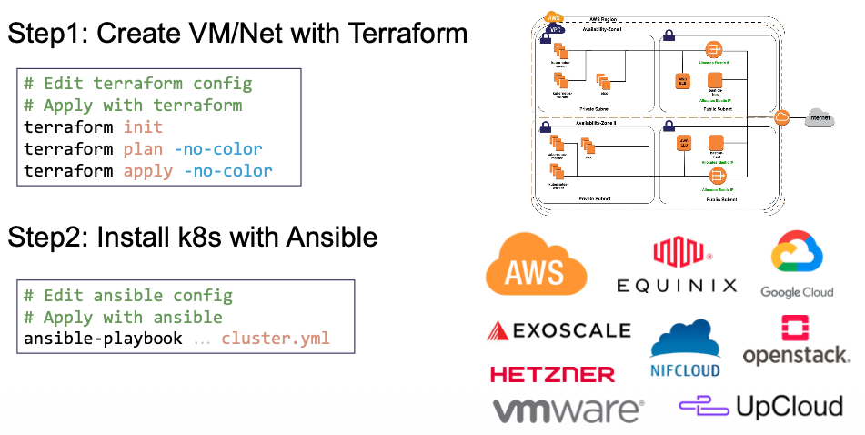

Kubespary 배포 분석
kubespary 소개 정리
kubespray는 Ansible 기반으로 쿠버네티스(Kubernetes) 클러스터를 자동으로 설치·업그레이드·관리하기 위한 오픈소스 배포 도구
kubespray 소개 : How to Deploy an AI-Optimized K8s Cluster with Kubespray - Youtube , Youtube2
주요 기능
- 퍼블릭/폐쇄망 서버 환경에서도 쿠버네티스 배포 가능

퍼블릭 서버 환경은 IaC(Terraform 등)으로 구성 → kubespary 로 K8S 배포 
폐쇄망(Air-Gap) 환경에서 구성을 위한 지원
- 컨트롤 플레인과 ETCD 에 대한 HA 환경 지원

- ControlPlane(Control component, ETCD) HA 설정 지원 → 사실 이 부분은 kubeadm 기능
- Worker Node(kubelet, kube-proxy)에서 api-server 파드들로 분산 접속을 위한 Client-Side LB 기능(Nginx) 지원
- 외부에서 api-server 파드들로 분산 접속을 위한 LB 엔드포인트 설정 제공 → LB는 직접 구성 필요
- kubeadm cert auto renew (매달) 기능 제공
- 다양한 설정 옵션 지원 & Best Practice 권장 설정 제공

Best Practice: NTP & Sysctl 
Best Practice: Cluster Hardening
- 다양한 Linux 배포판 지원

- 지속적인 통합 / 연동 테스트 Awesome CI Test

- 클러스터 운영 전반을 지원
- 신규 클러스터 생성
- (컨트롤 플레인) 클러스터 업그레이드
- 클러스터 스케일링
- 노드 관리 - 노드 추가, 노드 제거
- 클러스터 재설정
- 설정 관리
- 백업/복구, 업그레이드 시 etcd 스냅샷 수행
- Release Cycle in Kubespray : ‘26.01.24
Kubespray Kube Version (N-2) 2.29.x (master-branch) 1.31 ~ 1.33 (1.34) 2.28.x 1.30 ~ 1.32 2.27.x 1.29 ~ 1.31 - Kubespray 한 버전당 Kubernetes 3개 minor 지원
- 항상 1~2 버전 늦춰서 안정화 후 포함
- 운영 시 버전 추천
- Dev 환경 : Kubespray 최신 + K8s N-1
- Prd 환경 : Kubespray 최신-1 + K8s N-2
- (참고) Kubean : kubespray를 활용하는 클러스터 라이프사이클 관리 툴 - Github , Docs , Air-gapped
- 퍼블릭/폐쇄망 서버 환경에서도 쿠버네티스 배포 가능


- kubespray 설치 사전 요건
- Ansible v2.14+, Jinja 2.11+ and python-netaddr is installed on the machine that will run Ansible commands - Docs
- Ansible 2.17.3 이상 & Python 3.10 ~ 3.12 - Docs
- Spec : Control Plane (Memory 2 GB), Worker Node (Memory 1 GB)
- Linux Kernel Requirements : 5.8+ 이상 권장 - Docs
- Rocky Linux 9, 10 (experimental in 10: see Rocky Linux 10 notes) - Docs
실습 환경 배포
실습 환경 배포 수행
# 실습용 디렉터리 생성 mkdir k8s-kubespary cd k8s-kubespary # 파일 다운로드 https://raw.githubusercontent.com/gasida/vagrant-lab/refs/heads/main/k8s-kubespary/Vagrantfile https://raw.githubusercontent.com/gasida/vagrant-lab/refs/heads/main/k8s-kubespary/init_cfg.sh # 실습 환경 배포 vagrant up vagrant status
Vagrantfile
# Base Image https://portal.cloud.hashicorp.com/vagrant/discover/bento/rockylinux-10.0 BOX_IMAGE = "bento/rockylinux-10.0" BOX_VERSION = "202510.26.0" Vagrant.configure("2") do |config| # ControlPlane Nodes config.vm.define "k8s-ctr" do |subconfig| subconfig.vm.box = BOX_IMAGE subconfig.vm.box_version = BOX_VERSION subconfig.vm.provider "virtualbox" do |vb| vb.customize ["modifyvm", :id, "--groups", "/Kubespray-Lab"] vb.customize ["modifyvm", :id, "--nicpromisc2", "allow-all"] vb.name = "k8s-ctr" vb.cpus = 4 vb.memory = 4096 vb.linked_clone = true end subconfig.vm.host_name = "k8s-ctr" subconfig.vm.network "private_network", ip: "192.168.10.10" subconfig.vm.network "forwarded_port", guest: 22, host: "60100", auto_correct: true, id: "ssh" subconfig.vm.synced_folder "./", "/vagrant", disabled: true subconfig.vm.provision "shell", path: "init_cfg.sh" end end
init_cfg.sh
#!/usr/bin/env bash echo ">>>> Initial Config Start <<<<" echo "[TASK 1] Change Timezone and Enable NTP" timedatectl set-local-rtc 0 timedatectl set-timezone Asia/Seoul echo "[TASK 2] Disable firewalld and selinux" systemctl disable --now firewalld >/dev/null 2>&1 setenforce 0 sed -i 's/^SELINUX=enforcing/SELINUX=permissive/' /etc/selinux/config echo "[TASK 3] Disable and turn off SWAP & Delete swap partitions" swapoff -a sed -i '/swap/d' /etc/fstab sfdisk --delete /dev/sda 2 >/dev/null 2>&1 partprobe /dev/sda >/dev/null 2>&1 echo "[TASK 4] Config kernel & module" cat << EOF > /etc/modules-load.d/k8s.conf overlay br_netfilter EOF modprobe overlay >/dev/null 2>&1 modprobe br_netfilter >/dev/null 2>&1 cat << EOF >/etc/sysctl.d/k8s.conf net.bridge.bridge-nf-call-iptables = 1 net.bridge.bridge-nf-call-ip6tables = 1 net.ipv4.ip_forward = 1 EOF sysctl --system >/dev/null 2>&1 echo "[TASK 5] Setting Local DNS Using Hosts file" sed -i '/^127\.0\.\(1\|2\)\.1/d' /etc/hosts cat << EOF >> /etc/hosts 192.168.10.10 k8s-ctr EOF echo "[TASK 6] Delete default routing - enp0s9 NIC" # setenforce 0 설정 필요 nmcli connection modify enp0s9 ipv4.never-default yes nmcli connection up enp0s9 >/dev/null 2>&1 echo "sudo su -" >> /home/vagrant/.bashrc echo ">>>> Initial Config End <<<<"
vagrant ssh→ 사전 설정 수행 & git clone# user 확인 whoami pwd # Linux Kernel Requirements : 5.8+ 이상 권장 uname -a Linux k8s-ctr 6.12.0-55.39.1.el10_0.aarch64 #1 SMP PREEMPT_DYNAMIC Wed Oct 15 11:18:23 EDT 2025 aarch64 GNU/Linux # Python : 3.10 ~ 3.12 : (참고) bento/rockylinux-9 경우 3.9 which python && python -V which python3 && python3 -V 3.12.9 # pip , git 설치 dnf install -y python3-pip git which pip && pip -V which pip3 && pip3 -V pip 23.3.2 from /usr/lib/python3.12/site-packages/pip (python 3.12) # /etc/hosts 확인 ip -br -c -4 addr cat /etc/hosts ping -c 1 k8s-ctr # SSH 접속을 위한 설정 # ----------------- echo "root:qwe123" | chpasswd cat << EOF >> /etc/ssh/sshd_config PermitRootLogin yes PasswordAuthentication yes EOF systemctl restart sshd # Setting SSH Key ssh-keygen -t rsa -N "" -f /root/.ssh/id_rsa ls -l ~/.ssh # ssh-copy-id ssh-copy-id -o StrictHostKeyChecking=no root@192.168.10.10 root@192.168.10.10's password: qwe123 # ssh 접속 확인 : IP, hostname cat /root/.ssh/authorized_keys ssh root@192.168.10.10 hostname ssh -o StrictHostKeyChecking=no root@k8s-ctr hostname ssh root@k8s-ctr hostname # ----------------- # Clone Kubespray Repository git clone -b v2.29.1 https://github.com/kubernetes-sigs/kubespray.git /root/kubespray cd /root/kubespray # (옵션) IDE에서 VM SSH 접속(root/qwe123)해서 편집 창 열기 ~/.ssh/config Host k8s-ctr HostName 192.168.10.10 User root # 최상단 plybook 확인 -> 각각 import_playbook 확인 ls -l *.yml -rw-r--r--. 1 root root 88 Jan 31 13:37 cluster.yml # ansible.builtin.import_playbook: playbooks/cluster.yml -rw-r--r--. 1 root root 30 Jan 31 13:37 _config.yml -rw-r--r--. 1 root root 747 Jan 31 13:37 galaxy.yml -rw-r--r--. 1 root root 105 Jan 31 13:37 recover-control-plane.yml -rw-r--r--. 1 root root 85 Jan 31 13:37 remove-node.yml -rw-r--r--. 1 root root 85 Jan 31 13:37 remove_node.yml -rw-r--r--. 1 root root 85 Jan 31 13:37 reset.yml -rw-r--r--. 1 root root 85 Jan 31 13:37 scale.yml # ansible.builtin.import_playbook: playbooks/scale.yml -rw-r--r--. 1 root root 93 Jan 31 13:37 upgrade-cluster.yml -rw-r--r--. 1 root root 93 Jan 31 13:37 upgrade_cluster.yml # tree -L 2 ... ├── inventory │ ├── local │ └── sample ... ├── playbooks │ ├── ansible_version.yml │ ├── boilerplate.yml │ ├── cluster.yml* │ ├── facts.yml │ ├── install_etcd.yml │ ├── internal_facts.yml │ ├── recover_control_plane.yml │ ├── remove_node.yml │ ├── reset.yml │ ├── scale.yml │ └── upgrade_cluster.yml ... ├── roles │ ├── adduser │ ├── bastion-ssh-config │ ├── bootstrap-os │ ├── bootstrap_os │ ├── container-engine │ ├── download │ ├── dynamic_groups │ ├── etcd │ ├── etcdctl_etcdutl │ ├── etcd_defaults │ ├── helm-apps │ ├── kubernetes │ ├── kubernetes-apps │ ├── kubespray-defaults │ ├── kubespray_defaults │ ├── network_facts │ ├── network_plugin │ ├── recover_control_plane │ ├── remove-node │ ├── remove_node │ ├── reset │ ├── system_packages │ ├── upgrade │ ├── validate_inventory │ └── win_nodes ... # Install Python Dependencies cat requirements.txt ansible==10.7.0 # Needed for community.crypto module cryptography==46.0.2 # Needed for jinja2 json_query templating jmespath==1.0.1 # Needed for ansible.utils.ipaddr netaddr==1.3.0 pip3 install -r /root/kubespray/requirements.txt Successfully installed MarkupSafe-3.0.3 ansible-10.7.0 ansible-core-2.17.14 cffi-2.0.0 cryptography-46.0.2 jinja2-3.1.6 jmespath-1.0.1 netaddr-1.3.0 pycparser-3.0 resolvelib-1.0.1 # ansible 버전 확인 : Ansible 2.17.3 이상 which ansible ansible --version ansible [core 2.17.14] config file = /root/kubespray/ansible.cfg ... python version = 3.12.9 (main, Aug 14 2025, 00:00:00) [GCC 14.2.1 20250110 (Red Hat 14.2.1-7)] (/usr/bin/python3) jinja version = 3.1.6 libyaml = True # pip list 확인 pip list Package Version ------------------------- ----------- ansible 10.7.0 ansible-core 2.17.14 ... Jinja2 3.1.6 jmespath 1.0.1 ... netaddr 1.3.0 ... # 해당 폴더에서 ansible-playbook 실행 시 적용되는 ansible.cfg cat ansible.cfg [ssh_connection] # 통신 속도 및 안정성 최적화 pipelining=True # SSH 세션을 여러 번 열지 않고 하나의 세션에서 여러 명령을 한꺼번에 실행 ssh_args = -o ControlMaster=auto -o ControlPersist=30m -o ConnectionAttempts=100 -o UserKnownHostsFile=/dev/null ## ControlMaster=auto -o ControlPersist=30m: 한 번 연결된 SSH 커넥션을 30분 동안 유지합니다. 매번 로그인할 필요가 없어 성능이 향상됩니다. ## ConnectionAttempts=100: 네트워크 불안정으로 연결 실패 시 100번까지 재시도합니다. ## UserKnownHostsFile=/dev/null: 접속 대상의 지문(fingerprint)을 저장하지 않아 관리가 편해집니다. #control_path = ~/.ssh/ansible-%%r@%%h:%%p [defaults] # https://github.com/ansible/ansible/issues/56930 (to ignore group names with - and .) force_valid_group_names = ignore # Ansible은 원래 그룹 이름에 -나 . 사용을 제한하지만, 쿠버네티스 리소스 명칭 규칙상 이를 허용하도록 설정 host_key_checking=False # 새 서버 접속 시 "Are you sure you want to continue connecting?"이라는 확인 창이 뜨지 않게 합니다. gathering = smart # 대상 서버의 정보(Fact)를 한 번만 수집하고 /tmp에 JSON 파일로 저장합니다. (아래 설명 이어서) fact_caching = jsonfile # 재실행 시 서버 정보를 다시 수집하지 않아 시간이 단축됩니다. 86400(24시간) 동안 캐시를 유지합니다. fact_caching_connection = /tmp fact_caching_timeout = 86400 timeout = 300 stdout_callback = default display_skipped_hosts = no library = ./library callbacks_enabled = profile_tasks # 각 Task가 실행되는 데 걸리는 시간을 표시해 줍니다. 어떤 단계에서 병목이 생기는지 확인할 때 매우 유용합니다. roles_path = roles:$VIRTUAL_ENV/usr/local/share/kubespray/roles:$VIRTUAL_ENV/usr/local/share/ansible/roles:/usr/share/kubespray/roles deprecation_warnings=False inventory_ignore_extensions = ~, .orig, .bak, .ini, .cfg, .retry, .pyc, .pyo, .creds, .gpg # 백업용이나 임시 파일을 인벤토리로 인식하여 에러가 발생하는 것을 방지합니다. [inventory] ignore_patterns = artifacts, credentials # 배포 결과물(artifacts)이나 중요 정보(credentials) 폴더 내의 파일을 인벤토리 스캔 대상에서 제외합니다. # (참고) Vagrantfile cat Vagrantfile
Kubespary 를 통한 k8s 배포 (
5분정도 소요) : 목표 환경을 위한 파라미터 설정 - Variables# inventory 디렉터리 복사 cp -rfp /root/kubespray/inventory/sample /root/kubespray/inventory/mycluster tree inventory/mycluster/ inventory/mycluster/ ├── group_vars │ ├── all ... │ └── k8s_cluster │ ├── addons.yml │ ├── k8s-cluster.yml │ ├── k8s-net-calico.yml │ ├── k8s-net-cilium.yml │ ├── k8s-net-custom-cni.yml │ ├── k8s-net-flannel.yml │ ├── k8s-net-kube-ovn.yml │ ├── k8s-net-kube-router.yml │ ├── k8s-net-macvlan.yml │ └── kube_control_plane.yml └── inventory.ini # inventory.ini 작성 cat << EOF > /root/kubespray/inventory/mycluster/inventory.ini k8s-ctr ansible_host=192.168.10.10 ip=192.168.10.10 [kube_control_plane] k8s-ctr [etcd:children] kube_control_plane [kube_node] k8s-ctr EOF cat /root/kubespray/inventory/mycluster/inventory.ini # https://github.com/kubernetes-sigs/kubespray/blob/master/docs/ansible/vars.md ## <your-favorite-editor> inventory/mycluster/group_vars/all.yml # for every node, including etcd grep "^[^#]" inventory/mycluster/group_vars/all/all.yml --- bin_dir: /usr/local/bin loadbalancer_apiserver_port: 6443 loadbalancer_apiserver_healthcheck_port: 8081 no_proxy_exclude_workers: false kube_webhook_token_auth: false kube_webhook_token_auth_url_skip_tls_verify: false ntp_enabled: false ntp_manage_config: false ntp_servers: - "0.pool.ntp.org iburst" - "1.pool.ntp.org iburst" - "2.pool.ntp.org iburst" - "3.pool.ntp.org iburst" unsafe_show_logs: false allow_unsupported_distribution_setup: false ## <your-favorite-editor> inventory/mycluster/group_vars/k8s_cluster.yml # for every node in the cluster (not etcd when it's separate) grep "^[^#]" inventory/mycluster/group_vars/k8s_cluster/k8s-cluster.yml --- kube_config_dir: /etc/kubernetes kube_script_dir: "{{ bin_dir }}/kubernetes-scripts" kube_manifest_dir: "{{ kube_config_dir }}/manifests" kube_cert_dir: "{{ kube_config_dir }}/ssl" kube_token_dir: "{{ kube_config_dir }}/tokens" kube_api_anonymous_auth: true local_release_dir: "/tmp/releases" retry_stagger: 5 kube_owner: kube kube_cert_group: kube-cert kube_log_level: 2 credentials_dir: "{{ inventory_dir }}/credentials" kube_network_plugin: calico kube_network_plugin_multus: false kube_service_addresses: 10.233.0.0/18 kube_pods_subnet: 10.233.64.0/18 kube_network_node_prefix: 24 kube_service_addresses_ipv6: fd85:ee78:d8a6:8607::1000/116 kube_pods_subnet_ipv6: fd85:ee78:d8a6:8607::1:0000/112 kube_network_node_prefix_ipv6: 120 kube_apiserver_ip: "{{ kube_service_subnets.split(',') | first | ansible.utils.ipaddr('net') | ansible.utils.ipaddr(1) | ansible.utils.ipaddr('address') }}" kube_apiserver_port: 6443 # (https) kube_proxy_mode: ipvs kube_proxy_strict_arp: false kube_proxy_nodeport_addresses: >- {%- if kube_proxy_nodeport_addresses_cidr is defined -%} [{{ kube_proxy_nodeport_addresses_cidr }}] {%- else -%} [] {%- endif -%} kube_encrypt_secret_data: false cluster_name: cluster.local ndots: 2 dns_mode: coredns enable_nodelocaldns: true enable_nodelocaldns_secondary: false nodelocaldns_ip: 169.254.25.10 nodelocaldns_health_port: 9254 nodelocaldns_second_health_port: 9256 nodelocaldns_bind_metrics_host_ip: false nodelocaldns_secondary_skew_seconds: 5 enable_coredns_k8s_external: false coredns_k8s_external_zone: k8s_external.local enable_coredns_k8s_endpoint_pod_names: false resolvconf_mode: host_resolvconf deploy_netchecker: false skydns_server: "{{ kube_service_subnets.split(',') | first | ansible.utils.ipaddr('net') | ansible.utils.ipaddr(3) | ansible.utils.ipaddr('address') }}" skydns_server_secondary: "{{ kube_service_subnets.split(',') | first | ansible.utils.ipaddr('net') | ansible.utils.ipaddr(4) | ansible.utils.ipaddr('address') }}" dns_domain: "{{ cluster_name }}" container_manager: containerd kata_containers_enabled: false kubeadm_certificate_key: "{{ lookup('password', credentials_dir + '/kubeadm_certificate_key.creds length=64 chars=hexdigits') | lower }}" k8s_image_pull_policy: IfNotPresent kubernetes_audit: false default_kubelet_config_dir: "{{ kube_config_dir }}/dynamic_kubelet_dir" volume_cross_zone_attachment: false persistent_volumes_enabled: false event_ttl_duration: "1h0m0s" auto_renew_certificates: false # auto_renew_certificates_systemd_calendar: "Mon *-*-1,2,3,4,5,6,7 03:00:00" # First Monday of each month kubeadm_patches_dir: "{{ kube_config_dir }}/patches" kubeadm_patches: [] remove_anonymous_access: false # 테스트할 기능 관련 수정 sed -i 's|kube_network_plugin: calico|kube_network_plugin: flannel|g' inventory/mycluster/group_vars/k8s_cluster/k8s-cluster.yml sed -i 's|kube_proxy_mode: ipvs|kube_proxy_mode: iptables|g' inventory/mycluster/group_vars/k8s_cluster/k8s-cluster.yml sed -i 's|enable_nodelocaldns: true|enable_nodelocaldns: false|g' inventory/mycluster/group_vars/k8s_cluster/k8s-cluster.yml sed -i 's|auto_renew_certificates: false|auto_renew_certificates: true|g' inventory/mycluster/group_vars/k8s_cluster/k8s-cluster.yml sed -i 's|# auto_renew_certificates_systemd_calendar|auto_renew_certificates_systemd_calendar|g' inventory/mycluster/group_vars/k8s_cluster/k8s-cluster.yml grep -iE 'kube_network_plugin:|kube_proxy_mode|enable_nodelocaldns:|^auto_renew_certificates' inventory/mycluster/group_vars/k8s_cluster/k8s-cluster.yml kube_network_plugin: flannel kube_proxy_mode: iptables enable_nodelocaldns: false auto_renew_certificates: true auto_renew_certificates_systemd_calendar: "Mon *-*-1,2,3,4,5,6,7 03:00:00" ## systemd_calander에 걸린 cron 분석 # 실행 시점: 매월 첫 번째 월요일 03:00:00 # 조건 분석: # 1,2,3,4,5,6,7: 날짜가 1일에서 7일 사이여야 함 # Mon: 요일이 월요일이어야 함 # 두 조건이 결합되어 결과적으로 '매월 첫째 주 월요일'이 됩니다. ## flannel 설정 수정 inventory/mycluster/group_vars/k8s_cluster/k8s-net-flannel.yml cat inventory/mycluster/group_vars/k8s_cluster/k8s-net-flannel.yml echo "flannel_interface: enp0s9" >> inventory/mycluster/group_vars/k8s_cluster/k8s-net-flannel.yml grep "^[^#]" inventory/mycluster/group_vars/k8s_cluster/k8s-net-flannel.yml ## <your-favorite-editor> inventory/mycluster/group_vars/kube_control_plane.yml # for the control plane cat inventory/mycluster/group_vars/k8s_cluster/kube_control_plane.yml # Reservation for control plane kubernetes components # kube_memory_reserved: 512Mi # kube_cpu_reserved: 200m # kube_ephemeral_storage_reserved: 2Gi # kube_pid_reserved: "1000" # Reservation for control plane host system # system_memory_reserved: 256Mi # system_cpu_reserved: 250m # system_ephemeral_storage_reserved: 2Gi # system_pid_reserved: "1000" ## <your-favorite-editor> addons.yml grep "^[^#]" inventory/mycluster/group_vars/k8s_cluster/addons.yml --- helm_enabled: false registry_enabled: false metrics_server_enabled: false local_path_provisioner_enabled: false local_volume_provisioner_enabled: false gateway_api_enabled: false ingress_nginx_enabled: false ingress_publish_status_address: "" ingress_alb_enabled: false cert_manager_enabled: false metallb_enabled: false metallb_speaker_enabled: "{{ metallb_enabled }}" metallb_namespace: "metallb-system" argocd_enabled: false kube_vip_enabled: false node_feature_discovery_enabled: false # 테스트할 기능 관련 수정 sed -i 's|helm_enabled: false|helm_enabled: true|g' inventory/mycluster/group_vars/k8s_cluster/addons.yml sed -i 's|metrics_server_enabled: false|metrics_server_enabled: true|g' inventory/mycluster/group_vars/k8s_cluster/addons.yml sed -i 's|node_feature_discovery_enabled: false|node_feature_discovery_enabled: true|g' inventory/mycluster/group_vars/k8s_cluster/addons.yml grep -iE 'helm_enabled:|metrics_server_enabled:|node_feature_discovery_enabled:' inventory/mycluster/group_vars/k8s_cluster/addons.yml # etcd.yml : 파드가 아닌 systemd unit grep "^[^#]" inventory/mycluster/group_vars/all/etcd.yml --- etcd_data_dir: /var/lib/etcd etcd_deployment_type: host # containerd.yml cat inventory/mycluster/group_vars/all/containerd.yml --- # Please see roles/container-engine/containerd/defaults/main.yml for more configuration options # containerd_storage_dir: "/var/lib/containerd" # containerd_state_dir: "/run/containerd" # containerd_oom_score: 0 # containerd_default_runtime: "runc" # containerd_snapshotter: "native" # containerd_runc_runtime: # name: runc # type: "io.containerd.runc.v2" # engine: "" ...(생략)... # 기본 환경 정보 출력 저장 ip addr | tee -a ip_addr-1.txt ss -tnlp | tee -a ss-1.txt df -hT | tee -a df-1.txt findmnt | tee -a findmnt-1.txt sysctl -a | tee -a sysctl-1.txt # 지원 버전 정보 확인 cat roles/kubespray_defaults/vars/main/checksums.yml | grep -i kube -A40 # 배포: 아래처럼 반드시 ~/kubespray 디렉토리에서 ansible-playbook 를 실행하자! # Deploy Kubespray with Ansible Playbook - run the playbook as root # The option `--become` is required, as for example writing SSL keys in /etc/, # installing packages and interacting with various systemd daemons. ansible-playbook -i inventory/mycluster/inventory.ini -v cluster.yml -e kube_version="1.33.3" --list-tasks # 배포 전, Task 목록 확인 ANSIBLE_FORCE_COLOR=true ansible-playbook -i inventory/mycluster/inventory.ini -v cluster.yml -e kube_version="1.33.3" | tee kubespray_install.log # 설치 확인 : /root/.kube/config more kubespray_install.log kubectl get node -v=6 cat /root/.kube/config # k8s kubectl get node -owide NAME STATUS ROLES AGE VERSION INTERNAL-IP EXTERNAL-IP OS-IMAGE KERNEL-VERSION CONTAINER-RUNTIME k8s-ctr Ready control-plane 4m17s v1.33.3 192.168.10.10 <none> Rocky Linux 10.0 (Red Quartz) 6.12.0-55.39.1.el10_0.aarch64 containerd://2.1.5 kubectl get pod -A ... # 기본 환경 정보 출력 저장 ip addr | tee -a ip_addr-2.txt ss -tnlp | tee -a ss-2.txt df -hT | tee -a df-2.txt findmnt | tee -a findmnt-2.txt sysctl -a | tee -a sysctl-2.txt # 파일 출력 비교 : 빠져나오기 ':q' -> ':q' => 변경된 부분이 어떤 동작과 역할인지 조사해보기! , ctrl + f / b vi -d ip_addr-1.txt ip_addr-2.txt # flannel 및 cni0 veth 등이 추가됨 vi -d ss-1.txt ss-2.txt # kubelet, kube-proxy등 소켓 정보 추가됨 vi -d df-1.txt df-2.txt # overlayfs 추가됨 vi -d findmnt-1.txt findmnt-2.txt vi -d sysctl-1.txt sysctl-2.txt- Configurable Parameters in Kubespray - Docs
alias, 자동 완성 및 k9s 설치
# Source the completion source <(kubectl completion bash) source <(kubeadm completion bash) # Alias kubectl to k alias k=kubectl complete -o default -F __start_kubectl k # k9s 설치 : https://github.com/derailed/k9s CLI_ARCH=amd64 if [ "$(uname -m)" = "aarch64" ]; then CLI_ARCH=arm64; fi wget https://github.com/derailed/k9s/releases/latest/download/k9s_linux_${CLI_ARCH}.tar.gz tar -xzf k9s_linux_*.tar.gz ls -al k9s chown root:root k9s mv k9s /usr/local/bin/ chmod +x /usr/local/bin/k9s k9s
Ansible Playbook & Role 분석
Ansible Play → Task 확인 :
사전 검증 → 접근/부트스트랩 → etcd → node → control-plane → CNI → 애드온graph TD %% 사전 준비 단계 subgraph Preparation ["1. 사전 준비 및 검증"] A["Check Ansible version"] --> B["Inventory setup and validation"] B --> C["Install bastion ssh config"] C --> D["Bootstrap hosts for Ansible"] D --> E["Gather facts"] end %% etcd 설치 단계 subgraph ETCD ["2. 데이터베이스(etcd) 구축"] E --> F["Prepare for etcd install"] F --> G["Add worker nodes to etcd play"] G --> H["Install etcd"] end %% K8s 코어 설치 단계 subgraph Core ["3. 쿠버네티스 코어 설치"] H --> I["Install Kubernetes nodes"] I --> J["Install the control plane"] J --> K["Invoke kubeadm and install a CNI"] end %% 마무리 및 앱 설치 subgraph Finalization ["4. 부가 서비스 및 최적화"] K --> L["Install Calico Route Reflector"] L --> M["Patch Kubernetes for Windows"] M --> N["Install Kubernetes apps"] N --> O["Apply resolv.conf changes"] end %% 결과 리캡 O --> P{PLAY RECAP} %% 스타일링 style Preparation fill:#f9f,stroke:#333,stroke-width:2px style ETCD fill:#bbf,stroke:#333,stroke-width:2px style Core fill:#bfb,stroke:#333,stroke-width:2px style Finalization fill:#fdb,stroke:#333,stroke-width:2px style P fill:#fff,stroke:#f00,stroke-width:4px- PLAY
# cat kubespray_install.log | grep -E 'PLAY' PLAY [Check Ansible version] ****************************** # Kubespray가 지원하는 Ansible 버전인지 확인 PLAY [Inventory setup and validation] ********************* # inventory 설정 정합성 검증 : kube_control_plane, etcd 그룹 존재 여부, etcd 노드 수 (odd 권장), Pod CIDR / Service CIDR 유효성, Kubernetes 버전 지원 여부 PLAY [Install bastion ssh config] ************************* # Bastion(점프 호스트) 환경 지원 : bastion 미사용 시 대부분 skip PLAY [Bootstrap hosts for Ansible] ************************ # 모든 노드를 Ansible 실행 가능한 상태로 만듦 : Python 설치, sudo 권한 확보, 기본 패키지 설치, /usr/bin/python 보장 PLAY [Gather facts] *************************************** # Ansible fact 수집 : 이후 TASK들이: when: ansible_os_family == "Debian" 같은 조건 분기에서 사용됨 PLAY [Prepare for etcd install] *************************** # etcd 설치 전 사전 준비 : etcd user 생성, 디렉터리 생성, 방화벽 / 포트, cert 경로 준비 PLAY [Add worker nodes to the etcd play if needed] ******** # worker + etcd 겸용 노드 지원 : kube_node: + etcd: 둘 다 포함된 노드를 etcd PLAY에 추가 PLAY [Install etcd] *************************************** # etcd 설치 : etcd binary 설치, TLS 인증서 생성, systemd 등록, 클러스터 구성 PLAY [Install Kubernetes nodes] *************************** # 모든 노드에 공통 K8s 컴포넌트 설치, 아직 클러스터 join은 안 함 PLAY [Install the control plane] ************************** # kube_control_plane 그룹 : control-plane 노드 구성 PLAY [Invoke kubeadm and install a CNI] ******************* # kubeadm init / join 실행 , 네트워크(CNI) 설치 PLAY [Install Calico Route Reflector] ********************* # Calico BGP 미사용환경이면 skip PLAY [Patch Kubernetes for Windows] *********************** # Linux-only 환경이면 skip PLAY [Install Kubernetes apps] **************************** # 기본 애드온 설치 : CoreDNS, metrics-server 등 PLAY [Apply resolv.conf changes now that cluster DNS is up] # CoreDNS 설치 후 노드의 DNS 설정 최종 정리 : bootstrap 단계에선 임시 resolv.conf 사용, 클러스터 DNS 안정화 후 되돌림 PLAY RECAP ************************************************
TASK 559개
cat kubespray_install.log | grep -E 'TASK' | wc -l 559 cat kubespray_install.log | grep -E 'TASK' TASK [Check 2.17.3 <= Ansible version < 2.18.0] ******************************** TASK [Check that python netaddr is installed] ********************************** TASK [Check that jinja is not too old (install via pip)] *********************** TASK [dynamic_groups : Match needed groups by their old names or definition] *** TASK [validate_inventory : Stop if removed tags are used] ********************** TASK [validate_inventory : Stop if kube_control_plane group is empty] ********** TASK [validate_inventory : Stop if etcd group is empty in external etcd mode] *** TASK [validate_inventory : Stop if unsupported version of Kubernetes] ********** TASK [validate_inventory : Stop if known booleans are set as strings (Use JSON format on CLI: -e "{'key': true }")] *** TASK [validate_inventory : Stop if even number of etcd hosts] ****************** TASK [validate_inventory : Guarantee that enough network address space is available for all pods] *** TASK [validate_inventory : Check that kube_service_addresses is a network range] *** TASK [validate_inventory : Check that kube_pods_subnet is a network range] ***** TASK [validate_inventory : Check that kube_pods_subnet does not collide with kube_service_addresses] *** TASK [validate_inventory : Check that ipv4 IP range is enough for the nodes] *** TASK [validate_inventory : Stop if unsupported options selected] *************** TASK [validate_inventory : Ensure minimum containerd version] ****************** TASK [bootstrap_os : Fetch /etc/os-release] ************************************ TASK [bootstrap_os : Include tasks] ******************************************** TASK [bootstrap_os : Gather host facts to get ansible_distribution_version ansible_distribution_major_version] *** TASK [bootstrap_os : Add proxy to yum.conf or dnf.conf if http_proxy is defined] *** TASK [bootstrap_os : Check presence of fastestmirror.conf] ********************* TASK [system_packages : Gather OS information] ********************************* TASK [system_packages : Remove legacy docker repo file] ************************ TASK [system_packages : Manage packages] *************************************** TASK [bootstrap_os : Create remote_tmp for it is used by another module] ******* TASK [bootstrap_os : Gather facts] ********************************************* TASK [bootstrap_os : Assign inventory name to unconfigured hostnames (non-CoreOS, non-Flatcar, Suse and ClearLinux, non-Fedora)] *** TASK [bootstrap_os : Ensure bash_completion.d folder exists] ******************* TASK [network_facts : Gather ansible_default_ipv4] ***************************** TASK [network_facts : Set fallback_ip] ***************************************** TASK [network_facts : Gather ansible_default_ipv6] ***************************** TASK [network_facts : Set fallback_ip6] **************************************** TASK [network_facts : Set main access ip(access_ip based on ipv4_stack/ipv6_stack options).] *** TASK [network_facts : Set main ip(ip based on ipv4_stack/ipv6_stack options).] *** TASK [network_facts : Set main access ips(mixed ips for dualstack).] *********** TASK [network_facts : Set main ips(mixed ips for dualstack).] ****************** TASK [Gather minimal facts] **************************************************** TASK [Gather necessary facts (network)] **************************************** TASK [Gather necessary facts (hardware)] *************************************** TASK [adduser : User | Create User Group] ************************************** TASK [adduser : User | Create User] ******************************************** TASK [kubernetes/preinstall : Check if /etc/fstab exists] ********************** TASK [kubernetes/preinstall : Remove swapfile from /etc/fstab] ***************** TASK [kubernetes/preinstall : Mask swap.target (persist swapoff)] ************** TASK [kubernetes/preinstall : Disable swap] ************************************ TASK [kubernetes/preinstall : Check resolvconf] ******************************** TASK [kubernetes/preinstall : Check existence of /etc/resolvconf/resolv.conf.d] *** TASK [kubernetes/preinstall : Check status of /etc/resolv.conf] **************** TASK [kubernetes/preinstall : Fetch resolv.conf] ******************************* TASK [kubernetes/preinstall : NetworkManager | Check if host has NetworkManager] *** TASK [kubernetes/preinstall : Check systemd-resolved] ************************** TASK [kubernetes/preinstall : Set default dns if remove_default_searchdomains is false] *** TASK [kubernetes/preinstall : Set dns facts] *********************************** TASK [kubernetes/preinstall : Check if kubelet is configured] ****************** TASK [kubernetes/preinstall : Check if early DNS configuration stage] ********** TASK [kubernetes/preinstall : Target resolv.conf files] ************************ TASK [kubernetes/preinstall : Check if /etc/dhclient.conf exists] ************** TASK [kubernetes/preinstall : Check if /etc/dhcp/dhclient.conf exists] ********* TASK [kubernetes/preinstall : Target dhclient hook file for Red Hat family] **** TASK [kubernetes/preinstall : Check /usr readonly] ***************************** TASK [kubernetes/preinstall : Stop if non systemd OS type] ********************* TASK [kubernetes/preinstall : Stop if the os does not support] ***************** TASK [kubernetes/preinstall : Stop if memory is too small for control plane nodes] *** TASK [kubernetes/preinstall : Stop if memory is too small for nodes] *********** TASK [kubernetes/preinstall : Stop if cgroups are not enabled on nodes] ******** TASK [kubernetes/preinstall : Stop if ip var does not match local ips] ********* TASK [kubernetes/preinstall : Stop if access_ip is not pingable] *************** TASK [kubernetes/preinstall : Stop if bad hostname] **************************** TASK [kubernetes/preinstall : Stop if /etc/resolv.conf has no configured nameservers] *** TASK [kubernetes/preinstall : Create kubernetes directories] ******************* TASK [kubernetes/preinstall : Create other directories of root owner] ********** TASK [kubernetes/preinstall : Check if kubernetes kubeadm compat cert dir exists] *** TASK [kubernetes/preinstall : Create kubernetes kubeadm compat cert dir (kubernetes/kubeadm issue 1498)] *** TASK [kubernetes/preinstall : Create cni directories] ************************** TASK [kubernetes/preinstall : NetworkManager | Ensure NetworkManager conf.d dir] *** TASK [kubernetes/preinstall : NetworkManager | Prevent NetworkManager from managing K8S interfaces (kube-ipvs0/nodelocaldns)] *** TASK [kubernetes/preinstall : NetworkManager | Add nameservers to NM configuration] *** TASK [kubernetes/preinstall : Set default dns if remove_default_searchdomains is false] *** TASK [kubernetes/preinstall : NetworkManager | Add DNS search to NM configuration] *** TASK [kubernetes/preinstall : NetworkManager | Add DNS options to NM configuration] *** TASK [kubernetes/preinstall : Confirm selinux deployed] ************************ TASK [kubernetes/preinstall : Set selinux policy] ****************************** TASK [kubernetes/preinstall : Clean previously used sysctl file locations] ***** TASK [kubernetes/preinstall : Stat sysctl file configuration] ****************** TASK [kubernetes/preinstall : Change sysctl file path to link source if linked] *** TASK [kubernetes/preinstall : Make sure sysctl file path folder exists] ******** TASK [kubernetes/preinstall : Enable ip forwarding] **************************** TASK [kubernetes/preinstall : Check if we need to set fs.may_detach_mounts] **** TASK [kubernetes/preinstall : Ensure kubelet expected parameters are set] ****** TASK [kubernetes/preinstall : Disable fapolicyd service] *********************** TASK [kubernetes/preinstall : Check if we are running inside a Azure VM] ******* TASK [container-engine/validate-container-engine : Validate-container-engine | check if fedora coreos] *** TASK [container-engine/validate-container-engine : Validate-container-engine | set is_ostree] *** TASK [container-engine/validate-container-engine : Ensure kubelet systemd unit exists] *** TASK [container-engine/validate-container-engine : Populate service facts] ***** TASK [container-engine/validate-container-engine : Check if containerd is installed] *** TASK [container-engine/validate-container-engine : Check if docker is installed] *** TASK [container-engine/validate-container-engine : Check if crio is installed] *** TASK [container-engine/containerd-common : Containerd-common | check if fedora coreos] *** TASK [container-engine/containerd-common : Containerd-common | set is_ostree] *** TASK [container-engine/runc : Runc | check if fedora coreos] ******************* TASK [container-engine/runc : Runc | set is_ostree] **************************** TASK [container-engine/runc : Runc | Uninstall runc package managed by package manager] *** TASK [container-engine/runc : Runc | Download runc binary] ********************* TASK [container-engine/runc : Prep_download | Set a few facts] ***************** TASK [container-engine/runc : Download_file | Set pathname of cached file] ***** TASK [container-engine/runc : Download_file | Create dest directory on node] *** TASK [container-engine/runc : Download_file | Download item] ******************* TASK [container-engine/runc : Download_file | Extract file archives] *********** TASK [container-engine/runc : Copy runc binary from download dir] ************** TASK [container-engine/runc : Runc | Remove orphaned binary] ******************* TASK [container-engine/crictl : Install crictl] ******************************** TASK [container-engine/crictl : Crictl | Download crictl] ********************** TASK [container-engine/crictl : Prep_download | Set a few facts] *************** TASK [container-engine/crictl : Download_file | Set pathname of cached file] *** TASK [container-engine/crictl : Download_file | Create dest directory on node] *** TASK [container-engine/crictl : Download_file | Download item] ***************** TASK [container-engine/crictl : Download_file | Extract file archives] ********* TASK [container-engine/crictl : Extract_file | Unpacking archive] ************** TASK [container-engine/crictl : Install crictl config] ************************* TASK [container-engine/crictl : Copy crictl binary from download dir] ********** TASK [container-engine/nerdctl : Nerdctl | Download nerdctl] ******************* TASK [container-engine/nerdctl : Prep_download | Set a few facts] ************** TASK [container-engine/nerdctl : Download_file | Set pathname of cached file] *** TASK [container-engine/nerdctl : Download_file | Create dest directory on node] *** TASK [container-engine/nerdctl : Download_file | Download item] **************** TASK [container-engine/nerdctl : Download_file | Extract file archives] ******** TASK [container-engine/nerdctl : Extract_file | Unpacking archive] ************* TASK [container-engine/nerdctl : Nerdctl | Copy nerdctl binary from download dir] *** TASK [container-engine/nerdctl : Nerdctl | Create configuration dir] *********** TASK [container-engine/nerdctl : Nerdctl | Install nerdctl configuration] ****** TASK [container-engine/containerd : Containerd | Download containerd] ********** TASK [container-engine/containerd : Prep_download | Set a few facts] *********** TASK [container-engine/containerd : Download_file | Set pathname of cached file] *** TASK [container-engine/containerd : Download_file | Create dest directory on node] *** TASK [container-engine/containerd : Download_file | Download item] ************* TASK [container-engine/containerd : Download_file | Extract file archives] ***** TASK [container-engine/containerd : Containerd | Unpack containerd archive] **** TASK [container-engine/containerd : Containerd | Generate systemd service for containerd] *** TASK [container-engine/containerd : Containerd | Ensure containerd directories exist] *** TASK [container-engine/containerd : Containerd | Generate default base_runtime_spec] *** TASK [container-engine/containerd : Containerd | Store generated default base_runtime_spec] *** TASK [container-engine/containerd : Containerd | Write base_runtime_specs] ***** TASK [container-engine/containerd : Containerd | Copy containerd config file] *** TASK [container-engine/containerd : Containerd | Create registry directories] *** TASK [container-engine/containerd : Containerd | Write hosts.toml file] ******** TASK [container-engine/containerd : Containerd | Ensure containerd is started and enabled] *** TASK [download : Prep_download | Set a few facts] ****************************** TASK [download : Prep_download | Register docker images info] ****************** TASK [download : Prep_download | Create staging directory on remote node] ****** TASK [download : Download | Get kubeadm binary and list of required images] **** TASK [download : Prep_kubeadm_images | Download kubeadm binary] **************** TASK [download : Prep_download | Set a few facts] ****************************** TASK [download : Download_file | Set pathname of cached file] ****************** TASK [download : Download_file | Create dest directory on node] **************** TASK [download : Download_file | Download item] ******************************** TASK [download : Download_file | Extract file archives] ************************ TASK [download : Prep_kubeadm_images | Copy kubeadm binary from download dir to system path] *** TASK [download : Prep_kubeadm_images | Create kubeadm config] ****************** TASK [download : Prep_kubeadm_images | Generate list of required images] ******* TASK [download : Prep_kubeadm_images | Parse list of images] ******************* TASK [download : Prep_kubeadm_images | Convert list of images to dict for later use] *** TASK [download : Download | Download files / images] *************************** TASK [download : Prep_download | Set a few facts] ****************************** TASK [download : Download_file | Set pathname of cached file] ****************** TASK [download : Download_file | Create dest directory on node] **************** TASK [download : Download_file | Download item] ******************************** TASK [download : Download_file | Extract file archives] ************************ TASK [download : Extract_file | Unpacking archive] ***************************** TASK [download : Prep_download | Set a few facts] ****************************** TASK [download : Download_file | Set pathname of cached file] ****************** TASK [download : Download_file | Create dest directory on node] **************** TASK [download : Download_file | Download item] ******************************** TASK [download : Download_file | Extract file archives] ************************ TASK [download : Prep_download | Set a few facts] ****************************** TASK [download : Download_file | Set pathname of cached file] ****************** TASK [download : Download_file | Create dest directory on node] **************** TASK [download : Download_file | Download item] ******************************** TASK [download : Download_file | Extract file archives] ************************ TASK [download : Prep_download | Set a few facts] ****************************** TASK [download : Download_file | Set pathname of cached file] ****************** TASK [download : Download_file | Create dest directory on node] **************** TASK [download : Download_file | Download item] ******************************** TASK [download : Download_file | Extract file archives] ************************ TASK [download : Prep_download | Set a few facts] ****************************** TASK [download : Download_file | Set pathname of cached file] ****************** TASK [download : Download_file | Create dest directory on node] **************** TASK [download : Download_file | Download item] ******************************** TASK [download : Download_file | Extract file archives] ************************ TASK [download : Prep_download | Set a few facts] ****************************** TASK [download : Download_file | Set pathname of cached file] ****************** TASK [download : Download_file | Create dest directory on node] **************** TASK [download : Download_file | Download item] ******************************** TASK [download : Download_file | Extract file archives] ************************ TASK [download : Extract_file | Unpacking archive] ***************************** TASK [download : Prep_download | Set a few facts] ****************************** TASK [download : Download_file | Set pathname of cached file] ****************** TASK [download : Download_file | Create dest directory on node] **************** TASK [download : Download_file | Download item] ******************************** TASK [download : Download_file | Extract file archives] ************************ TASK [download : Prep_download | Set a few facts] ****************************** TASK [download : Download_file | Set pathname of cached file] ****************** TASK [download : Download_file | Create dest directory on node] **************** TASK [download : Download_file | Download item] ******************************** TASK [download : Download_file | Extract file archives] ************************ TASK [download : Prep_download | Set a few facts] ****************************** TASK [download : Download_file | Set pathname of cached file] ****************** TASK [download : Download_file | Create dest directory on node] **************** TASK [download : Download_file | Download item] ******************************** TASK [download : Download_file | Extract file archives] ************************ TASK [download : Extract_file | Unpacking archive] ***************************** TASK [download : Set default values for flag variables] ************************ TASK [download : Set_container_facts | Display the name of the image being processed] *** TASK [download : Set_container_facts | Set if containers should be pulled by digest] *** TASK [download : Set_container_facts | Define by what name to pull the image] *** TASK [download : Set_container_facts | Define file name of image] ************** TASK [download : Set_container_facts | Define path of image] ******************* TASK [download : Set image save/load command for containerd] ******************* TASK [download : Set image save/load command for containerd on localhost] ****** TASK [download : Download_container | Prepare container download] ************** TASK [download : Check_pull_required | Generate a list of information about the images on a node] *** TASK [download : Check_pull_required | Set pull_required if the desired image is not yet loaded] *** TASK [download : debug] ******************************************************** TASK [download : Download_container | Download image if required] ************** TASK [download : Download_container | Remove container image from cache] ******* TASK [download : Set default values for flag variables] ************************ TASK [download : Set_container_facts | Display the name of the image being processed] *** TASK [download : Set_container_facts | Set if containers should be pulled by digest] *** TASK [download : Set_container_facts | Define by what name to pull the image] *** TASK [download : Set_container_facts | Define file name of image] ************** TASK [download : Set_container_facts | Define path of image] ******************* TASK [download : Set image save/load command for containerd] ******************* TASK [download : Set image save/load command for containerd on localhost] ****** TASK [download : Download_container | Prepare container download] ************** TASK [download : Check_pull_required | Generate a list of information about the images on a node] *** TASK [download : Check_pull_required | Set pull_required if the desired image is not yet loaded] *** TASK [download : debug] ******************************************************** TASK [download : Download_container | Download image if required] ************** TASK [download : Download_container | Remove container image from cache] ******* TASK [download : Set default values for flag variables] ************************ TASK [download : Set_container_facts | Display the name of the image being processed] *** TASK [download : Set_container_facts | Set if containers should be pulled by digest] *** TASK [download : Set_container_facts | Define by what name to pull the image] *** TASK [download : Set_container_facts | Define file name of image] ************** TASK [download : Set_container_facts | Define path of image] ******************* TASK [download : Set image save/load command for containerd] ******************* TASK [download : Set image save/load command for containerd on localhost] ****** TASK [download : Download_container | Prepare container download] ************** TASK [download : Check_pull_required | Generate a list of information about the images on a node] *** TASK [download : Check_pull_required | Set pull_required if the desired image is not yet loaded] *** TASK [download : debug] ******************************************************** TASK [download : Download_container | Download image if required] ************** TASK [download : Download_container | Remove container image from cache] ******* TASK [download : Set default values for flag variables] ************************ TASK [download : Set_container_facts | Display the name of the image being processed] *** TASK [download : Set_container_facts | Set if containers should be pulled by digest] *** TASK [download : Set_container_facts | Define by what name to pull the image] *** TASK [download : Set_container_facts | Define file name of image] ************** TASK [download : Set_container_facts | Define path of image] ******************* TASK [download : Set image save/load command for containerd] ******************* TASK [download : Set image save/load command for containerd on localhost] ****** TASK [download : Download_container | Prepare container download] ************** TASK [download : Check_pull_required | Generate a list of information about the images on a node] *** TASK [download : Check_pull_required | Set pull_required if the desired image is not yet loaded] *** TASK [download : debug] ******************************************************** TASK [download : Download_container | Download image if required] ************** TASK [download : Download_container | Remove container image from cache] ******* TASK [download : Set default values for flag variables] ************************ TASK [download : Set_container_facts | Display the name of the image being processed] *** TASK [download : Set_container_facts | Set if containers should be pulled by digest] *** TASK [download : Set_container_facts | Define by what name to pull the image] *** TASK [download : Set_container_facts | Define file name of image] ************** TASK [download : Set_container_facts | Define path of image] ******************* TASK [download : Set image save/load command for containerd] ******************* TASK [download : Set image save/load command for containerd on localhost] ****** TASK [download : Download_container | Prepare container download] ************** TASK [download : Check_pull_required | Generate a list of information about the images on a node] *** TASK [download : Check_pull_required | Set pull_required if the desired image is not yet loaded] *** TASK [download : debug] ******************************************************** TASK [download : Download_container | Download image if required] ************** TASK [download : Download_container | Remove container image from cache] ******* TASK [download : Set default values for flag variables] ************************ TASK [download : Set_container_facts | Display the name of the image being processed] *** TASK [download : Set_container_facts | Set if containers should be pulled by digest] *** TASK [download : Set_container_facts | Define by what name to pull the image] *** TASK [download : Set_container_facts | Define file name of image] ************** TASK [download : Set_container_facts | Define path of image] ******************* TASK [download : Set image save/load command for containerd] ******************* TASK [download : Set image save/load command for containerd on localhost] ****** TASK [download : Download_container | Prepare container download] ************** TASK [download : Check_pull_required | Generate a list of information about the images on a node] *** TASK [download : Check_pull_required | Set pull_required if the desired image is not yet loaded] *** TASK [download : debug] ******************************************************** TASK [download : Download_container | Download image if required] ************** TASK [download : Download_container | Remove container image from cache] ******* TASK [download : Prep_download | Set a few facts] ****************************** TASK [download : Download_file | Set pathname of cached file] ****************** TASK [download : Download_file | Create dest directory on node] **************** TASK [download : Download_file | Download item] ******************************** TASK [download : Download_file | Extract file archives] ************************ TASK [download : Extract_file | Unpacking archive] ***************************** TASK [download : Set default values for flag variables] ************************ TASK [download : Set_container_facts | Display the name of the image being processed] *** TASK [download : Set_container_facts | Set if containers should be pulled by digest] *** TASK [download : Set_container_facts | Define by what name to pull the image] *** TASK [download : Set_container_facts | Define file name of image] ************** TASK [download : Set_container_facts | Define path of image] ******************* TASK [download : Set image save/load command for containerd] ******************* TASK [download : Set image save/load command for containerd on localhost] ****** TASK [download : Download_container | Prepare container download] ************** TASK [download : Check_pull_required | Generate a list of information about the images on a node] *** TASK [download : Check_pull_required | Set pull_required if the desired image is not yet loaded] *** TASK [download : debug] ******************************************************** TASK [download : Download_container | Download image if required] ************** TASK [download : Download_container | Remove container image from cache] ******* TASK [download : Set default values for flag variables] ************************ TASK [download : Set_container_facts | Display the name of the image being processed] *** TASK [download : Set_container_facts | Set if containers should be pulled by digest] *** TASK [download : Set_container_facts | Define by what name to pull the image] *** TASK [download : Set_container_facts | Define file name of image] ************** TASK [download : Set_container_facts | Define path of image] ******************* TASK [download : Set image save/load command for containerd] ******************* TASK [download : Set image save/load command for containerd on localhost] ****** TASK [download : Download_container | Prepare container download] ************** TASK [download : Check_pull_required | Generate a list of information about the images on a node] *** TASK [download : Check_pull_required | Set pull_required if the desired image is not yet loaded] *** TASK [download : debug] ******************************************************** TASK [download : Download_container | Download image if required] ************** TASK [download : Download_container | Remove container image from cache] ******* TASK [download : Set default values for flag variables] ************************ TASK [download : Set_container_facts | Display the name of the image being processed] *** TASK [download : Set_container_facts | Set if containers should be pulled by digest] *** TASK [download : Set_container_facts | Define by what name to pull the image] *** TASK [download : Set_container_facts | Define file name of image] ************** TASK [download : Set_container_facts | Define path of image] ******************* TASK [download : Set image save/load command for containerd] ******************* TASK [download : Set image save/load command for containerd on localhost] ****** TASK [download : Download_container | Prepare container download] ************** TASK [download : Check_pull_required | Generate a list of information about the images on a node] *** TASK [download : Check_pull_required | Set pull_required if the desired image is not yet loaded] *** TASK [download : debug] ******************************************************** TASK [download : Download_container | Download image if required] ************** TASK [download : Download_container | Remove container image from cache] ******* TASK [download : Set default values for flag variables] ************************ TASK [download : Set_container_facts | Display the name of the image being processed] *** TASK [download : Set_container_facts | Set if containers should be pulled by digest] *** TASK [download : Set_container_facts | Define by what name to pull the image] *** TASK [download : Set_container_facts | Define file name of image] ************** TASK [download : Set_container_facts | Define path of image] ******************* TASK [download : Set image save/load command for containerd] ******************* TASK [download : Set image save/load command for containerd on localhost] ****** TASK [download : Download_container | Prepare container download] ************** TASK [download : Check_pull_required | Generate a list of information about the images on a node] *** TASK [download : Check_pull_required | Set pull_required if the desired image is not yet loaded] *** TASK [download : debug] ******************************************************** TASK [download : Download_container | Download image if required] ************** TASK [download : Download_container | Remove container image from cache] ******* TASK [download : Set default values for flag variables] ************************ TASK [download : Set_container_facts | Display the name of the image being processed] *** TASK [download : Set_container_facts | Set if containers should be pulled by digest] *** TASK [download : Set_container_facts | Define by what name to pull the image] *** TASK [download : Set_container_facts | Define file name of image] ************** TASK [download : Set_container_facts | Define path of image] ******************* TASK [download : Set image save/load command for containerd] ******************* TASK [download : Set image save/load command for containerd on localhost] ****** TASK [download : Download_container | Prepare container download] ************** TASK [download : Check_pull_required | Generate a list of information about the images on a node] *** TASK [download : Check_pull_required | Set pull_required if the desired image is not yet loaded] *** TASK [download : debug] ******************************************************** TASK [download : Download_container | Download image if required] ************** TASK [download : Download_container | Remove container image from cache] ******* TASK [Gathering Facts] ********************************************************* TASK [Check if nodes needs etcd client certs (depends on network_plugin)] ****** TASK [adduser : User | Create User Group] ************************************** TASK [adduser : User | Create User] ******************************************** TASK [adduser : User | Create User Group] ************************************** TASK [adduser : User | Create User] ******************************************** TASK [etcd : Check etcd certs] ************************************************* TASK [etcd : Check_certs | Register certs that have already been generated on first etcd node] *** TASK [etcd : Check_certs | Set default value for 'sync_certs', 'gen_certs' and 'etcd_secret_changed' to false] *** TASK [etcd : Check certs | Register ca and etcd admin/member certs on etcd hosts] *** TASK [etcd : Check certs | Register ca and etcd node certs on kubernetes hosts] *** TASK [etcd : Check_certs | Set 'gen_certs' to true if expected certificates are not on the first etcd node(1/2)] *** TASK [etcd : Check_certs | Set 'gen_certs' to true if expected certificates are not on the first etcd node(2/2)] *** TASK [etcd : Check_certs | Set 'gen_*_certs' groups to track which nodes needs to have certs generated on first etcd node] *** TASK [etcd : Check_certs | Set 'etcd_member_requires_sync' to true if ca or member/admin cert and key don't exist on etcd member or checksum doesn't match] *** TASK [etcd : Check_certs | Set 'sync_certs' to true] *************************** TASK [etcd : Generate etcd certs] ********************************************** TASK [etcd : Gen_certs | create etcd cert dir] ********************************* TASK [etcd : Gen_certs | create etcd script dir (on k8s-ctr1)] ***************** TASK [etcd : Gen_certs | write openssl config] ********************************* TASK [etcd : Gen_certs | copy certs generation script] ************************* TASK [etcd : Gen_certs | run cert generation script for etcd and kube control plane nodes] *** TASK [etcd : Gen_certs | run cert generation script for all clients] *********** TASK [etcd : Gen_certs | check certificate permissions] ************************ TASK [etcd : Trust etcd CA] **************************************************** TASK [etcd : Gen_certs | target ca-certificate store file] ********************* TASK [etcd : Gen_certs | add CA to trusted CA dir] ***************************** TASK [etcd : Gen_certs | update ca-certificates (RedHat)] ********************** TASK [etcd : Trust etcd CA on nodes if needed] ********************************* TASK [etcd : Gen_certs | target ca-certificate store file] ********************* TASK [etcd : Gen_certs | add CA to trusted CA dir] ***************************** TASK [etcd : Gen_certs | Get etcd certificate serials] ************************* TASK [etcd : Set etcd_client_cert_serial] ************************************** TASK [etcdctl_etcdutl : Download etcd binary] ********************************** TASK [etcdctl_etcdutl : Prep_download | Set a few facts] *********************** TASK [etcdctl_etcdutl : Download_file | Set pathname of cached file] *********** TASK [etcdctl_etcdutl : Download_file | Create dest directory on node] ********* TASK [etcdctl_etcdutl : Download_file | Download item] ************************* TASK [etcdctl_etcdutl : Download_file | Extract file archives] ***************** TASK [etcdctl_etcdutl : Extract_file | Unpacking archive] ********************** TASK [etcdctl_etcdutl : Copy etcd binary] ************************************** TASK [etcdctl_etcdutl : Copy etcdctl and etcdutl binary from download dir] ***** TASK [etcdctl_etcdutl : Create etcdctl wrapper script] ************************* TASK [etcd : Install etcd] ***************************************************** TASK [etcd : Get currently-deployed etcd version] ****************************** TASK [etcd : Restart etcd if necessary] **************************************** TASK [etcd : Install | Copy etcd binary from download dir] ********************* TASK [etcd : Configure etcd] *************************************************** TASK [etcd : Configure | Check if etcd cluster is healthy] ********************* TASK [etcd : Configure | Refresh etcd config] ********************************** TASK [etcd : Refresh config | Create etcd config file] ************************* TASK [etcd : Configure | Copy etcd.service systemd file] *********************** TASK [etcd : Configure | reload systemd] *************************************** TASK [etcd : Configure | Ensure etcd is running] ******************************* TASK [etcd : Configure | Wait for etcd cluster to be healthy] ****************** TASK [etcd : Configure | Check if member is in etcd cluster] ******************* TASK [etcd : Refresh etcd config] ********************************************** TASK [etcd : Refresh config | Create etcd config file] ************************* TASK [etcd : Refresh etcd config again for idempotency] ************************ TASK [etcd : Refresh config | Create etcd config file] ************************* TASK [kubernetes/node : Set kubelet_cgroup_driver_detected fact for containerd] *** TASK [kubernetes/node : Set kubelet_cgroup_driver] ***************************** TASK [kubernetes/node : Ensure /var/lib/cni exists] **************************** TASK [kubernetes/node : Install | Copy kubelet binary from download dir] ******* TASK [kubernetes/node : Ensure nodePort range is reserved] ********************* TASK [kubernetes/node : Verify if br_netfilter module exists] ****************** TASK [kubernetes/node : Verify br_netfilter module path exists] **************** TASK [kubernetes/node : Enable br_netfilter module] **************************** TASK [kubernetes/node : Persist br_netfilter module] *************************** TASK [kubernetes/node : Check if bridge-nf-call-iptables key exists] *********** TASK [kubernetes/node : Enable bridge-nf-call tables] ************************** TASK [kubernetes/node : Set kubelet api version to v1beta1] ******************** TASK [kubernetes/node : Write kubelet environment config file (kubeadm)] ******* TASK [kubernetes/node : Write kubelet config file] ***************************** TASK [kubernetes/node : Write kubelet systemd init file] *********************** TASK [kubernetes/node : Enable kubelet] **************************************** TASK [kubernetes/control-plane : Pre-upgrade | Delete control plane manifests if etcd secrets changed] *** TASK [kubernetes/control-plane : Create kube-scheduler config] ***************** TASK [kubernetes/control-plane : Install | Copy kubectl binary from download dir] *** TASK [kubernetes/control-plane : Install kubectl bash completion] ************** TASK [kubernetes/control-plane : Set kubectl bash completion file permissions] *** TASK [kubernetes/control-plane : Check which kube-control nodes are already members of the cluster] *** TASK [kubernetes/control-plane : Set fact first_kube_control_plane] ************ TASK [kubernetes/control-plane : Kubeadm | Check if kubeadm has already run] *** TASK [kubernetes/control-plane : Kubeadm | aggregate all SANs] ***************** TASK [kubernetes/control-plane : Kubeadm | Create kubeadm config] ************** TASK [kubernetes/control-plane : Kubeadm | Initialize first control plane node (1st try)] *** TASK [kubernetes/control-plane : Create kubeadm token for joining nodes with 24h expiration (default)] *** TASK [kubernetes/control-plane : Set kubeadm_token] **************************** TASK [kubernetes/control-plane : Kubeadm | Join other control plane nodes] ***** TASK [kubernetes/control-plane : Set kubeadm_discovery_address] **************** TASK [kubernetes/control-plane : Upload certificates so they are fresh and not expired] *** TASK [kubernetes/control-plane : Parse certificate key if not set] ************* TASK [kubernetes/control-plane : Wait for k8s apiserver] *********************** TASK [kubernetes/control-plane : Check already run] **************************** TASK [kubernetes/control-plane : Kubeadm | Remove taint for control plane node with node role] *** TASK [kubernetes/control-plane : Include kubeadm secondary server apiserver fixes] *** TASK [kubernetes/control-plane : Update server field in component kubeconfigs] *** TASK [kubernetes/control-plane : Include kubelet client cert rotation fixes] *** TASK [kubernetes/control-plane : Fixup kubelet client cert rotation 1/2] ******* TASK [kubernetes/control-plane : Fixup kubelet client cert rotation 2/2] ******* TASK [kubernetes/control-plane : Install script to renew K8S control plane certificates] *** TASK [kubernetes/control-plane : Renew K8S control plane certificates monthly 1/2] *** TASK [kubernetes/control-plane : Renew K8S control plane certificates monthly 2/2] *** TASK [kubernetes/client : Set external kube-apiserver endpoint] **************** TASK [kubernetes/client : Create kube config dir for current/ansible become user] *** TASK [kubernetes/client : Copy admin kubeconfig to current/ansible become user home] *** TASK [kubernetes/client : Wait for k8s apiserver] ****************************** TASK [kubernetes-apps/cluster_roles : Kubernetes Apps | Wait for kube-apiserver] *** TASK [kubernetes-apps/cluster_roles : Kubernetes Apps | Add ClusterRoleBinding to admit nodes] *** TASK [kubernetes-apps/cluster_roles : Apply workaround to allow all nodes with cert O=system:nodes to register] *** TASK [kubernetes-apps/cluster_roles : Kubernetes Apps | Remove old webhook ClusterRole] *** TASK [kubernetes-apps/cluster_roles : Kubernetes Apps | Remove old webhook ClusterRoleBinding] *** TASK [kubernetes-apps/cluster_roles : PriorityClass | Copy k8s-cluster-critical-pc.yml file] *** TASK [kubernetes-apps/cluster_roles : PriorityClass | Create k8s-cluster-critical] *** TASK [kubernetes/kubeadm : Set kubeadm_discovery_address] ********************** TASK [kubernetes/kubeadm : Check if kubelet.conf exists] *********************** TASK [kubernetes/kubeadm : Check if kubeadm CA cert is accessible] ************* TASK [kubernetes/kubeadm : Fetch CA certificate from control plane node] ******* TASK [kubernetes/kubeadm : Check if discovery kubeconfig exists] *************** TASK [kubernetes/kubeadm : Get current resourceVersion of kube-proxy configmap] *** TASK [kubernetes/kubeadm : Update server field in kube-proxy kubeconfig] ******* TASK [kubernetes/kubeadm : Get new resourceVersion of kube-proxy configmap] **** TASK [kubernetes/kubeadm : Set ca.crt file permission] ************************* TASK [kubernetes/kubeadm : Restart all kube-proxy pods to ensure that they load the new configmap] *** TASK [kubernetes/node-label : Kubernetes Apps | Wait for kube-apiserver] ******* TASK [kubernetes/node-label : Set role node label to empty list] *************** TASK [kubernetes/node-label : Set inventory node label to empty list] ********** TASK [kubernetes/node-label : debug] ******************************************* TASK [kubernetes/node-label : debug] ******************************************* TASK [kubernetes/node-taint : Set role and inventory node taint to empty list] *** TASK [kubernetes/node-taint : debug] ******************************************* TASK [kubernetes/node-taint : debug] ******************************************* TASK [network_plugin/cni : CNI | make sure /opt/cni/bin exists] **************** TASK [network_plugin/cni : CNI | Copy cni plugins] ***************************** TASK [network_plugin/cni : CNI | make sure /opt/cni/bin exists] **************** TASK [network_plugin/cni : CNI | Copy cni plugins] ***************************** TASK [network_plugin/flannel : Flannel | Create Flannel manifests] ************* TASK [network_plugin/flannel : Flannel | Start Resources] ********************** TASK [network_plugin/flannel : Flannel | Wait for flannel subnet.env file presence] *** TASK [win_nodes/kubernetes_patch : Ensure that user manifests directory exists] *** TASK [win_nodes/kubernetes_patch : Check current nodeselector for kube-proxy daemonset] *** TASK [win_nodes/kubernetes_patch : Apply nodeselector patch for kube-proxy daemonset] *** TASK [win_nodes/kubernetes_patch : debug] ************************************** TASK [win_nodes/kubernetes_patch : debug] ************************************** TASK [kubernetes-apps/ansible : Kubernetes Apps | Wait for kube-apiserver] ***** TASK [kubernetes-apps/ansible : Kubernetes Apps | CoreDNS] ********************* TASK [kubernetes-apps/helm : Helm | Gather os specific variables] ************** TASK [kubernetes-apps/helm : Helm | Install PyYaml] **************************** TASK [kubernetes-apps/helm : Helm | Download helm] ***************************** TASK [kubernetes-apps/helm : Prep_download | Set a few facts] ****************** TASK [kubernetes-apps/helm : Download_file | Set pathname of cached file] ****** TASK [kubernetes-apps/helm : Download_file | Create dest directory on node] **** TASK [kubernetes-apps/helm : Download_file | Download item] ******************** TASK [kubernetes-apps/helm : Download_file | Extract file archives] ************ TASK [kubernetes-apps/helm : Extract_file | Unpacking archive] ***************** TASK [kubernetes-apps/helm : Helm | Copy helm binary from download dir] ******** TASK [kubernetes-apps/helm : Helm | Get helm completion] *********************** TASK [kubernetes-apps/helm : Helm | Install helm completion] ******************* TASK [kubernetes-apps/metrics_server : Metrics Server | Delete addon dir] ****** TASK [kubernetes-apps/metrics_server : Metrics Server | Create addon dir] ****** TASK [kubernetes-apps/metrics_server : Metrics Server | Templates list] ******** TASK [kubernetes-apps/metrics_server : Metrics Server | Create manifests] ****** TASK [kubernetes-apps/metrics_server : Metrics Server | Apply manifests] ******* TASK [adduser : User | Create User Group] ************************************** TASK [adduser : User | Create User] ******************************************** TASK [kubernetes/preinstall : Check resolvconf] ******************************** TASK [kubernetes/preinstall : Check existence of /etc/resolvconf/resolv.conf.d] *** TASK [kubernetes/preinstall : Check status of /etc/resolv.conf] **************** TASK [kubernetes/preinstall : Fetch resolv.conf] ******************************* TASK [kubernetes/preinstall : NetworkManager | Check if host has NetworkManager] *** TASK [kubernetes/preinstall : Check systemd-resolved] ************************** TASK [kubernetes/preinstall : Set default dns if remove_default_searchdomains is false] *** TASK [kubernetes/preinstall : Set dns facts] *********************************** TASK [kubernetes/preinstall : Check if kubelet is configured] ****************** TASK [kubernetes/preinstall : Check if early DNS configuration stage] ********** TASK [kubernetes/preinstall : Target resolv.conf files] ************************ TASK [kubernetes/preinstall : Check if /etc/dhclient.conf exists] ************** TASK [kubernetes/preinstall : Check if /etc/dhcp/dhclient.conf exists] ********* TASK [kubernetes/preinstall : Target dhclient hook file for Red Hat family] **** TASK [kubernetes/preinstall : Check /usr readonly] ***************************** TASK [kubernetes/preinstall : NetworkManager | Ensure NetworkManager conf.d dir] *** TASK [kubernetes/preinstall : NetworkManager | Prevent NetworkManager from managing K8S interfaces (kube-ipvs0/nodelocaldns)] *** TASK [kubernetes/preinstall : NetworkManager | Add nameservers to NM configuration] *** TASK [kubernetes/preinstall : Set default dns if remove_default_searchdomains is false] *** TASK [kubernetes/preinstall : NetworkManager | Add DNS search to NM configuration] *** TASK [kubernetes/preinstall : NetworkManager | Add DNS options to NM configuration] ***
- TASK
# 세부 task 559개 cat kubespray_install.log | grep -E 'TASK' | wc -l 559 cat kubespray_install.log | grep -E 'TASK' TASK [Check 2.17.3 <= Ansible version < 2.18.0] ******************************** TASK [dynamic_groups : Match needed groups by their old names or definition] *** TASK [validate_inventory : Stop if removed tags are used] ********************** TASK [bootstrap_os : Fetch /etc/os-release] ************************************ TASK [system_packages : Gather OS information] ********************************* TASK [bootstrap_os : Create remote_tmp for it is used by another module] ******* TASK [network_facts : Gather ansible_default_ipv4] ***************************** TASK [Gather minimal facts] **************************************************** TASK [adduser : User | Create User Group] ************************************** TASK [kubernetes/preinstall : Check if /etc/fstab exists] ********************** TASK [container-engine/validate-container-engine : Validate-container-engine | check if fedora coreos] *** TASK [download : Prep_download | Set a few facts] ****************************** TASK [Gathering Facts] ********************************************************* TASK [Check if nodes needs etcd client certs (depends on network_plugin)] ****** TASK [adduser : User | Create User Group] ************************************** TASK [etcd : Check etcd certs] ************************************************* TASK [etcdctl_etcdutl : Download etcd binary] ********************************** TASK [etcd : Install etcd] ***************************************************** TASK [kubernetes/node : Set kubelet_cgroup_driver_detected fact for containerd] *** TASK [kubernetes/control-plane : Pre-upgrade | Delete control plane manifests if etcd secrets changed] *** TASK [kubernetes/client : Set external kube-apiserver endpoint] **************** TASK [kubernetes-apps/cluster_roles : Kubernetes Apps | Wait for kube-apiserver] *** TASK [kubernetes/kubeadm : Set kubeadm_discovery_address] ********************** TASK [kubernetes/node-label : Set role node label to empty list] *************** TASK [network_plugin/cni : CNI | make sure /opt/cni/bin exists] **************** TASK [network_plugin/flannel : Flannel | Create Flannel manifests] ************* TASK [win_nodes/kubernetes_patch : Ensure that user manifests directory exists] *** TASK [kubernetes-apps/ansible : Kubernetes Apps | Wait for kube-apiserver] ***** TASK [kubernetes-apps/helm : Helm | Gather os specific variables] ************** TASK [kubernetes-apps/metrics_server : Metrics Server | Delete addon dir] ****** TASK [adduser : User | Create User Group] ************************************** TASK [kubernetes/preinstall : Check resolvconf] ********************************
- PLAY
- playbooks/cluster.yml 설치 절차 따라가보기
- /root/kubespray/
cluster.yml→playbooks/cluster.yml# cat /root/kubespray/cluster.yml --- - name: Install Kubernetes ansible.builtin.import_playbook: playbooks/cluster.yml
cluster.yml은 Kubespray의 메인 플레이북으로, 클러스터 생성의 전체 과정을 정의
- /root/kubespray/


playbooks/cluster.yml: 전체 과정A. 초기화 및 정보 수집 (Boilerplate & Facts)
- 모든 노드에 공통적으로 필요한 설정을 적용하고, 각 서버의 사양 정보를 수집하여 이후 설치 단계에서 변수로 활용합니다.
B. 인프라 및 엔진 준비 (Prepare for etcd & container-engine)
- kubernetes/preinstall: 방화벽, 커널 파라미터, Swap 비활성화 등 K8s 설치를 위한 OS 최적화를 수행합니다.
- container-engine: Docker나 Containerd 같은 컨테이너 런타임을 설치합니다.
- download: 설치에 필요한 모든 바이너리와 이미지들을 미리 다운로드합니다.
C. 데이터 저장소 및 노드 구성 (Etcd & K8s Nodes)
- etcd: 쿠버네티스의 상태 정보를 저장하는 DB 클러스터를 구축합니다.
- kubernetes/node: 모든 노드에 Kubelet, Kube-proxy 등 기초 컴포넌트를 설치합니다.
D. 컨트롤 플레인 및 네트워크 (Control Plane & CNI)
- control-plane: 마스터 노드에 API 서버, 스케줄러 등을 설정합니다.
- kubeadm:
kubeadm init또는join을 통해 클러스터를 하나로 묶습니다.
- network_plugin: Calico, Flannel 등 CNI를 설치하여 파드 간 통신을 가능하게 합니다.
E. 부가 서비스 설치 (Apps & DNS)
- Ingress Controller, Storage Provisioner 등 클러스터 운영에 필요한 앱들을 배포하고, 최종적으로 노드의 DNS(
resolv.conf)가 클러스터 내부 DNS를 바라보도록 수정합니다.
graph TD %% 시작 Start([Start: cluster.yml]) --> Common["1. Common & Facts<br/>(boilerplate / internal_facts)"] %% 준비 단계 Common --> Prepare["2. Prepare Infrastructure"] subgraph "Prepare Group" Prepare --> PreInstall["Role: kubernetes/preinstall"] PreInstall --> CE["Role: container-engine"] CE --> DL["Role: download (Binaries/Images)"] end %% etcd 설치 DL --> ETCD["3. Install etcd<br/>(import: install_etcd.yml)"] %% 노드 및 컨트롤 플레인 ETCD --> Nodes["4. Install K8s Nodes<br/>(Role: kubernetes/node)"] Nodes --> CP["5. Install Control Plane"] subgraph "Control Plane Group" CP --> CPRoles["Role: control-plane / client"] CPRoles --> ClusterRoles["Role: cluster_roles"] end %% 클러스터 조인 및 네트워크 ClusterRoles --> Network["6. Kubeadm & CNI"] subgraph "Network & Join Group" Network --> Kubeadm["Role: kubeadm (Init/Join)"] Kubeadm --> LabelTaint["Role: node-label / node-taint"] LabelTaint --> CNI["Role: network_plugin (Calico etc.)"] end %% 마무리 및 앱 설치 CNI --> Apps["7. Install Kubernetes Apps"] subgraph "Apps Group" Apps --> Ingress["Role: ingress / policy / storage"] Ingress --> K8sApps["Role: kubernetes-apps"] end %% 최종 설정 K8sApps --> DNS["8. Apply resolv.conf changes"] DNS --> End([End: Cluster Deployment Complete]) %% 스타일 설정 style Start fill:#f96,stroke:#333 style End fill:#f96,stroke:#333 style ETCD fill:#bbf,stroke:#333 style CP fill:#bfb,stroke:#333 style Network fill:#fdb,stroke:#333- 파일 내용 확인
cat playbooks/cluster.yml --- - name: Common tasks for every playbooks import_playbook: boilerplate.yml - name: Gather facts import_playbook: internal_facts.yml - name: Prepare for etcd install hosts: k8s_cluster:etcd # 이 작업은 쿠버네티스 클러스터에 속한 모든 노드(k8s_cluster)와 etcd 전용 노드(etcd) 전체를 대상으로 실행. gather_facts: false any_errors_fatal: "{{ any_errors_fatal | default(true) }}" # 하나라도 에러가 발생하면 전체 배포 프로세스를 즉시 중단합니다. environment: "{{ proxy_disable_env }}" # 인터넷 통신 시 프록시 설정을 제어합니다. 주로 내부 통신 시 프록시를 우회하도록 설정할 때 사용됩니다. roles: - { role: kubespray_defaults } # Kubespray 전체에서 사용하는 공통 변수(경로, 버전 등)를 로드합니다. - { role: kubernetes/preinstall, tags: preinstall } # OS 레벨의 사전 설정을 수행합니다. 예) 커널 파라미터(sysctl) 최적화 등 - { role: "container-engine", tags: "container-engine", when: deploy_container_engine } # 컨테이너 런타임(containerd, Docker 등)을 설치합니다. - { role: download, tags: download, when: "not skip_downloads" } # 설치에 필요한 모든 바이너리와 컨테이너 이미지를 다운로드합니다. - name: Install etcd vars: etcd_cluster_setup: true # etcd를 “클러스터 모드”로 초기화. 단일 노드라도 내부 로직은 클러스터 기준으로 동작. 신규 클러스터 생성 시 반드시 true etcd_events_cluster_setup: "{{ etcd_events_cluster_enabled }}" # true 일 경우 events 전용 etcd 클러스터를 별도로 구성, 대부분 환경에서는 false import_playbook: install_etcd.yml # Playbook을 import 하는 구조, 즉, 여기에는 hosts:가 없고 install_etcd.yml 안에 실제 Play들이 있음. - name: Install Kubernetes nodes # 이 노드를 "kubelet이 돌아가는 Kubernetes 노드"로 만든다. hosts: k8s_cluster # 모든 k8s 노드 : control-plane , worker gather_facts: false any_errors_fatal: "{{ any_errors_fatal | default(true) }}" environment: "{{ proxy_disable_env }}" roles: - { role: kubespray_defaults } - { role: kubernetes/node, tags: node } # 예) kubelet 설치 등 - name: Install the control plane hosts: kube_control_plane # control-plane 노드만 gather_facts: false any_errors_fatal: "{{ any_errors_fatal | default(true) }}" environment: "{{ proxy_disable_env }}" roles: - { role: kubespray_defaults } - { role: kubernetes/control-plane, tags: control-plane } # 설치 : apiserver, kcm, scheduler - { role: kubernetes/client, tags: client } # kubectl 설치, admin kubeconfig 생성 준비 - { role: kubernetes-apps/cluster_roles, tags: cluster-roles } # Kubernetes 기본 ClusterRole 생성, bootstrap / node / admin 권한 관련 - name: Invoke kubeadm and install a CNI hosts: k8s_cluster gather_facts: false any_errors_fatal: "{{ any_errors_fatal | default(true) }}" environment: "{{ proxy_disable_env }}" roles: - { role: kubespray_defaults } - { role: kubernetes/kubeadm, tags: kubeadm} # kubeadm init* / join* 실행 - { role: kubernetes/node-label, tags: node-label } # inventory 기반으로 node label 설정 - { role: kubernetes/node-taint, tags: node-taint } # control-plane taint 설정 - { role: kubernetes-apps/common_crds } # CNI / ingress / storage에서 사용하는 공통 CRD 먼저 설치 - { role: network_plugin, tags: network } # 실제 CNI 플러그인 설치 단계* : Calico / Cilium / Flannel / Weave 등 - name: Install Calico Route Reflector hosts: calico_rr gather_facts: false any_errors_fatal: "{{ any_errors_fatal | default(true) }}" environment: "{{ proxy_disable_env }}" roles: - { role: kubespray_defaults } - { role: network_plugin/calico/rr, tags: ['network', 'calico_rr'] } - name: Patch Kubernetes for Windows hosts: kube_control_plane[0] gather_facts: false any_errors_fatal: "{{ any_errors_fatal | default(true) }}" environment: "{{ proxy_disable_env }}" roles: - { role: kubespray_defaults } - { role: win_nodes/kubernetes_patch, tags: ["control-plane", "win_nodes"] } - name: Install Kubernetes apps hosts: kube_control_plane # control-plane 노드만 : 실제로는 클러스터 전체에 리소스를 배포하지만, 명령 실행 위치만 control-plane gather_facts: false any_errors_fatal: "{{ any_errors_fatal | default(true) }}" environment: "{{ proxy_disable_env }}" roles: - { role: kubespray_defaults } # 공통 변수 로딩, apps 관련 enable/disable 값 정리 - { role: kubernetes-apps/external_cloud_controller, tags: external-cloud-controller } # cloud-controller-manager 외부 실행 버전, 베어메탈 / lab 환경이면 보통 비활성 - { role: kubernetes-apps/policy_controller, tags: policy-controller } # Kubernetes Policy 계열 컨트롤러, 예) PodSecurity Admission, OPA / Gatekeeper 연계 - { role: kubernetes-apps/ingress_controller, tags: ingress-controller } # Ingress Controller 설치, 예) NGINX Ingress, HAProxy Ingress, Traefik - { role: kubernetes-apps/external_provisioner, tags: external-provisioner } # 외부 스토리지 프로비저너, 예) CSI provisioner, NFS external provisioner, Ceph RBD / CephFS - { role: kubernetes-apps, tags: apps } # CoreDNS (이미 설치됐지만 재확인), Metrics Server, Local Path Provisioner, Helm add-ons - name: Apply resolv.conf changes now that cluster DNS is up hosts: k8s_cluster # 모든 노드 gather_facts: false any_errors_fatal: "{{ any_errors_fatal | default(true) }}" environment: "{{ proxy_disable_env }}" roles: - { role: kubespray_defaults } - { role: kubernetes/preinstall, when: "dns_mode != 'none' and resolvconf_mode == 'host_resolvconf'", tags: resolvconf, dns_late: true }
playbooks/boilerplate.yml→ansible_version.yml→ roles (dynamic_groups, validate_inventory) 소개cat playbooks/boilerplate.yml --- - name: Check ansible version import_playbook: ansible_version.yml # These are inventory compatibility tasks with two purposes: # - to ensure we keep compatibility with old style group names # - to reduce inventory boilerplate (defining parent groups / empty groups) - name: Inventory setup and validation hosts: all gather_facts: false tags: always roles: - dynamic_groups - validate_inventory - name: Install bastion ssh config hosts: bastion[0] gather_facts: false environment: "{{ proxy_disable_env }}" roles: - { role: kubespray_defaults } - { role: bastion-ssh-config, tags: ["localhost", "bastion"] }ansible_version.ymlgraph LR Start([Run Playbook]) --> A[Check Ansible Version] A -- Pass --> B[Check Python netaddr] B -- Pass --> C[Check Jinja2 Version] C -- Pass --> End([Ready to Install K8s]) A -- Fail --> Error1[/Stop: Update Ansible/] B -- Fail --> Error2[/Stop: Install netaddr/] C -- Fail --> Error3[/Stop: Upgrade Jinja2/]cat playbooks/ansible_version.yml --- - name: Check Ansible version hosts: all gather_facts: false become: false run_once: true # 모든 호스트를 대상으로 설정되어 있지만, run_once 옵션 덕분에 실제로는 딱 한 번만 실행됩니다. (버전 체크는 배포 서버에서 한 번만 하면 되기 때문입니다.) vars: minimal_ansible_version: 2.17.3 maximal_ansible_version: 2.18.0 tags: always # 다른 특정 태그를 지정해서 실행하더라도, 이 버전 체크 과정은 항상 포함되도록 합니다. tasks: # 목적: Kubespray 소스 코드와 Ansible 버전 간의 호환성을 보장 : 현재 설치된 Ansible 버전이 2.17.3 이상이고 2.18.0 미만인지 확인 - name: "Check {{ minimal_ansible_version }} <= Ansible version < {{ maximal_ansible_version }}" assert: msg: "Ansible must be between {{ minimal_ansible_version }} and {{ maximal_ansible_version }} exclusive - you have {{ ansible_version.string }}" that: - ansible_version.string is version(minimal_ansible_version, ">=") - ansible_version.string is version(maximal_ansible_version, "<") tags: - check - name: "Check that python netaddr is installed" # Python netaddr 라이브러리 설치 확인 : pip3 list | grep netaddr assert: msg: "Python netaddr is not present" that: "'127.0.0.1' | ansible.utils.ipaddr" # ipaddr 필터를 사용해 127.0.0.1을 처리해보고, 라이브러리가 없어서 에러가 나면 설치가 안 된 것으로 판단 tags: - check - name: "Check that jinja is not too old (install via pip)" # Jinja2 템플릿 엔진 버전 확인 assert: msg: "Your Jinja version is too old, install via pip" that: "{% set test %}It works{% endset %}{{ test == 'It works' }}" # 최신 Jinja2 문법({% set ... %})을 실제로 실행해보고 정상 작동 여부를 확인 tags: - check
dynamic_groups : 이름 표준화(과거 이름 수용), k8s_cluster 그룹 자동 생성
- 사용자가 인벤토리(inventory) 파일에 과거 방식의 이름(예:
kube-master)으로 그룹을 만들어두었더라도, Kubespray가 내부적으로 사용하는 최신 이름(예:kube_control_plane)으로 서버들을 자동으로 재분류해주는 역할.
- 이름 표준화: 사용자가 하이픈()을 썼든 언더바(
_)를 썼든, Kubespray 내부 로직은 항상kube_control_plane이라는 표준화된 이름을 참조할 수 있게 합니다.
- 계층적 구조 형성: 사용자가 워커 노드(
kube_node)와 마스터 노드(kube_control_plane)만 정의해도, 이 Role이 실행되면서 두 그룹을 합친k8s_cluster라는 거대한 그룹을 자동으로 생성합니다. 덕분에 이후 작업에서 "모든 클러스터 노드"를 한 번에 지칭하기 쉬워집니다.
graph LR subgraph "사용자 입력 (Inventory)" A[kube-master] B[kube-node] C[calico-rr] end subgraph "자동 매핑 (dynamic_groups)" A --> A1[kube_control_plane] B --> B1[kube_node] C --> C1[calico_rr] end subgraph "최종 통합 그룹" A1 --> Cluster[k8s_cluster] B1 --> Cluster C1 --> Cluster end style Cluster fill:#f96,stroke:#333,stroke-width:2px# tree roles/dynamic_groups/ roles/dynamic_groups/ └── tasks └── main.yml cat roles/dynamic_groups/tasks/main.yml --- - name: Match needed groups by their old names or definition vars: group_mappings: # "A라는 이름은 B라는 이름을 포함한다"는 매핑 규칙을 정의 kube_control_plane: # 과거 이름인 kube-master를 포함 - kube-master kube_node: # 과거 이름인 kube-node를 포함 - kube-node calico_rr: - calico-rr no_floating: - no-floating k8s_cluster: # kube_node, kube_control_plane, calico_rr 그룹에 속한 모든 서버를 하나로 묶어줌 - kube_node - kube_control_plane - calico_rr group_by: # 실행 중에(In-memory) 새로운 Ansible 그룹을 생성 : 조건에 맞는 서버들을 key값(예: k8s_cluster)으로 명명된 그룹에 실시간으로 할당 key: "{{ item.key }}" when: group_names | intersect(item.value) | length > 0 # 겹치는 이름이 하나라도 있다면 아래의 group_by를 실행 loop: "{{ group_mappings | dict2items }}"- 사용자가 인벤토리(inventory) 파일에 과거 방식의 이름(예:
validate_inventory : 클러스터를 설치하기 전, 사용자가 설정한 인벤토리와 변수들이 논리적으로 타당한지 검증
graph TD Start([Check Start]) --> Legacy["1. Legacy Tag Check<br/>(master -> control-plane)"] Legacy --> GroupCheck["2. Group Structure Check"] subgraph "Group Validation" GroupCheck --> G1["Control-plane empty?"] G1 --> G2["ETCD count odd?"] end G2 --> VersionCheck["3. Version & Type Check"] subgraph "Compatibility" VersionCheck --> V1["K8s Version supported?"] V1 --> V2["Variables Type (Bool) valid?"] V2 --> V3["Container Manager compatible?"] end V3 --> NetworkCheck["4. Network Logic Check"] subgraph "Network Validation" NetworkCheck --> N1["Valid Network Range?"] N1 --> N2["Pod Subnet vs Service IP Collision?"] N2 --> N3["IP Range enough for Node count?"] N3 --> N4["Max Pods vs CIDR prefix?"] end N4 --> ServiceCheck["5. Service & Cloud Options"] subgraph "Services" ServiceCheck --> S1["RBAC enabled for Dashboard?"] S1 --> S2["Valid Cloud Provider?"] end S2 --> Success([Validation Success]) %% 에러 시 중단 G1 -- Fail --> Stop([STOP: Error Message]) G2 -- Fail --> Stop V1 -- Fail --> Stop N2 -- Fail --> Stop N3 -- Fail --> Stop style Start fill:#f9f,stroke:#333 style Success fill:#bfb,stroke:#333 style Stop fill:#fbb,stroke:#f00,stroke-width:2px style GroupValidation fill:#eee- 그룹 및 노드 수 검증:
kube_control_plane그룹이 비어있지 않은지 확인.
- etcd 노드 수: 데이터 일관성을 위해 etcd 호스트 개수가 홀수인지 확인 (짝수일 경우 쿼럼 문제 발생).
- 네트워크 설정 검증 (가장 복잡하고 중요):
- Pod용 서브넷(
kube_pods_subnet)과 서비스용 IP 대역(kube_service_addresses)이 서로 충돌(중복)하지 않는지 확인.
- 노드당 할당된 Pod 수(
kubelet_max_pods)가 할당된 네트워크 주소 범위보다 크지 않은지 확인.
- 전체 클러스터 노드 수에 비해 IP 대역이 충분한지 계산.
- Pod용 서브넷(
- 호환성 및 버전 체크:
- 사용 중인 쿠버네티스 버전이 해당 Kubespray 릴리스에서 지원되는 최소 버전 이상인지 확인.
- 컨테이너 매니저(Docker, Containerd, CRI-O)와 부가 기능(Kata, gVisor) 간의 조합이 유효한지 확인.
- 변수 타입 및 필수 값:
- Boolean 값이 문자열(String)로 잘못 설정되지 않았는지 검사.
- RBAC, Cloud Provider, Dashboard 등 상호 의존성이 있는 설정들이 올바르게 짝지어졌는지 확인.
- 파일 내용
# tree roles/validate_inventory/ roles/validate_inventory/ ├── meta │ └── main.yml └── tasks └── main.yml cat roles/validate_inventory/meta/main.yml --- dependencies: - role: kubespray_defaults cat roles/validate_inventory/tasks/main.yml --- # This should only contains check of: # - the inventory # - extra variables # - ansible commandline # -> nothing depending on facts or similar cluster state # Checks depending on current state (of the nodes or the cluster) # should be in roles/kubernetes/preinstall/tasks/0040-verify-settings.yml - name: Stop if removed tags are used assert: # assert 모듈: that 조건이 거짓(false)이면 즉시 실행을 멈추고 msg 내용을 출력합니다. msg: The tag 'master' is removed. Use 'control-plane' instead that: - ('master' not in ansible_run_tags) - ('master' not in ansible_skip_tags) # TODO: Remove checks after next release - name: Stop if kube_control_plane group is empty assert: that: groups.get( 'kube_control_plane' ) run_once: true # 이 검증은 인벤토리 전체를 대상으로 한 번만 수행하면 되므로, 모든 노드에서 반복 실행하지 않고 효율적으로 한 번만 실행합니다. when: not ignore_assert_errors - name: Stop if etcd group is empty in external etcd mode assert: that: groups.get('etcd') or etcd_deployment_type == 'kubeadm' fail_msg: "Group 'etcd' cannot be empty in external etcd mode" run_once: true when: - not ignore_assert_errors - name: Warn if `kube_network_plugin` is `none debug: msg: | "WARNING! => `kube_network_plugin` is set to `none`. The network configuration will be skipped. The cluster won't be ready to use, we recommend to select one of the available plugins" when: - kube_network_plugin == 'none' - name: Stop if unsupported version of Kubernetes assert: that: kube_version is version(kube_version_min_required, '>=') msg: "The current release of Kubespray only support newer version of Kubernetes than {{ kube_version_min_required }} - You are trying to apply {{ kube_version }}" when: not ignore_assert_errors - name: "Stop if known booleans are set as strings (Use JSON format on CLI: -e \"{'key': true }\")" assert: that: - download_run_once | type_debug == 'bool' - deploy_netchecker | type_debug == 'bool' - download_always_pull | type_debug == 'bool' - helm_enabled | type_debug == 'bool' - openstack_lbaas_enabled | type_debug == 'bool' run_once: true when: not ignore_assert_errors - name: Stop if even number of etcd hosts assert: that: groups.get('etcd', groups.kube_control_plane) | length is not divisibleby 2 run_once: true when: - not ignore_assert_errors # This assertion will fail on the safe side: One can indeed schedule more pods # on a node than the CIDR-range has space for when additional pods use the host # network namespace. It is impossible to ascertain the number of such pods at # provisioning time, so to establish a guarantee, we factor these out. # NOTICE: the check blatantly ignores the inet6-case - name: Guarantee that enough network address space is available for all pods assert: that: "{{ (kubelet_max_pods | default(110)) | int <= (2 ** (32 - kube_network_node_prefix | int)) - 2 }}" msg: "Do not schedule more pods on a node than inet addresses are available." when: - not ignore_assert_errors - ('k8s_cluster' in group_names) - kube_network_plugin not in ['calico', 'none'] - ipv4_stack | bool - name: Stop if RBAC is not enabled when dashboard is enabled assert: that: rbac_enabled when: - dashboard_enabled - not ignore_assert_errors - name: Check cloud_provider value assert: that: cloud_provider == 'external' when: - cloud_provider - not ignore_assert_errors - name: Check external_cloud_provider value assert: that: external_cloud_provider in ['hcloud', 'huaweicloud', 'oci', 'openstack', 'vsphere', 'manual'] when: - cloud_provider == 'external' - not ignore_assert_errors - name: "Check that kube_service_addresses is a network range" assert: that: - kube_service_addresses | ansible.utils.ipaddr('net') msg: "kube_service_addresses = '{{ kube_service_addresses }}' is not a valid network range" run_once: true when: ipv4_stack | bool - name: "Check that kube_pods_subnet is a network range" assert: that: - kube_pods_subnet | ansible.utils.ipaddr('net') msg: "kube_pods_subnet = '{{ kube_pods_subnet }}' is not a valid network range" run_once: true when: ipv4_stack | bool - name: "Check that kube_pods_subnet does not collide with kube_service_addresses" assert: that: - kube_pods_subnet | ansible.utils.ipaddr(kube_service_addresses) | string == 'None' msg: "kube_pods_subnet cannot be the same network segment as kube_service_addresses" run_once: true when: ipv4_stack | bool - name: "Check that ipv4 IP range is enough for the nodes" assert: that: - 2 ** (kube_network_node_prefix - kube_pods_subnet | ansible.utils.ipaddr('prefix')) >= groups['k8s_cluster'] | length msg: "Not enough ipv4 IPs are available for the desired node count." when: - ipv4_stack | bool - kube_network_plugin != 'calico' run_once: true - name: "Check that kube_service_addresses_ipv6 is a network range" assert: that: - kube_service_addresses_ipv6 | ansible.utils.ipaddr('net') msg: "kube_service_addresses_ipv6 = '{{ kube_service_addresses_ipv6 }}' is not a valid network range" run_once: true when: ipv6_stack | bool - name: "Check that kube_pods_subnet_ipv6 is a network range" assert: that: - kube_pods_subnet_ipv6 | ansible.utils.ipaddr('net') msg: "kube_pods_subnet_ipv6 = '{{ kube_pods_subnet_ipv6 }}' is not a valid network range" run_once: true when: ipv6_stack | bool - name: "Check that kube_pods_subnet_ipv6 does not collide with kube_service_addresses_ipv6" assert: that: - kube_pods_subnet_ipv6 | ansible.utils.ipaddr(kube_service_addresses_ipv6) | string == 'None' msg: "kube_pods_subnet_ipv6 cannot be the same network segment as kube_service_addresses_ipv6" run_once: true when: ipv6_stack | bool - name: "Check that ipv6 IP range is enough for the nodes" assert: that: - 2 ** (kube_network_node_prefix_ipv6 - kube_pods_subnet_ipv6 | ansible.utils.ipaddr('prefix')) >= groups['k8s_cluster'] | length msg: "Not enough ipv6 IPs are available for the desired node count." when: - ipv6_stack | bool - kube_network_plugin != 'calico' run_once: true - name: Stop if unsupported options selected assert: that: - kube_network_plugin in ['calico', 'flannel', 'cloud', 'cilium', 'cni', 'kube-ovn', 'kube-router', 'macvlan', 'custom_cni', 'none'] - dns_mode in ['coredns', 'coredns_dual', 'manual', 'none'] - kube_proxy_mode in ['iptables', 'ipvs', 'nftables'] - cert_management in ['script', 'none'] - resolvconf_mode in ['docker_dns', 'host_resolvconf', 'none'] - etcd_deployment_type in ['host', 'docker', 'kubeadm'] - etcd_deployment_type in ['host', 'kubeadm'] or container_manager == 'docker' - container_manager in ['docker', 'crio', 'containerd'] msg: The selected choice is not supported run_once: true - name: Warn if `enable_dual_stack_networks` is set debug: msg: "WARNING! => `enable_dual_stack_networks` deprecation. Please switch to using ipv4_stack and ipv6_stack." when: - enable_dual_stack_networks is defined - name: Stop if download_localhost is enabled but download_run_once is not assert: that: download_run_once msg: "download_localhost requires enable download_run_once" when: download_localhost - name: Stop if kata_containers_enabled is enabled when container_manager is docker assert: that: container_manager != 'docker' msg: "kata_containers_enabled support only for containerd and crio-o. See https://github.com/kata-containers/documentation/blob/1.11.4/how-to/run-kata-with-k8s.md#install-a-cri-implementation for details" when: kata_containers_enabled - name: Stop if gvisor_enabled is enabled when container_manager is not containerd assert: that: container_manager == 'containerd' msg: "gvisor_enabled support only compatible with containerd. See https://github.com/kubernetes-sigs/kubespray/issues/7650 for details" when: gvisor_enabled - name: Ensure minimum containerd version assert: that: containerd_version is version(containerd_min_version_required, '>=') msg: "containerd_version is too low. Minimum version {{ containerd_min_version_required }}" run_once: true when: - containerd_version not in ['latest', 'edge', 'stable'] - container_manager == 'containerd' - name: Stop if auto_renew_certificates is enabled when certificates are managed externally (kube_external_ca_mode is true) assert: that: not auto_renew_certificates msg: "Variable auto_renew_certificates must be disabled when CA are managed externally: kube_external_ca_mode = true" when: - kube_external_ca_mode - not ignore_assert_errors- 그룹 및 노드 수 검증:
- kubespray_defaults : Kubespray 전체 play / role / task가 참조하는 ‘최상위 기본 변수 집합’ ← bastion 대상이 아니여서 여기서는 Skip 되긴함
- 여기 값은 언제든 override 가능 , 하지만 override 안 하면 전부 여기 기준
roles/kubespray_defaults/defaults/main/main.yml : 공통 변수 기본값
flowchart TD A[kubespray_defaults<br/>defaults/main.yml] A --> B[접속/Bootstrap 변수<br/>SSH, SELinux, Proxy] A --> C[Kubernetes Core<br/>kube_version, kubeadm phases] A --> D[DNS 설계<br/>CoreDNS, NodeLocalDNS] A --> E[Network 설계<br/>Pod CIDR, Service CIDR] A --> F[API Server Endpoint 계산<br/>LB, kube-vip] A --> G[etcd 토폴로지 계산<br/>peer/client URL] A --> H[Container Runtime<br/>containerd / CRI socket] A --> I[Security / Auth<br/>RBAC, Authorization] A --> J[Addon Enable Flags] B --> K[preinstall role] C --> L[kubeadm role] D --> M[kubernetes-apps/coredns] E --> N[network_plugin role] F --> O[kubernetes/control-plane] G --> P[install_etcd.yml] H --> Q[kubernetes/node] I --> O J --> R[kubernetes-apps/*]tree roles/kubespray_defaults roles/kubespray_defaults ├── defaults │ └── main │ ├── download.yml # 바이너리/이미지 다운로드 관련 설정 │ └── main.yml # 핵심 변수 정의 └── vars └── main ├── checksums.yml # 파일 checksum 정의 └── main.yml # cat roles/kubespray_defaults/defaults/main/main.yml ... # Choose network plugin (cilium, calico, kube-ovn or flannel. Use cni for generic cni plugin) kube_network_plugin: calico # Kubernetes internal network for services, unused block of space. kube_service_addresses: 10.233.0.0/18 # internal network. When used, it will assign IP addresses from this range to individual pods. kube_pods_subnet: 10.233.64.0/18 # internal network node size allocation (optional). This is the size allocated to each node for pod IP address allocation. Note that the number of pods per node is also limited by the kubelet_max_pods variable which defaults to 110. kube_network_node_prefix: 24 # Configure Dual Stack networking (i.e. both IPv4 and IPv6) # enable_dual_stack_networks: false # deprecated # enable_dual_stack_networks: false 설정해도 아래 bind :: 동작함.. # Configure IPv4 Stack networking ipv4_stack: true # Configure IPv6 Stack networking ipv6_stack: "{{ enable_dual_stack_networks | default(false) }}" # 기본값이 false 인데, 아래는 왜 :: 인가?.. 여튼 false 체크해보기 # loadbalancer_apiserver_localhost (nginx/haproxy) will deploy on control plane nodes on 127.0.0.1:{{ loadbalancer_apiserver_port | default(kube_apiserver_port) }} too. kube_apiserver_bind_address: "::" # << 0.0.0.0 로 변경 시, api-server 파드 동작 실패.. # Set additional sysctl variables to modify Linux kernel variables, for example: additional_sysctl: # - { name: kernel.pid_max, value: 131072 } additional_sysctl: [] ## List of key=value pairs that describe feature gates for the k8s cluster. kube_feature_gates: [] kube_apiserver_feature_gates: [] kube_controller_feature_gates: [] kube_scheduler_feature_gates: [] kube_proxy_feature_gates: [] kubelet_feature_gates: [] kubeadm_feature_gates: [] # sysctl_file_path to add sysctl conf to sysctl_file_path: "/etc/sysctl.d/99-sysctl.conf" # ignore sysctl errors about unknown keys sysctl_ignore_unknown_keys: false # 다운로드 URL 확인 cat roles/kubespray_defaults/defaults/main/download.yml ... github_url: https://github.com dl_k8s_io_url: https://dl.k8s.io storage_googleapis_url: https://storage.googleapis.com get_helm_url: https://get.helm.sh # Download URLs kubelet_download_url: "{{ dl_k8s_io_url }}/release/v{{ kube_version }}/bin/linux/{{ image_arch }}/kubelet" kubectl_download_url: "{{ dl_k8s_io_url }}/release/v{{ kube_version }}/bin/linux/{{ image_arch }}/kubectl" kubeadm_download_url: "{{ dl_k8s_io_url }}/release/v{{ kube_version }}/bin/linux/{{ image_arch }}/kubeadm" ... --------------------- # sysctl 커널 파라미터 적용 값 확인 cat /etc/sysctl.d/99-sysctl.conf net.ipv4.ip_forward=1 kernel.keys.root_maxbytes=25000000 kernel.keys.root_maxkeys=1000000 kernel.panic=10 kernel.panic_on_oops=1 vm.overcommit_memory=1 vm.panic_on_oom=0 net.ipv4.ip_local_reserved_ports=30000-32767 net.bridge.bridge-nf-call-iptables=1 net.bridge.bridge-nf-call-arptables=1 net.bridge.bridge-nf-call-ip6tables=1
roles/kubespray_defaults/defaults/main/download.yml : 다운로드 대상 이미지/바이너리 설정
A. 다운로드 정책 / 캐시 전략
B. 이미지 Pull 엔진 추상화
C. 버전 결정 로직 (checksum 기반)
D. 다운로드 URL 생성
E. 이미지/바이너리 Repo 정의
F. downloads: 실제 다운로드 객체 목록 (핵심)
G. download_defaults: 공통 fallback
flowchart TD A[kubespray_defaults<br/>download.yml] A --> B[Download Policy<br/>cache / run_once / retries] A --> C[Runtime Detection<br/>containerd / crio / docker] A --> D[Version Resolution<br/>checksum 기반] A --> E[URL 자동 생성] A --> F[downloads 객체 목록] F --> G{enabled == true?} G -- No --> X[Skip] G -- Yes --> H{container or file?} H -- container --> I[Image Pull<br/>nerdctl / crictl / docker] H -- file --> J[get_url + checksum] I --> K[Target Node Groups] J --> K K --> L[roles/download 실행]tree roles/kubespray_defaults roles/kubespray_defaults ├── defaults │ └── main │ ├── download.yml # 바이너리/이미지 다운로드 관련 설정 │ └── main.yml # 핵심 변수 정의 └── vars └── main ├── checksums.yml # 파일 checksum 정의 └── main.yml # cat roles/kubespray_defaults/defaults/main/download.yml ... ## A. 다운로드 정책 / 캐시 전략 local_release_dir: /tmp/releases # 노드에 실제 배포될 파일 위치 download_cache_dir: /tmp/kubespray_cache # Ansible runner 캐시 download_run_once: false # 1회 다운로드 → 공유 download_localhost: false # localhost에서 다운로드 download_force_cache: false # 캐시 강제 재사용 download_retries: 4 ## B. 이미지 Pull 엔진 추상화 image_command_tool: nerdctl / crictl / docker # container_manager 에 따른 Pull 도구 image_pull_command: lookup(...) image_info_command: lookup(...) ## C. 버전 결정 로직 (checksum 기반) : ✔️ Checksum 목록 = 허용된 버전 집합 , ✔️ 가장 최신 안정 버전 자동 선택, ✔️ Kubernetes 버전과 호환성 보장 containerd_version: "{{ (containerd_archive_checksums['amd64'] | dict2items)[0].key }}" ## D. 다운로드 URL 생성 : (Repo) × (Version) × (Arch) kubelet_download_url: "{{ dl_k8s_io_url }}/release/v{{ kube_version }}/bin/linux/{{ image_arch }}/kubelet" ## E. 이미지/바이너리 Repo 정의 : Mirror / Private registry override 용이, 공급망 분리 설계 kube_image_repo: registry.k8s.io docker_image_repo: docker.io quay_image_repo: quay.io github_image_repo: ghcr.io ## F. downloads: 실제 다운로드 객체 목록 (핵심) ### 구조 공통 패턴 <name>: enabled: <조건> container: true|false # container / file 이중 모델(타입별 의미) : container: true(이미지 pull), file: true(바이너리 / YAML 다운로드) file: true|false # 위 설명 참고 repo: tag: url: checksum: dest: groups: # Node Group 기반 배포 전략(그룹별 의미) : etcd(etcd 전용), k8s_cluster(모든 노드), kube_control_plane(컨트롤플레인), kube_node(워커) ### 예시 ① kubelet (바이너리) kubelet: enabled: true file: true dest: /tmp/releases/kubelet-... url: ... checksum: ... groups: [k8s_cluster] ### 예시 ② coredns (컨테이너 이미지) coredns: enabled: "{{ dns_mode in ['coredns', 'coredns_dual'] }}" container: true repo: registry.k8s.io/coredns tag: v1.12.1 groups: [k8s_cluster] ## G. download_defaults: 공통 fallback - 누락 필드 방지 download_defaults: container: false file: false enabled: false- 실제 실행 흐름
- kubespray_defaults 로드
- download.yml 변수 등록
- roles/download 실행
- downloads dict 순회
- enabled == true 필터
- group 매칭
- container or file 분기
- pull / get_url / unarchive 수행
- local_release_dir: /tmp/releases : 노드에 실제 배포될 파일 위치 → 설치 후 확인
tree /tmp/releases/ /tmp/releases/ ├── cni-plugins-linux-arm64-1.8.0.tgz ├── containerd-2.1.5-linux-arm64.tar.gz ├── containerd-rootless-setuptool.sh ├── containerd-rootless.sh ├── crictl ├── crictl-1.33.0-linux-arm64.tar.gz ├── etcd-3.5.25-linux-arm64.tar.gz ├── etcd-v3.5.25-linux-arm64 │ ├── Documentation │ │ ├── dev-guide │ │ │ └── apispec │ │ │ └── swagger │ │ │ ├── rpc.swagger.json │ │ │ ├── v3election.swagger.json │ │ │ └── v3lock.swagger.json │ │ └── README.md │ ├── etcd │ ├── etcdctl │ ├── etcdutl │ ├── README-etcdctl.md │ ├── README-etcdutl.md │ ├── README.md │ └── READMEv2-etcdctl.md ├── helm-3.18.4 │ ├── helm-3.18.4-linux-arm64.tar.gz │ └── linux-arm64 │ ├── helm │ ├── LICENSE │ └── README.md ├── images ├── kubeadm-1.33.7-arm64 ├── kubectl-1.33.7-arm64 ├── kubelet-1.33.7-arm64 ├── nerdctl ├── nerdctl-2.1.6-linux-arm64.tar.gz └── runc-1.3.4.arm64 9 directories, 28 files- 실제 실행 흐름
roles/kubespray_defaults/vars/main/main.yml : defaults 값을 기반으로 파생 변수 계산
tree roles/kubespray_defaults/ roles/kubespray_defaults/ ├── defaults │ └── main │ ├── download.yml │ └── main.yml └── vars └── main ├── checksums.yml └── main.yml # cat roles/kubespray_defaults/vars/main/main.yml --- # Internal version manipulation tooling # Get kubernetes major version (i.e. 1.17.4 => 1.17) kube_major_version: "{{ (kube_version | split('.'))[:-1] | join('.') }}" # 1.33.2가 입력되면 1.33만 추출 kube_next: "{{ ((kube_version | split('.'))[1] | int) + 1 }}" # 1.33.2가 입력되면 34 kube_major_next_version: "1.{{ kube_next }}" # 1.33.2가 입력되면 1.34 pod_infra_supported_versions: # Pod Infra(pause) 이미지 버전 매핑 '1.33': '3.10' '1.32': '3.10' '1.31': '3.10' etcd_supported_versions: # etcd 지원 버전 자동 선택 : checksums.yml에 등록된 etcd 버전 목록 중, 3.6 미만 중 가장 최신 '1.33': "{{ (etcd_binary_checksums['amd64'].keys() | select('version', '3.6', '<'))[0] }}" '1.32': "{{ (etcd_binary_checksums['amd64'].keys() | select('version', '3.6', '<'))[0] }}" '1.31': "{{ (etcd_binary_checksums['amd64'].keys() | select('version', '3.6', '<'))[0] }}" # Kubespray constants kube_proxy_deployed: "{{ 'addon/kube-proxy' not in kubeadm_init_phases_skip }}" # The lowest version allowed to upgrade from (same as calico_version in the previous branch) calico_min_version_required: "3.27.0" containerd_min_version_required: "1.3.7" ## IPv4 / IPv6 / DualStack 서브넷 조합 # mixed kube_service_addresses/kube_service_addresses_ipv6 for a variety of network stacks(dualstack, ipv6only, ipv4only) kube_service_subnets: >- {%- if ipv4_stack and ipv6_stack -%} {{ kube_service_addresses }},{{ kube_service_addresses_ipv6 }} {%- elif ipv4_stack -%} {{ kube_service_addresses }} {%- else -%} {{ kube_service_addresses_ipv6 }} {%- endif -%} # mixed kube_pods_subnet/kube_pods_subnet_ipv6 for a variety of network stacks(dualstack, ipv6only, ipv4only) kube_pods_subnets: >- {%- if ipv4_stack and ipv6_stack -%} {{ kube_pods_subnet }},{{ kube_pods_subnet_ipv6 }} {%- elif ipv4_stack -%} {{ kube_pods_subnet }} {%- else -%} {{ kube_pods_subnet_ipv6 }} {%- endif -%} # 신뢰 가능한 버전 화이트리스트 + 무결성 검증 DB : 이 목록에 없는 버전은 존재하지 않는 것과 동일. 공급망 보안(Supply Chain Security) cat roles/kubespray_defaults/vars/main/checksums.yml | head -n 20 --- crictl_checksums: arm64: 1.33.0: sha256:e1f34918d77d5b4be85d48f5d713ca617698a371b049ea1486000a5e86ab1ff3 1.32.0: sha256:f2f4e20658b72d00897f41e4b57093c8080e2d800ee894a5f4351f31d1833e30 1.31.1: sha256:cd70f9b2f75c9619f40450d4b6e2c74aaab619917da517eff6787b442f8b0e56 1.31.0: sha256:f9879541e92fd302db00b9d28ef617744bb8b8b62520bd4c0479819d7d4ae869 amd64: 1.33.0: sha256:8307399e714626e69d1213a4cd18c8dec3d0201ecdac009b1802115df8973f0f 1.32.0: sha256:f050b71d3a73a91a4e0990b90143ed04dcd100cc66f953736fcb6a2730e283c4 1.31.1: sha256:0a03ba6b1e4c253d63627f8d210b2ea07675a8712587e697657b236d06d7d231 1.31.0: sha256:9daa32308090aedee5a7f2ab1f1428fef6f669a64e993f0b5b98db8ef6edd71b ppc64le: 1.33.0: sha256:4224acfef4d1deba2ba456b7d93fa98feb0a96063ef66024375294f1de2b064f 1.32.0: sha256:4ffaf29bbda8df42ed2dda4f1ad33cc785987701dc8d1e0043c17cfea9af43e0 1.31.1: sha256:8a9f39335601ae3a749d90287a3f0980de01366748b83c0b067c0bf05228ad7d 1.31.0: sha256:ed545379a61deff415172ea3ca6b847166c5d116c7a1271866286cd0242c09a2
실습 배포 환경 분석
다운로드 파일 경로 확인 :
local_release_dir: "/tmp/releases"# local_release_dir: "/tmp/releases" # cat inventory/mycluster/group_vars/k8s_cluster/k8s-cluster.yml tree -ug /tmp/releases/ tree /tmp/releases/ /tmp/releases/ ├── cni-plugins-linux-arm64-1.8.0.tgz ├── containerd-2.1.5-linux-arm64.tar.gz ├── containerd-rootless-setuptool.sh ├── containerd-rootless.sh ├── crictl ├── crictl-1.33.0-linux-arm64.tar.gz ├── etcd-3.5.25-linux-arm64.tar.gz ├── etcd-v3.5.25-linux-arm64 │ ├── Documentation │ │ ├── dev-guide │ │ │ └── apispec │ │ │ └── swagger │ │ │ ├── rpc.swagger.json │ │ │ ├── v3election.swagger.json │ │ │ └── v3lock.swagger.json │ │ └── README.md │ ├── etcd │ ├── etcdctl │ ├── etcdutl │ ├── README-etcdctl.md │ ├── README-etcdutl.md │ ├── README.md │ └── READMEv2-etcdctl.md ├── helm-3.18.4 │ ├── helm-3.18.4-linux-arm64.tar.gz │ └── linux-arm64 │ ├── helm │ ├── LICENSE │ └── README.md ├── images ├── kubeadm-1.33.7-arm64 ├── kubectl-1.33.7-arm64 ├── kubelet-1.33.7-arm64 ├── nerdctl ├── nerdctl-2.1.6-linux-arm64.tar.gz └── runc-1.3.4.arm64
설치된 바이너리 확인 :
bin_dir: /usr/local/bincat inventory/mycluster/group_vars/all/all.yml | grep 'bin_dir' bin_dir: /usr/local/bin # bin_dir 확인 tree /usr/local/bin/ /usr/local/bin/ ├── ansible ├── ansible-community ├── ansible-config ├── ansible-connection ├── ansible-console ├── ansible-doc ├── ansible-galaxy ├── ansible-inventory ├── ansible-playbook ├── ansible-pull ├── ansible-test ├── ansible-vault ├── containerd ├── containerd-shim-runc-v2 ├── containerd-stress ├── crictl ├── ctr ├── etcd ├── etcdctl ├── etcdctl.sh* ├── etcd-scripts │ └── make-ssl-etcd.sh ├── etcdutl ├── helm ├── jp.py ├── k8s-certs-renew.sh* ├── kubeadm ├── kubectl ├── kubelet ├── kubernetes-scripts ├── nerdctl ├── netaddr ├── __pycache__ │ └── jp.cpython-312.pyc └── runc cat inventory/mycluster/group_vars/k8s_cluster/addons.yml | grep helm helm_enabled: true # sed -i 's|helm_enabled: false|helm_enabled: true|g' helm version version.BuildInfo{Version:"v3.18.4", GitCommit:"d80839cf37d860c8aa9a0503fe463278f26cd5e2", GitTreeState:"clean", GoVersion:"go1.24.4"} etcdctl version etcdctl version: 3.5.25 API version: 3.5 containerd --version containerd github.com/containerd/containerd/v2 v2.1.5 fcd43222d6b07379a4be9786bda52438f0dd16a1 kubeadm version -o yaml clientVersion: buildDate: "2025-07-15T18:05:14Z" compiler: gc gitCommit: 80779bd6ff08b451e1c165a338a7b69351e9b0b8 gitTreeState: clean gitVersion: v1.33.3 goVersion: go1.24.4 major: "1" minor: "33" platform: linux/arm64
설치된 cni 관련 파일 확인 & kube_owner 에 uid 로 생성되는 파일 목록 확인
# cat inventory/mycluster/group_vars/k8s_cluster/k8s-cluster.yml kube_owner: kube kube_network_plugin: flannel kube_service_addresses: 10.233.0.0/18 kube_pods_subnet: 10.233.64.0/18 kube_network_node_prefix: 24 # kube uid 파일 검색 find / -user kube 2>/dev/null /etc/cni /etc/cni/net.d /etc/kubernetes /etc/kubernetes/manifests /usr/libexec/kubernetes /usr/libexec/kubernetes/kubelet-plugins /usr/libexec/kubernetes/kubelet-plugins/volume /usr/libexec/kubernetes/kubelet-plugins/volume/exec /usr/local/bin/kubernetes-scripts /opt/cni /opt/cni/bin /opt/cni/bin/README.md /opt/cni/bin/static /opt/cni/bin/host-device /opt/cni/bin/ipvlan /opt/cni/bin/dhcp /opt/cni/bin/LICENSE /opt/cni/bin/portmap /opt/cni/bin/tap /opt/cni/bin/host-local /opt/cni/bin/vlan /opt/cni/bin/loopback /opt/cni/bin/sbr /opt/cni/bin/firewall /opt/cni/bin/bandwidth /opt/cni/bin/bridge /opt/cni/bin/vrf /opt/cni/bin/macvlan /opt/cni/bin/tuning /opt/cni/bin/dummy /opt/cni/bin/ptp # /opt/cni 디렉터리에 uid 가 kube ls -l /opt total 0 drwxr-xr-x. 3 kube root 17 Jan 31 13:57 cni drwx--x--x. 4 root root 28 Jan 31 13:58 containerd drwxr-xr-x. 7 root root 119 Oct 24 06:12 VBoxGuestAdditions-7.2.4 # flannel cni 플러그인 설치 설정으로 flannel 바이너리만 uid 가 root. tree -ug /opt/cni [kube root ] /opt/cni └── [kube root ] bin ├── [kube root ] bandwidth ├── [kube root ] bridge ├── [kube root ] dhcp ├── [kube root ] dummy ├── [kube root ] firewall ├── [root root ] flannel ├── [kube root ] host-device ├── [kube root ] host-local ├── [kube root ] ipvlan ├── [kube root ] LICENSE ├── [kube root ] loopback ├── [kube root ] macvlan ├── [kube root ] portmap ├── [kube root ] ptp ├── [kube root ] README.md ├── [kube root ] sbr ├── [kube root ] static ├── [kube root ] tap ├── [kube root ] tuning ├── [kube root ] vlan └── [kube root ] vrf # /etc/cni ls -l /etc | grep cni drwxr-xr-x. 3 kube root 19 Jan 31 13:57 cni cat /etc/cni/net.d/10-flannel.conflist tree -ug /etc/cni [kube root ] /etc/cni └── [kube root ] net.d └── [root root ] 10-flannel.conflist
(참고) kubespary + Cilium CNI 플러그인 - Docs
kube_network_plugin:cni: CNI 바이너리 파일 등 기본 환경만 설정됨, 별도 CNI 플러그인 설치되지 않음.
kube_owner: root: kube_owner 에 uid 로 생성되는 파일들에 uid 는 root 로 설정 → 특히 권한이 없는 보안 컨텍스트에서 Cilium을 실행 시 필수.
# Configure Kubernetes networking: Use CNI without any network plugin sed -e 's/^kube_network_plugin:.*$/kube_network_plugin: cni/' \ -e 's/^kube_owner:.*$/kube_owner: root/' \ inventory/mycluster/group_vars/k8s_cluster/k8s-cluster.yml- https://github.com/cilium/cilium/issues/23838 mount-cgroup fails to copy file: Permission denied
- https://github.com/kubernetes-sigs/kubespray/issues/10499 Cilium: Do not run with securityContext.privileged: true
설치된 스크립트 확인 :
k8s-certs-renew.sh& 인증서 자동 갱신 동작 확인auto_renew_certificates: true
auto_renew_certificates_systemd_calendar: "Mon *-*-1,2,3,4,5,6,7 03:00:00": First Monday of each month
# List timer units currently in memory, ordered by next elapse systemctl list-timers --all --no-pager NEXT LEFT LAST PASSED UNIT ACTIVATES Sat 2026-01-31 15:30:33 KST 9min Sat 2026-01-31 14:05:14 KST 1h 15min ago fwupd-refresh.timer fwupd-refresh.service Sat 2026-01-31 16:29:21 KST 1h 8min Sat 2026-01-31 15:17:14 KST 3min 41s ago dnf-makecache.timer dnf-makecache.service Sun 2026-02-01 00:32:48 KST 9h Sat 2026-01-31 13:46:04 KST 1h 34min ago logrotate.timer logrotate.service Sun 2026-02-01 00:51:50 KST 9h Sat 2026-01-31 13:57:53 KST 1h 23min ago plocate-updatedb.timer plocate-updatedb.service Sun 2026-02-01 01:00:00 KST 9h Sat 2026-01-31 13:32:00 KST 1h 48min ago raid-check.timer raid-check.service Sun 2026-02-01 13:47:00 KST 22h Sat 2026-01-31 13:47:00 KST 1h 33min ago systemd-tmpfiles-clean.timer systemd-tmpfiles-clean.service Mon 2026-02-02 00:58:49 KST 1 day 9h Sat 2026-01-31 13:57:53 KST 1h 23min ago fstrim.timer fstrim.service Mon 2026-02-02 03:07:30 KST 1 day 11h - - k8s-certs-renew.timer k8s-certs-renew.service systemctl status k8s-certs-renew.timer --no-pager ● k8s-certs-renew.timer - Timer to renew K8S control plane certificates ... Triggers: ● k8s-certs-renew.service cat /etc/systemd/system/k8s-certs-renew.timer [Unit] Description=Timer to renew K8S control plane certificates [Timer] OnCalendar=Mon *-*-1,2,3,4,5,6,7 03:00:00 RandomizedDelaySec=10min FixedRandomDelay=yes Persistent=yes ... systemctl status k8s-certs-renew.service ○ k8s-certs-renew.service - Renew K8S control plane certificates Loaded: loaded (/etc/systemd/system/k8s-certs-renew.service; static) Active: inactive (dead) TriggeredBy: ● k8s-certs-renew.timer cat /etc/systemd/system/k8s-certs-renew.service [Unit] Description=Renew K8S control plane certificates [Service] Type=oneshot ExecStart=/usr/local/bin/k8s-certs-renew.sh # 스크립트 확인 cat /usr/local/bin/k8s-certs-renew.sh -------------------------------------------- #!/bin/bash echo "## Check Expiration before renewal ##" /usr/local/bin/kubeadm certs check-expiration days_buffer=7 # set a time margin, because we should not renew at the last moment calendar=Mon *-*-1,2,3,4,5,6,7 03:00:00 next_time=$(systemctl show k8s-certs-renew.timer -p NextElapseUSecRealtime --value) if [ "${next_time}" == "" ]; then echo "## Skip expiry comparison due to fail to parse next elapse from systemd calendar,do renewal directly ##" else current_time=$(date +%s) target_time=$(date -d "${next_time} + ${days_buffer} days" +%s) # $next_time - $days_buffer days expiry_threshold=$(( ${target_time} - ${current_time} )) expired_certs=$(/usr/local/bin/kubeadm certs check-expiration -o jsonpath="{.certificates[?(@.residualTime<${expiry_threshold}.0)]}") if [ "${expired_certs}" == "" ];then echo "## Skip cert renew and K8S container restart, since all residualTimes are beyond threshold ##" exit 0 fi fi echo "## Renewing certificates managed by kubeadm ##" /usr/local/bin/kubeadm certs renew all echo "## Restarting control plane pods managed by kubeadm ##" /usr/local/bin/crictl pods --namespace kube-system --name 'kube-scheduler-*|kube-controller-manager-*|kube-apiserver-*|etcd-*' -q | /usr/bin/xargs /usr/local/bin/crictl rmp -f echo "## Updating /root/.kube/config ##" cp /etc/kubernetes/admin.conf /root/.kube/config echo "## Waiting for apiserver to be up again ##" until printf "" 2>>/dev/null >>/dev/tcp/127.0.0.1/6443; do sleep 1; done echo "## Expiration after renewal ##" /usr/local/bin/kubeadm certs check-expiration -------------------------------------------- # [Tip] Restarting control plane pods managed by kubeadm: crictl rmp - Remove one or more pods -------------------------------------------- watch -d crictl ps # 신규 터미널 실행 후 아래 다른 창에서 명령 실행해보기 crictl pods --namespace kube-system --name 'kube-scheduler-*|kube-controller-manager-*|kube-apiserver-*|etcd-*' -q | xargs crictl rmp -f # apiserver TCP port ss -tnlp | grep 6443 LISTEN 0 4096 *:6443 *:* users:(("kube-apiserver",pid=43138,fd=3)) # Waiting for apiserver to be up again until printf "" 2>>/dev/null >>/dev/tcp/127.0.0.1/6443; do sleep 1; done # 서비스 안되는 포트로 명령 실행해보기 until printf "" 2>>/dev/null >>/dev/tcp/127.0.0.1/6445; do sleep 1; done --------------------------------------------
TASK [bootstrap_os : Gather facts]
tags: always# more kubespray_install.log TASK [bootstrap_os : Gather facts] ********************************************* ok: [k8s-ctr] ... # facts 정보 tree /tmp more /tmp/k8s-ctr
PLAY [Prepare for etcd install]
tags: etcd→ TASK [adduser : User | Create User/Group]# more kubespray_install.log PLAY [Prepare for etcd install] ************************************************ Saturday 24 January 2026 21:29:00 +0900 (0:00:00.903) 0:00:12.761 ****** TASK [adduser : User | Create User Group] ************************************** changed: [k8s-ctr] => {"changed": true, "gid": 988, "name": "kube-cert", "state": "present", "system": true} Saturday 24 January 2026 21:29:01 +0900 (0:00:00.186) 0:00:12.948 ****** TASK [adduser : User | Create User] ******************************************** changed: [k8s-ctr] => {"changed": true, "comment": "Kubernetes user", "create_home": false, "group": 988, "home": "/ home/kube", "name": "kube", "shell": "/sbin/nologin", "state": "present", "system": true, "uid": 990} # 유저 확인 cat /etc/passwd | tail -n 3 vboxadd:x:991:1::/var/run/vboxadd:/bin/false kube:x:990:988:Kubernetes user:/home/kube:/sbin/nologin etcd:x:989:987:Etcd user:/home/etcd:/sbin/nologin # 그룹 확인 cat /etc/group | tail -n 3 vboxdrmipc:x:989: kube-cert:x:988: etcd:x:987: # uid etcd 파일 확인 find / -user etcd 2>/dev/null /etc/ssl/etcd /etc/ssl/etcd/ssl /etc/ssl/etcd/ssl/admin-k8s-ctr-key.pem /etc/ssl/etcd/ssl/admin-k8s-ctr.pem /etc/ssl/etcd/ssl/ca-key.pem /etc/ssl/etcd/ssl/ca.pem /etc/ssl/etcd/ssl/member-k8s-ctr-key.pem /etc/ssl/etcd/ssl/member-k8s-ctr.pem /etc/ssl/etcd/ssl/node-k8s-ctr-key.pem /etc/ssl/etcd/ssl/node-k8s-ctr.pem
sysctl 관련 작업
cat roles/kubernetes/preinstall/tasks/0080-system-configurations.yml ... - name: Ensure kubelet expected parameters are set ansible.posix.sysctl: sysctl_file: "{{ sysctl_file_path }}" name: "{{ item.name }}" value: "{{ item.value }}" state: present reload: true ignoreerrors: "{{ sysctl_ignore_unknown_keys }}" with_items: - { name: kernel.keys.root_maxbytes, value: 25000000 } - { name: kernel.keys.root_maxkeys, value: 1000000 } - { name: kernel.panic, value: 10 } - { name: kernel.panic_on_oops, value: 1 } - { name: vm.overcommit_memory, value: 1 } - { name: vm.panic_on_oom, value: 0 } when: kubelet_protect_kernel_defaults | bool # 설정값 확인 grep "^[^#]" /etc/sysctl.conf net.ipv4.ip_forward=1 kernel.keys.root_maxbytes=25000000 kernel.keys.root_maxkeys=1000000 kernel.panic=10 kernel.panic_on_oops=1 vm.overcommit_memory=1 vm.panic_on_oom=0 net.ipv4.ip_local_reserved_ports=30000-32767 net.bridge.bridge-nf-call-iptables=1 net.bridge.bridge-nf-call-arptables=1 net.bridge.bridge-nf-call-ip6tables=1 ls -l /etc/sysctl.d/ lrwxrwxrwx. 1 root root 14 May 18 2025 99-sysctl.conf -> ../sysctl.conf -rw-r--r--. 1 root root 120 Jan 31 13:32 k8s.conf # 관련 Task 실행 출력 확인 TASK [kubernetes/preinstall : Enable ip forwarding] **************************** changed: [k8s-ctr] => {"changed": true} TASK [kubernetes/preinstall : Ensure kubelet expected parameters are set] ****** changed: [k8s-ctr] => (item={'name': 'kernel.keys.root_maxbytes', 'value': 25000000}) => {"ansible_loop_var": "item" , "changed": true, "item": {"name": "kernel.keys.root_maxbytes", "value": 25000000}} changed: [k8s-ctr] => (item={'name': 'kernel.keys.root_maxkeys', 'value': 1000000}) => {"ansible_loop_var": "item", "changed": true, "item": {"name": "kernel.keys.root_maxkeys", "value": 1000000}} changed: [k8s-ctr] => (item={'name': 'kernel.panic', 'value': 10}) => {"ansible_loop_var": "item", "changed": true, "item": {"name": "kernel.panic", "value": 10}} changed: [k8s-ctr] => (item={'name': 'kernel.panic_on_oops', 'value': 1}) => {"ansible_loop_var": "item", "changed": true, "item": {"name": "kernel.panic_on_oops", "value": 1}} changed: [k8s-ctr] => (item={'name': 'vm.overcommit_memory', 'value': 1}) => {"ansible_loop_var": "item", "changed": true, "item": {"name": "vm.overcommit_memory", "value": 1}} changed: [k8s-ctr] => (item={'name': 'vm.panic_on_oom', 'value': 0}) => {"ansible_loop_var": "item", "changed": true , "item": {"name": "vm.panic_on_oom", "value": 0}}
(2주차 스터디 노션 참고)
with_items이전 앤서블 스타일 반복문 : 앤서블 2.5 버전 이전에는with_접두사 뒤에 여러 개의 반복문 키워드를 제공하는 서로 다른 구문의 반복문 사용반복문 키워드 설명 with_items 문자열 목록 또는 사전 목록과 같은 단순한 목록의 경우 loop 키워드와 동일하게 작동함.
loop와 달리 목록으로 이루어진 목록이 with_items에 제공되는 경우 단일 수준의 목록으로 병합되며,
반복문 변수 item에는 각 반복 작업 중 사용되는 목록 항목이 있음.with_file 제어 노드의 파일 이름을 목록으로 사용할 경우 사용되며,
반복문 변수 item에는 각 반복 작업 중 파일 목록에 있는 해당 파일의 콘텐츠가 있음.with_sequence 숫자로 된 순서에 따라 값 목록을 생성하는 매개 변수가 필요한 경우 사용되며,
반복문 변수 item에는 각 반복 작업 중 생성된 순서대로 생성된 항목 중 하나의 값이 있음.- 그러나 기존에 작성된 플레이북을 분석해야 하는 경우도 발생하니
with_구문으로 시작하는 반복문도 알아두면 플레이북 분석에 도움이 됩니다.
- 플레이북 파일 생성 : 이전 앤서블 스타일 반복문
my-ansible/old-style-loop.yml
--- - hosts: localhost vars: data: - user0 - user1 - user2 tasks: - name: "with_items" ansible.builtin.debug: msg: "{{ item }}" with_items: "{{ data }}"
- 실행 : data 변수 값 출력 확인
# ansible-playbook old-style-loop.yml ... TASK [with_items] ***************************************************************************************************************************************************************************** ok: [localhost] => (item=user0) => { "msg": "user0" } ok: [localhost] => (item=user1) => { "msg": "user1" } ok: [localhost] => (item=user2) => { "msg": "user2" }
- 그러나 기존에 작성된 플레이북을 분석해야 하는 경우도 발생하니
도전과제실무 환경에 필요한 추가 sysctl 관련 커널 파라미터를 kubespary 설치 시, 적용해보자. 또한 운영을 고려한 파일 규칙과 GitOps 고민을 해보자.
kubernetes/preinstall
tags: preinstall: kubelet이 안정적으로 기동되고, kubeadm이 실패하지 않도록 OS 상태를 Kubernetes 친화적으로 만드는 단계tree roles/kubernetes/preinstall/tasks/ roles/kubernetes/preinstall/tasks/ ├── 0010-swapoff.yml ├── 0020-set_facts.yml ├── 0040-verify-settings.yml ├── 0050-create_directories.yml ├── 0060-resolvconf.yml ├── 0061-systemd-resolved.yml ├── 0062-networkmanager-unmanaged-devices.yml ├── 0063-networkmanager-dns.yml ├── 0080-system-configurations.yml ├── 0081-ntp-configurations.yml ├── 0100-dhclient-hooks.yml ├── 0110-dhclient-hooks-undo.yml └── main.yml cat roles/kubernetes/preinstall/defaults/main.yml # Currently known os distributions supported_os_distributions: - 'RedHat' - 'CentOS' - 'Fedora' - 'Ubuntu' - 'Debian' - 'Flatcar' - 'Flatcar Container Linux by Kinvolk' - 'Suse' - 'openSUSE Leap' - 'openSUSE Tumbleweed' - 'ClearLinux' - 'OracleLinux' - 'AlmaLinux' - 'Rocky' - 'Amazon' - 'Kylin Linux Advanced Server' - 'UnionTech' - 'UniontechOS' - 'openEuler'# cat roles/kubernetes/preinstall/tasks/main.yml --- # Disable swap - name: Disable swap import_tasks: 0010-swapoff.yml when: - not dns_late - kubelet_fail_swap_on - name: Set facts import_tasks: 0020-set_facts.yml tags: - resolvconf - facts - name: Check settings import_tasks: 0040-verify-settings.yml when: - not dns_late tags: - asserts - name: Create directories import_tasks: 0050-create_directories.yml when: - not dns_late - name: Apply resolvconf settings import_tasks: 0060-resolvconf.yml when: - dns_mode != 'none' - resolvconf_mode == 'host_resolvconf' - systemd_resolved_enabled.rc != 0 - networkmanager_enabled.rc != 0 tags: - bootstrap_os - resolvconf - name: Apply systemd-resolved settings import_tasks: 0061-systemd-resolved.yml when: - dns_mode != 'none' - resolvconf_mode == 'host_resolvconf' - systemd_resolved_enabled.rc == 0 tags: - bootstrap_os - resolvconf - name: Apply networkmanager unmanaged devices settings import_tasks: 0062-networkmanager-unmanaged-devices.yml when: - networkmanager_enabled.rc == 0 tags: - bootstrap_os - name: Apply networkmanager DNS settings import_tasks: 0063-networkmanager-dns.yml when: - dns_mode != 'none' - resolvconf_mode == 'host_resolvconf' - networkmanager_enabled.rc == 0 tags: - bootstrap_os - resolvconf - name: Apply system configurations import_tasks: 0080-system-configurations.yml when: - not dns_late tags: - bootstrap_os - name: Configure NTP import_tasks: 0081-ntp-configurations.yml when: - not dns_late - ntp_enabled tags: - bootstrap_os - name: Configure dhclient import_tasks: 0100-dhclient-hooks.yml when: - dns_mode != 'none' - resolvconf_mode == 'host_resolvconf' - dhclientconffile is defined - not ansible_os_family in ["Flatcar", "Flatcar Container Linux by Kinvolk"] tags: - bootstrap_os - resolvconf - name: Configure dhclient dhclient hooks import_tasks: 0110-dhclient-hooks-undo.yml when: - dns_mode != 'none' - resolvconf_mode != 'host_resolvconf' - dhclientconffile is defined - not ansible_os_family in ["Flatcar", "Flatcar Container Linux by Kinvolk"] tags: - bootstrap_os - resolvconf # We need to make sure the network is restarted early enough so that docker can later pick up the correct system # nameservers and search domains - name: Flush handlers meta: flush_handlers - name: Check if we are running inside a Azure VM stat: path: /var/lib/waagent/ get_attributes: false get_checksum: false get_mime: false register: azure_check when: - not dns_late tags: - bootstrap_os - name: Run calico checks include_role: name: network_plugin/calico tasks_from: check when: - kube_network_plugin == 'calico' - not ignore_assert_errors
TASK [kubernetes/preinstall : Check if host has NetworkManager , Check systemd-resolved ]
# NetworkManager : Rocky Linux, CentOS, RHEL 계열에서 네트워크 연결(이더넷, Wi-Fi, 브리징 등)을 관리 TASK [kubernetes/preinstall : NetworkManager | Check if host has NetworkManager] *** [0;32mok: [k8s-ctr] => {"changed": false, "cmd": ["systemctl", "is-active", "--quiet", "NetworkManager.service"], "delta": "0:00:00.003333", "end": "2026-01-31 14:01:45.176293", "failed_when_result": false, "msg": "", "rc": 0, "start": "2026-01-31 14:01:45.172960", "stderr": "", "stderr_lines": [], "stdout": "", "stdout_lines": []}[0m Saturday 31 January 2026 14:01:45 +0900 (0:00:00.090) 0:04:06.498 ****** systemctl status NetworkManager.service --no-pager journalctl -u NetworkManager.service --no-pager nmcli device status nmcli connection show # Rocky Linux 10은 systemd-resolved를 쓰지 않고, 'glibc resolver + /etc/resolv.conf + NetworkManager' 조합으로 DNS 처리 TASK [kubernetes/preinstall : Check systemd-resolved] ************************** [0;32mok: [k8s-ctr] => {"changed": false, "cmd": ["systemctl", "is-active", "systemd-resolved"], "delta": "0:00:00.003033", "end": "2026-01-31 13:57:54.681493", "failed_when_result": false, "msg": "non-zero return code", "rc": 4, "start": "2026-01-31 13:57:54.678460", "stderr": "", "stderr_lines": [], "stdout": "inactive", "stdout_lines": ["inactive"]}[0m Saturday 31 January 2026 13:57:54 +0900 (0:00:00.087) 0:00:16.001 ****** systemctl status systemd-resolved Unit systemd-resolved.service could not be found.
TASK [kubernetes/preinstall : 관련 디렉터리 생성] : 각각 kube , root 유저 - Code
# 디렉터리 생성 : kube 유저 권한 TASK [kubernetes/preinstall : Create kubernetes directories] ******************* [0;33mchanged: [k8s-ctr] => (item=/etc/kubernetes) => {"ansible_loop_var": "item", "changed": true, "gid": 0, "group": "root", "item": "/etc/kubernetes", "mode": "0755", "owner": "kube", "path": "/etc/kubernetes", "secontext": "unconfined_u:object_r:kubernetes_file_t:s0", "size": 6, "state": "directory", "uid": 990}[0m [0;33mchanged: [k8s-ctr] => (item=/etc/kubernetes/manifests) => {"ansible_loop_var": "item", "changed": true, "gid": 0, "group": "root", "item": "/etc/kubernetes/manifests", "mode": "0755", "owner": "kube", "path": "/etc/kubernetes/manifests", "secontext": "unconfined_u:object_r:kubernetes_file_t:s0", "size": 6, "state": "directory", "uid": 990}[0m [0;33mchanged: [k8s-ctr] => (item=/usr/local/bin/kubernetes-scripts) => {"ansible_loop_var": "item", "changed": true, "gid": 0, "group": "root", "item": "/usr/local/bin/kubernetes-scripts", "mode": "0755", "owner": "kube", "path": "/usr/local/bin/kubernetes-scripts", "secontext": "unconfined_u:object_r:bin_t:s0", "size": 6, "state": "directory", "uid": 990}[0m [0;33mchanged: [k8s-ctr] => (item=/usr/libexec/kubernetes/kubelet-plugins/volume/exec) => {"ansible_loop_var": "item", "changed": true, "gid": 0, "group": "root", "item": "/usr/libexec/kubernetes/kubelet-plugins/volume/exec", "mode": "0755", "owner": "kube", "path": "/usr/libexec/kubernetes/kubelet-plugins/volume/exec", "secontext": "unconfined_u:object_r:bin_t:s0", "size": 6, "state": "directory", "uid": 990}[0m Saturday 31 January 2026 13:57:55 +0900 (0:00:00.346) 0:00:17.104 ****** # 디렉터리 생성 : root 유저 권한 TASK [kubernetes/preinstall : Create other directories of root owner] ********** [0;33mchanged: [k8s-ctr] => (item=/etc/kubernetes/ssl) => {"ansible_loop_var": "item", "changed": true, "gid": 0, "group": "root", "item": "/etc/kubernetes/ssl", "mode": "0755", "owner": "root", "path": "/etc/kubernetes/ssl", "secontext": "unconfined_u:object_r:kubernetes_file_t:s0", "size": 6, "state": "directory", "uid": 0}[0m [0;32mok: [k8s-ctr] => (item=/usr/local/bin) => {"ansible_loop_var": "item", "changed": false, "gid": 0, "group": "root", "item": "/usr/local/bin", "mode": "0755", "owner": "root", "path": "/usr/local/bin", "secontext": "system_u:object_r:bin_t:s0", "size": 4096, "state": "directory", "uid": 0}[0m Saturday 31 January 2026 13:57:55 +0900 (0:00:00.176) 0:00:17.281 ****** # 디렉터리 생성 : root 유저 권한 TASK [kubernetes/preinstall : Create kubernetes kubeadm compat cert dir (kubernetes/kubeadm issue 1498)] *** [0;33mchanged: [k8s-ctr] => {"changed": true, "dest": "/etc/kubernetes/pki", "gid": 0, "group": "root", "mode": "0777", "owner": "root", "secontext": "unconfined_u:object_r:kubernetes_file_t:s0", "size": 19, "src": "/etc/kubernetes/ssl", "state": "link", "uid": 0}[0m Saturday 31 January 2026 13:57:56 +0900 (0:00:00.106) 0:00:17.480 ****** # 디렉터리 생성 : kube 유저 권한 TASK [kubernetes/preinstall : Create cni directories] ************************** [0;33mchanged: [k8s-ctr] => (item=/etc/cni/net.d) => {"ansible_loop_var": "item", "changed": true, "gid": 0, "group": "root", "item": "/etc/cni/net.d", "mode": "0755", "owner": "kube", "path": "/etc/cni/net.d", "secontext": "unconfined_u:object_r:etc_t:s0", "size": 6, "state": "directory", "uid": 990}[0m [0;33mchanged: [k8s-ctr] => (item=/opt/cni/bin) => {"ansible_loop_var": "item", "changed": true, "gid": 0, "group": "root", "item": "/opt/cni/bin", "mode": "0755", "owner": "kube", "path": "/opt/cni/bin", "secontext": "unconfined_u:object_r:usr_t:s0", "size": 6, "state": "directory", "uid": 990}[0mcat roles/kubernetes/preinstall/tasks/0050-create_directories.yml --- - name: Create kubernetes directories file: path: "{{ item }}" state: directory owner: "{{ kube_owner }}" mode: "0755" when: ('k8s_cluster' in group_names) become: true tags: - kubelet - kube-controller-manager - kube-apiserver - bootstrap_os - apps - network - control-plane - node with_items: - "{{ kube_config_dir }}" - "{{ kube_manifest_dir }}" - "{{ kube_script_dir }}" - "{{ kubelet_flexvolumes_plugins_dir }}" - name: Create other directories of root owner file: path: "{{ item }}" state: directory owner: root mode: "0755" when: ('k8s_cluster' in group_names) become: true tags: - kubelet - kube-controller-manager - kube-apiserver - bootstrap_os - apps - network - control-plane - node with_items: - "{{ kube_cert_dir }}" - "{{ bin_dir }}" - name: Check if kubernetes kubeadm compat cert dir exists stat: path: "{{ kube_cert_compat_dir }}" get_attributes: false get_checksum: false get_mime: false register: kube_cert_compat_dir_check when: - ('k8s_cluster' in group_names) - kube_cert_dir != kube_cert_compat_dir - name: Create kubernetes kubeadm compat cert dir (kubernetes/kubeadm issue 1498) file: src: "{{ kube_cert_dir }}" dest: "{{ kube_cert_compat_dir }}" state: link mode: "0755" when: - ('k8s_cluster' in group_names) - kube_cert_dir != kube_cert_compat_dir - not kube_cert_compat_dir_check.stat.exists - name: Create cni directories file: path: "{{ item }}" state: directory owner: "{{ kube_owner }}" mode: "0755" with_items: - "/etc/cni/net.d" - "/opt/cni/bin" when: - kube_network_plugin in ["calico", "flannel", "cilium", "kube-ovn", "kube-router", "macvlan"] - ('k8s_cluster' in group_names) tags: - network - cilium - calico - kube-ovn - kube-router - bootstrap_os - name: Create calico cni directories file: path: "{{ item }}" state: directory owner: "{{ kube_owner }}" mode: "0755" with_items: - "/var/lib/calico" when: - kube_network_plugin == "calico" - ('k8s_cluster' in group_names) tags: - network - calico - bootstrap_os - name: Create local volume provisioner directories file: path: "{{ local_volume_provisioner_storage_classes[item].host_dir }}" state: directory owner: root group: root mode: "{{ local_volume_provisioner_directory_mode }}" with_items: "{{ local_volume_provisioner_storage_classes.keys() | list }}" when: - ('k8s_cluster' in group_names) - local_volume_provisioner_enabled tags: - persistent_volumes
RUNNING HANDLER [kubernetes/preinstall : Preinstall | reload NetworkManager] - Code
- DNS 설정값 변경 시, 적용을 위해 NetworkManager.service 재시작
cat roles/kubernetes/preinstall/handlers/main.yml # handlers - main.yml - name: Preinstall | reload NetworkManager service: name: NetworkManager.service state: restarted listen: Preinstall | update resolvconf for networkmanager # 아래 명령 실행 systemctl restart NetworkManager.service journalctl -u NetworkManager.service --no-pager # 로그 확인
role container-engine
tags: container-engine: 컨테이너 런타임(containerd/crio/docker) + runc + CNI 실행 환경을 설치/검증tree roles/container-engine/ -L 2 roles/container-engine/ ├── containerd │ ├── defaults │ ├── handlers │ ├── meta │ ├── molecule │ ├── tasks │ └── templates ├── containerd-common │ ├── defaults │ ├── meta │ ├── tasks │ └── vars ├── crictl │ ├── handlers │ ├── tasks │ └── templates ... ├── nerdctl │ ├── handlers │ ├── tasks │ └── templates ├── runc │ ├── defaults │ └── tasks ├── skopeo │ └── tasks ├── validate-container-engine │ └── tasks ... # 기본 설정 전체 진행 순서(예시) container-engine ├─ validate-container-engine ├─ containerd │ ├─ download containerd │ ├─ config.toml 생성 │ ├─ systemd 등록 │ └─ 기동 ├─ runc │ ├─ 다운로드 │ ├─ 검증 │ └─ 설치 ├─ nerdctl ├─ crictl └─ cleanupgraph TD A[Start: Container Engine Role] --> B[OS 호환성 확인 및 패키지 설치] B --> C[커널 모듈 로드<br/>overlay, br_netfilter] subgraph "Binary Installation" C --> D[runc 설치] D --> E[CNI Plugins 설치] E --> F[Containerd 바이너리 배치] end subgraph "Configuration" F --> G[config.toml 생성<br/>SystemdCgroup 설정] G --> H[Registry Mirror 설정<br/>certs.d 구성] end H --> I[Systemd 서비스 등록 및 실행] I --> J[crictl / nerdctl 도구 설정] J --> End[Finish: Container Engine 준비 완료] style F fill:#e3f2fd,stroke:#2196f3 style G fill:#fff3e0,stroke:#ff9800 style I fill:#c8e6c9,stroke:#2e7d32
TASK [container-engine/validate-container-engine : Check if containerd is installed] - Code
cat roles/container-engine/validate-container-engine/tasks/main.yml # 기존에 kubelet, containerd 가 설치 되어 있는지 먼저 확인 TASK [container-engine/validate-container-engine : Ensure kubelet systemd unit exists] *** [0;32mok: [k8s-ctr] => {"changed": false, "stat": {"exists": false}}[0m TASK [container-engine/validate-container-engine : Check if containerd is installed] *** [0;32mok: [k8s-ctr] => {"changed": false, "examined": 951, "files": [], "matched": 0, "msg": "All paths examined", "skipped_paths": {}}[0m - name: Ensure kubelet systemd unit exists stat: path: "/etc/systemd/system/kubelet.service" register: kubelet_systemd_unit_exists tags: - facts - name: Check if containerd is installed find: file_type: file recurse: true use_regex: true patterns: - containerd.service$ paths: - /lib/systemd - /etc/systemd - /run/systemd register: containerd_installed tags: - facts
TASK [container-engine/runc : Runc] - Code
cat roles/container-engine/runc/tasks/main.yml TASK [container-engine/runc : Runc | Download runc binary] ********************* TASK [container-engine/runc : Runc | Download runc binary] ********************* [0;36mincluded: /root/kubespray/roles/container-engine/runc/tasks/../../../download/tasks/download_file.yml for k8s-ctr[0m - name: Runc | Download runc binary include_tasks: "../../../download/tasks/download_file.yml" vars: download: "{{ download_defaults | combine(downloads.runc) }}" ... TASK [container-engine/runc : Download_file | Create dest directory on node] *** [0;33mchanged: [k8s-ctr] => {"changed": true, "gid": 0, "group": "root", "mode": "0755", "owner": "root", "path": "/tmp/releases", "secontext": "unconfined_u:object_r:user_tmp_t:s0", "size": 6, "state": "directory", "uid": 0}[0m Saturday 31 January 2026 13:58:03 +0900 (0:00:00.440) 0:00:24.532 ****** Saturday 31 January 2026 13:58:03 +0900 (0:00:00.009) 0:00:24.541 ****** Saturday 31 January 2026 13:58:03 +0900 (0:00:00.013) 0:00:24.555 ****** TASK [container-engine/runc : Download_file | Download item] ******************* [0;33mchanged: [k8s-ctr] => {"attempts": 1, "censored": "the output has been hidden due to the fact that 'no_log: true' was specified for this result", "changed": true}[0m Saturday 31 January 2026 13:58:05 +0900 (0:00:02.702) 0:00:27.257 ****** Saturday 31 January 2026 13:58:05 +0900 (0:00:00.010) 0:00:27.267 ****** Saturday 31 January 2026 13:58:05 +0900 (0:00:00.009) 0:00:27.277 ****** Saturday 31 January 2026 13:58:05 +0900 (0:00:00.008) 0:00:27.285 ****** TASK [container-engine/runc : Download_file | Extract file archives] *********** [0;36mincluded: /root/kubespray/roles/download/tasks/extract_file.yml for k8s-ctr[0m Saturday 31 January 2026 13:58:05 +0900 (0:00:00.013) 0:00:27.299 ****** Saturday 31 January 2026 13:58:06 +0900 (0:00:00.132) 0:00:27.431 ****** TASK [container-engine/runc : Copy runc binary from download dir] ************** [0;33mchanged: [k8s-ctr] => {"changed": true, "checksum": "2fe5638008bd28c63fd7e68f43999bb26214f246", "dest": "/usr/local/bin/runc", "gid": 0, "group": "root", "md5sum": "7f4d7ba46b4d34d47202b2c7ad03091d", "mode": "0755", "owner": "root", "secontext": "system_u:object_r:container_runtime_exec_t:s0", "size": 12190824, "src": "/tmp/releases/runc-1.3.4.arm64", "state": "file", "uid": 0}[0m Saturday 31 January 2026 13:58:06 +0900 (0:00:00.249) 0:00:27.681 ****** - name: Copy runc binary from download dir copy: src: "{{ downloads.runc.dest }}" dest: "{{ runc_bin_dir }}/runc" mode: "0755" remote_src: true
TASK [container-engine/containerd] - Code &
/etc/containerd/certs.d/docker.io/hosts.tomltree roles/container-engine/containerd/ roles/container-engine/containerd/ ├── defaults │ └── main.yml ├── handlers │ ├── main.yml │ └── reset.yml ├── meta │ └── main.yml ├── molecule │ └── default │ ├── converge.yml │ ├── molecule.yml │ └── verify.yml ├── tasks │ ├── main.yml │ └── reset.yml └── templates ├── config.toml.j2 ├── config-v1.toml.j2 ├── containerd.service.j2 ├── hosts.toml.j2 └── http-proxy.conf.j2cat roles/container-engine/containerd/tasks/main.yml - name: Containerd | Download containerd include_tasks: "../../../download/tasks/download_file.yml" vars: download: "{{ download_defaults | combine(downloads.containerd) }}" - name: Containerd | Unpack containerd archive unarchive: src: "{{ downloads.containerd.dest }}" dest: "{{ containerd_bin_dir }}" mode: "0755" remote_src: true extra_opts: - --strip-components=1 notify: Restart containerd # systemd unit file - name: Containerd | Generate systemd service for containerd template: src: containerd.service.j2 dest: /etc/systemd/system/containerd.service mode: "0644" validate: "sh -c '[ -f /usr/bin/systemd/system/factory-reset.target ] || exit 0 && systemd-analyze verify %s:containerd.service'" # FIXME: check that systemd version >= 250 (factory-reset.target was introduced in that release) # Remove once we drop support for systemd < 250 notify: Restart containerd cat /etc/systemd/system/containerd.service ... [Unit] Description=containerd container runtime Documentation=https://containerd.io After=network.target local-fs.target dbus.service [Service] ExecStartPre=-/sbin/modprobe overlay ExecStart=/usr/local/bin/containerd ... # - name: Containerd | Copy containerd config file template: src: "{{ 'config.toml.j2' if containerd_version is version('2.0.0', '>=') else 'config-v1.toml.j2' }}" dest: "{{ containerd_cfg_dir }}/config.toml" owner: "root" mode: "0640" notify: Restart containerd TASK [container-engine/containerd : Containerd | Copy containerd config file] *** [0;33mchanged: [k8s-ctr] => {"changed": true, "checksum": "1e699707c260ef05164f2ae9da6cf2faa97f4ac1", "dest": "/etc/containerd/config.toml", "gid": 0, "group": "root", "md5sum": "47f03daf3f16155d69cb4cf0bb4d3b0a", "mode": "0640", "owner": "root", "secontext": "system_u:object_r:container_config_t:s0", "size": 1557, "src": "/root/.ansible/tmp/ansible-tmp-1769835505.4197898-11353-108673021743882/.source.toml", "state": "file", "uid": 0}[0m cat /etc/containerd/config.toml version = 3 root = "/var/lib/containerd" state = "/run/containerd" oom_score = 0 ... base_runtime_spec = "/etc/containerd/cri-base.json" ... [plugins."io.containerd.cri.v1.images"] snapshotter = "overlayfs" ... [plugins."io.containerd.cri.v1.images".registry] config_path = "/etc/containerd/certs.d" # base_runtime_spec ctr oci spec | jq # 출력 내용을 기본으로 변경 사용 cat /etc/containerd/cri-base.json | jq ... "rlimits": [ { "type": "RLIMIT_NOFILE", "hard": 65535, "soft": 65535 } ], ... - name: Containerd | Configure containerd registries # mirror configuration can contain sensitive information on headers configuration no_log: "{{ not (unsafe_show_logs | bool) }}" block: - name: Containerd | Create registry directories file: path: "{{ containerd_cfg_dir }}/certs.d/{{ item.prefix }}" state: directory mode: "0755" loop: "{{ containerd_registries_mirrors }}" - name: Containerd | Write hosts.toml file template: src: hosts.toml.j2 dest: "{{ containerd_cfg_dir }}/certs.d/{{ item.prefix }}/hosts.toml" mode: "0640" loop: "{{ containerd_registries_mirrors }}" # 최신 containerd 버전에서는 과거의 config.toml 방식 대신, /etc/containerd/certs.d/ 하위의 디렉토리 구조를 통해 레지스트리별 설정을 관리하는 방식을 권장 tree /etc/containerd/ /etc/containerd/ ├── certs.d │ └── docker.io │ └── hosts.toml ├── config.toml └── cri-base.json # containerd가 Docker Hub(docker.io)에서 컨테이너 이미지를 가져올 때 사용하는 호스트 접속 규칙 및 미러링 설정을 정의하는 파일. # ctr, crictl, kubelet이 모두 이 설정을 따름. cat /etc/containerd/certs.d/docker.io/hosts.toml server = "https://docker.io" # 이 설정이 적용되는 대상 레지스트리의 대표 주소 [host."https://registry-1.docker.io"] # docker.io라는 주소로 요청이 들어왔을 때, 실제로 접속할 실제 엔드포인트(Endpoint) 주소입니다. (Docker Hub의 실제 레지스트리 서버 주소임) capabilities = ["pull","resolve"] # pull : 이미지를 내려받는 기능, resolve : 이미지의 태그나 다이제스트(Digest)를 실제 주소로 해석하는 기능. -> 이 endpoint는 이미지 조회 + 다운로드 둘 다 가능 (예: push는 불가) skip_verify = false # TLS(SSL) 인증서 검증을 생략할지 여부입니다. false이므로 반드시 유효한 CA 인증서가 있어야 통신이 허용됩니다. override_path = false # Docker Hub 표준 구조 사용 : containerd가 레지스트리 URL 경로를 자동으로 붙이게 허용 # (활용 예시) 만약 사내 미러 서버나 가속기(예: mirror.gcr.io)를 사용하고 싶다면, 이 파일에 호스트를 추가하여 우선순위를 줄 수 있습니다. # 예시: 미러 서버 추가 시 # 이렇게 적으면 containerd는 먼저 my-mirror.local에 시도하고, 실패하면 registry-1.docker.io로 접속합니다 [host."https://my-mirror.local"] capabilities = ["pull", "resolve"] [host."https://registry-1.docker.io"] capabilities = ["pull", "resolve"] # restart RUNNING HANDLER [container-engine/containerd : Containerd | restart containerd] *** RUNNING HANDLER [container-engine/containerd : Containerd | wait for containerd] TASK [container-engine/containerd : Containerd | Ensure containerd is started and enabled]containerd.service.j2 - Code
... [Unit] Description=containerd container runtime Documentation=https://containerd.io After=network.target local-fs.target dbus.service [Service] ExecStartPre=-/sbin/modprobe overlay ExecStart={{ containerd_bin_dir }}/containerd Type=notify Delegate=yes KillMode=process Restart=always RestartSec=5 # Having non-zero Limit*s causes performance problems due to accounting overhead # in the kernel. We recommend using cgroups to do container-local accounting. LimitNPROC={{ containerd_limit_proc_num }} LimitCORE={{ containerd_limit_core }} LimitNOFILE={{ containerd_limit_open_file_num }} LimitMEMLOCK={{ containerd_limit_mem_lock }} # Comment TasksMax if your systemd version does not supports it. # Only systemd 226 and above support this version. TasksMax=infinity OOMScoreAdjust=-999 # Set the cgroup slice of the service so that kube reserved takes effect {% if kube_reserved is defined and kube_reserved|bool %} Slice={{ kube_reserved_cgroups_for_service_slice }} {% endif %} [Install] WantedBy=multi-user.target
config.toml.j2 - Code
version = 3 root = "{{ containerd_storage_dir }}" state = "{{ containerd_state_dir }}" oom_score = {{ containerd_oom_score }} {% if containerd_extra_args is defined %} {{ containerd_extra_args }} {% endif %} [grpc] max_recv_message_size = {{ containerd_grpc_max_recv_message_size }} max_send_message_size = {{ containerd_grpc_max_send_message_size }} [debug] address = "{{ containerd_debug_address }}" level = "{{ containerd_debug_level }}" format = "{{ containerd_debug_format }}" uid = {{ containerd_debug_uid }} gid = {{ containerd_debug_gid }} [metrics] address = "{{ containerd_metrics_address }}" grpc_histogram = {{ containerd_metrics_grpc_histogram | lower }} [plugins] [plugins."io.containerd.cri.v1.runtime"] max_container_log_line_size = {{ containerd_max_container_log_line_size }} enable_unprivileged_ports = {{ containerd_enable_unprivileged_ports | lower }} enable_unprivileged_icmp = {{ containerd_enable_unprivileged_icmp | lower }} enable_selinux = {{ containerd_enable_selinux | lower }} disable_apparmor = {{ containerd_disable_apparmor | lower }} tolerate_missing_hugetlb_controller = {{ containerd_tolerate_missing_hugetlb_controller | lower }} disable_hugetlb_controller = {{ containerd_disable_hugetlb_controller | lower }} {% if enable_cdi %} enable_cdi = true cdi_spec_dirs = ["/etc/cdi", "/var/run/cdi"] {% endif %} {% for key, value in containerd_extra_runtime_args.items() %} {% if value is string %} {{ key }} = "{{ value }}" {% elif value is boolean %} {{ key }} = {{ value | lower }} {% else %} {{ key }} = {{ value }} {% endif %} {% endfor %} [plugins."io.containerd.cri.v1.runtime".containerd] default_runtime_name = "{{ containerd_default_runtime }}" [plugins."io.containerd.cri.v1.runtime".containerd.runtimes] {% for runtime in [containerd_runc_runtime] + containerd_additional_runtimes %} [plugins."io.containerd.cri.v1.runtime".containerd.runtimes.{{ runtime.name }}] runtime_type = "{{ runtime.type }}" {% if runtime.base_runtime_spec is defined %} base_runtime_spec = "{{ containerd_cfg_dir }}/{{ runtime.base_runtime_spec }}" {% endif %} [plugins."io.containerd.cri.v1.runtime".containerd.runtimes.{{ runtime.name }}.options] {% for key, value in runtime.options.items() %} {% if value | string != "true" and value | string != "false" %} {{ key }} = "{{ value }}" {% else %} {{ key }} = {{ value }} {% endif %} {% endfor %} {% endfor %} {% if kata_containers_enabled %} [plugins."io.containerd.cri.v1.runtime".containerd.runtimes.kata-qemu] runtime_type = "io.containerd.kata-qemu.v2" {% endif %} {% if gvisor_enabled %} [plugins."io.containerd.cri.v1.runtime".containerd.runtimes.runsc] runtime_type = "io.containerd.runsc.v1" {% endif %} [plugins."io.containerd.cri.v1.images"] snapshotter = "{{ containerd_snapshotter }}" {% if containerd_discard_unpacked_layers and containerd_version is version('2.1.0', '<') %} discard_unpacked_layers = {{ containerd_discard_unpacked_layers | lower }} {% endif %} image_pull_progress_timeout = "{{ containerd_image_pull_progress_timeout }}" [plugins."io.containerd.cri.v1.images".pinned_images] sandbox = "{{ pod_infra_image_repo }}:{{ pod_infra_image_tag }}" [plugins."io.containerd.cri.v1.images".registry] config_path = "{{ containerd_cfg_dir }}/certs.d" [plugins."io.containerd.nri.v1.nri"] disable = {{ 'false' if nri_enabled else 'true' }} {% if containerd_tracing_enabled %} [plugins."io.containerd.tracing.processor.v1.otlp"] endpoint = "{{ containerd_tracing_endpoint }}" protocol = "{{ containerd_tracing_protocol }}" {% if containerd_tracing_protocol == "grpc" %} insecure = false {% endif %} [plugins."io.containerd.internal.v1.tracing"] sampling_ratio = {{ containerd_tracing_sampling_ratio }} service_name = "{{ containerd_tracing_service_name }}" {% endif %}
도전과제Harbor 처럼 가상머신으로 내부에 ‘이미지 저장소’ 구성하고, kubespary 에 containerd 의 certs.d 에 ‘미러 저장소’를 우선 순위로 설정 테스트 정리해보자.
(TS) 파드 내에서
too many open files에러 발생 시 &ansible-playbook …--tags "container-engine"목표- OS 커널에 프로세스 단위 제한 (ulimit)을 파드에도 적용- 현재 버전 kubespary 설치 기본 값
# base_runtime_spec ctr oci spec | jq # 출력 내용을 기본으로 변경 사용 cat /etc/containerd/cri-base.json | jq ... "rlimits": [ { "type": "RLIMIT_NOFILE", "hard": 65535, "soft": 65535 } ], ...
- 파드 기동하여 확인
# cat << EOF | kubectl apply -f - apiVersion: v1 kind: Pod metadata: name: ubuntu spec: containers: - name: ubuntu image: ubuntu command: ["sh", "-c", "sleep infinity"] securityContext: privileged: true EOF # kubectl exec -it ubuntu -- sh -c 'ulimit -a' time(seconds) unlimited file(blocks) unlimited data(kbytes) unlimited stack(kbytes) 8192 coredump(blocks) unlimited memory(kbytes) unlimited locked memory(kbytes) unlimited process unlimited nofiles 65535 vmemory(kbytes) unlimited locks unlimited rtprio 0
- Linux Open Files 전체 구조
커널 전역 한계* ├─ fs.file-max ├─ file-nr └─ inode 캐시 프로세스 한계* ├─ RLIMIT_NOFILE (ulimit -n) ├─ systemd LimitNOFILE └─ PAM limits.conf cgroup 한계 ├─ pids.max └─ systemd slice 제한 파일시스템 ├─ inode 수 ├─ dentry 캐시 └─ mount 옵션 런타임 ├─ kubelet / containerd* ├─ JVM / Nginx └─ epoll / socket 사용량
- 커널 전역 한계
# fs.file-max (가장 중요) : 시스템 전체에서 열 수 있는 최대 파일 수, 모든 프로세스 합계 기준 sysctl fs.file-max cat /proc/sys/fs/file-max 9223372036854775807 # 현재 사용량 확인 : 현재 열려 있는 파일 수(2080), 사용 안 하는 예약 값(0), 최대 허용 값 (file-max) cat /proc/sys/fs/file-nr 2368 0 9223372036854775807
- 프로세스 단위 제한 (ulimit) : 사용자 및 프로세스 제한 (Shell/User Level)
# 특정 사용자나 쉘 세션에서 열 수 있는 파일 수입니다. (ulimit) # Soft/Hard 제한 확인: ## Soft Limit (실제 적용되는 제한): ulimit -n ## Hard Limit (Soft가 늘릴 수 있는 최대치): ulimit -Hn ## 설정 파일: /etc/security/limits.conf (영구 설정 시 사용) grep "^[^#]" /etc/security/limits.conf cat /etc/security/limits.conf # 현재 쉘 기준 ulimit -a ulimit -n 524288 # 특정 PID 기준 : soft 1024 (현재 적용) , hard 1048576 (최대로 올릴 수 있는 값) cat /proc/<PID>/limits | grep "Max open files" Max open files 1024 1048576 files
- Systemd 서비스 레벨 제한 : 최신 리눅스(Rocky, Ubuntu 등)에서
systemctl로 관리되는 서비스는limits.conf설정을 무시할 때가 많습니다.# 확인 및 설정 방법: 서비스 파일(*.service) 내에 LimitNOFILE=65535 항목이 있는지 확인합니다. # systemctl show [서비스명] --property=DefaultLimitNOFILE systemctl show kubelet | grep LimitNOFILE LimitNOFILE=524288 LimitNOFILESoft=1024 # kubelet 프로세스 기준 1,000,000 이지만 -> systemd 524,288 이므로 systemd 적용. cat /proc/$(pidof kubelet)/limits | grep open Max open files 1000000 1000000 files # containerd 프로세스 기준 systemctl show containerd | grep LimitNOFILE LimitNOFILE=1048576 LimitNOFILESoft=1048576 cat /proc/$(pidof containerd)/limits | grep open Max open files 1048576 1048576 files
- 설정 후 적용
# grep "^[^#]" inventory/mycluster/group_vars/all/containerd.yml cat inventory/mycluster/group_vars/all/containerd.yml # 관련 변수명 확인 cat roles/container-engine/containerd/defaults/main.yml ... containerd_base_runtime_spec_rlimit_nofile: 65535 containerd_default_base_runtime_spec_patch: process: rlimits: - type: RLIMIT_NOFILE hard: "{{ containerd_base_runtime_spec_rlimit_nofile }}" soft: "{{ containerd_base_runtime_spec_rlimit_nofile }}" # 기본 OCI Spec(Runtime Spec)을 수정(Patch) cat << EOF >> inventory/mycluster/group_vars/all/containerd.yml containerd_default_base_runtime_spec_patch: process: rlimits: [] EOF grep "^[^#]" inventory/mycluster/group_vars/all/containerd.yml # (예시) ## type: 수정하고자 하는 리소스 유형입니다. (RLIMIT_NOFILE, RLIMIT_NPROC, RLIMIT_CORE 등) ## hard / soft: 강제 제한치와 권장 제한치를 동일하게 설정하는 것이 일반적입니다. ------------------------------------------- containerd_default_base_runtime_spec_patch: process: rlimits: - type: "RLIMIT_NOFILE" hard: 65535 soft: 65535 - type: "RLIMIT_NPROC" hard: 65535 soft: 65535 ------------------------------------------- # (방안1) 레이북 실행 : 아래 성공! ansible-playbook -i inventory/mycluster/inventory.ini -v cluster.yml --tags "container-engine" --limit k8s-ctr -e kube_version="1.33.3" # 확인 cat /etc/containerd/cri-base.json | jq cat /etc/containerd/cri-base.json | jq | grep rlimits "rlimits": [], # (방안2) 수동 설정 cat << EOF > /etc/containerd/cri-base.json {"ociVersion": "1.2.1", "process": {"user": {"uid": 0, "gid": 0}, "cwd": "/", "capabilities": {"bounding": ["CAP_CHOWN", "CAP_DAC_OVERRIDE", "CAP_FSETID", "CAP_FOWNER", "CAP_MKNOD", "CAP_NET_RAW", "CAP_SETGID", "CAP_SETUID", "CAP_SETFCAP", "CAP_SETPCAP", "CAP_NET_BIND_SERVICE", "CAP_SYS_CHROOT", "CAP_KILL", "CAP_AUDIT_WRITE"], "effective": ["CAP_CHOWN", "CAP_DAC_OVERRIDE", "CAP_FSETID", "CAP_FOWNER", "CAP_MKNOD", "CAP_NET_RAW", "CAP_SETGID", "CAP_SETUID", "CAP_SETFCAP", "CAP_SETPCAP", "CAP_NET_BIND_SERVICE", "CAP_SYS_CHROOT", "CAP_KILL", "CAP_AUDIT_WRITE"], "permitted": ["CAP_CHOWN", "CAP_DAC_OVERRIDE", "CAP_FSETID", "CAP_FOWNER", "CAP_MKNOD", "CAP_NET_RAW", "CAP_SETGID", "CAP_SETUID", "CAP_SETFCAP", "CAP_SETPCAP", "CAP_NET_BIND_SERVICE", "CAP_SYS_CHROOT", "CAP_KILL", "CAP_AUDIT_WRITE"]}, "noNewPrivileges": true}, "root": {"path": "rootfs"}, "mounts": [{"destination": "/proc", "type": "proc", "source": "proc", "options": ["nosuid", "noexec", "nodev"]}, {"destination": "/dev", "type": "tmpfs", "source": "tmpfs", "options": ["nosuid", "strictatime", "mode=755", "size=65536k"]}, {"destination": "/dev/pts", "type": "devpts", "source": "devpts", "options": ["nosuid", "noexec", "newinstance", "ptmxmode=0666", "mode=0620", "gid=5"]}, {"destination": "/dev/shm", "type": "tmpfs", "source": "shm", "options": ["nosuid", "noexec", "nodev", "mode=1777", "size=65536k"]}, {"destination": "/dev/mqueue", "type": "mqueue", "source": "mqueue", "options": ["nosuid", "noexec", "nodev"]}, {"destination": "/sys", "type": "sysfs", "source": "sysfs", "options": ["nosuid", "noexec", "nodev", "ro"]}, {"destination": "/run", "type": "tmpfs", "source": "tmpfs", "options": ["nosuid", "strictatime", "mode=755", "size=65536k"]}], "linux": {"resources": {"devices": [{"allow": false, "access": "rwm"}]}, "cgroupsPath": "/default", "namespaces": [{"type": "pid"}, {"type": "ipc"}, {"type": "uts"}, {"type": "mount"}, {"type": "network"}], "maskedPaths": ["/proc/acpi", "/proc/asound", "/proc/kcore", "/proc/keys", "/proc/latency_stats", "/proc/timer_list", "/proc/timer_stats", "/proc/sched_debug", "/sys/firmware", "/sys/devices/virtual/powercap", "/proc/scsi"], "readonlyPaths": ["/proc/bus", "/proc/fs", "/proc/irq", "/proc/sys", "/proc/sysrq-trigger"]}} EOF cat /etc/containerd/cri-base.json | jq | grep rlimits cat /etc/containerd/cri-base.json | jq systemctl restart containerd.service systemctl status containerd.service --no-pager # 파드 삭제 후 재기동 kubectl delete pod ubuntu cat << EOF | kubectl apply -f - apiVersion: v1 kind: Pod metadata: name: ubuntu spec: containers: - name: ubuntu image: ubuntu command: ["sh", "-c", "sleep infinity"] securityContext: privileged: true EOF # 적용 확인 kubectl exec -it ubuntu -- sh -c 'ulimit -a' time(seconds) unlimited file(blocks) unlimited data(kbytes) unlimited stack(kbytes) 8192 coredump(blocks) unlimited memory(kbytes) unlimited locked memory(kbytes) unlimited process unlimited nofiles 1048576 vmemory(kbytes) unlimited locks unlimited rtprio 0
- 현재 버전 kubespary 설치 기본 값
[Tags]
ansible-playbook …--tags "container-engine" --list-tasksansible-playbook -i inventory/mycluster/inventory.ini -v cluster.yml --tags "container-engine" --list-tasks Using /root/kubespray/ansible.cfg as config file [WARNING]: Could not match supplied host pattern, ignoring: bastion [WARNING]: Could not match supplied host pattern, ignoring: k8s_cluster [WARNING]: Could not match supplied host pattern, ignoring: calico_rr [WARNING]: Could not match supplied host pattern, ignoring: _kubespray_needs_etcd playbook: cluster.yml play #1 (all): Check Ansible version TAGS: [always] tasks: Check {{ minimal_ansible_version }} <= Ansible version < {{ maximal_ansible_version }} TAGS: [always, check] Check that python netaddr is installed TAGS: [always, check] Check that jinja is not too old (install via pip) TAGS: [always, check] play #2 (all): Inventory setup and validation TAGS: [always] tasks: dynamic_groups : Match needed groups by their old names or definition TAGS: [always] validate_inventory : Stop if removed tags are used TAGS: [always] validate_inventory : Stop if kube_control_plane group is empty TAGS: [always] validate_inventory : Stop if etcd group is empty in external etcd mode TAGS: [always] validate_inventory : Warn if `kube_network_plugin` is `none TAGS: [always] validate_inventory : Stop if unsupported version of Kubernetes TAGS: [always] validate_inventory : Stop if known booleans are set as strings (Use JSON format on CLI: -e "{'key': true }") TAGS: [always] validate_inventory : Stop if even number of etcd hosts TAGS: [always] validate_inventory : Guarantee that enough network address space is available for all pods TAGS: [always] validate_inventory : Stop if RBAC is not enabled when dashboard is enabled TAGS: [always] validate_inventory : Check cloud_provider value TAGS: [always] validate_inventory : Check external_cloud_provider value TAGS: [always] validate_inventory : Check that kube_service_addresses is a network range TAGS: [always] validate_inventory : Check that kube_pods_subnet is a network range TAGS: [always] validate_inventory : Check that kube_pods_subnet does not collide with kube_service_addresses TAGS: [always] validate_inventory : Check that ipv4 IP range is enough for the nodes TAGS: [always] validate_inventory : Check that kube_service_addresses_ipv6 is a network range TAGS: [always] validate_inventory : Check that kube_pods_subnet_ipv6 is a network range TAGS: [always] validate_inventory : Check that kube_pods_subnet_ipv6 does not collide with kube_service_addresses_ipv6 TAGS: [always] validate_inventory : Check that ipv6 IP range is enough for the nodes TAGS: [always] validate_inventory : Stop if unsupported options selected TAGS: [always] validate_inventory : Warn if `enable_dual_stack_networks` is set TAGS: [always] validate_inventory : Stop if download_localhost is enabled but download_run_once is not TAGS: [always] validate_inventory : Stop if kata_containers_enabled is enabled when container_manager is docker TAGS: [always] validate_inventory : Stop if gvisor_enabled is enabled when container_manager is not containerd TAGS: [always] validate_inventory : Ensure minimum containerd version TAGS: [always] validate_inventory : Stop if auto_renew_certificates is enabled when certificates are managed externally (kube_external_ca_mode is true) TAGS: [always] play #3 (bastion[0]): Install bastion ssh config TAGS: [] tasks: play #4 (k8s_cluster:etcd:calico_rr): Bootstrap hosts for Ansible TAGS: [] tasks: play #5 (k8s_cluster:etcd:calico_rr): Gather facts TAGS: [always] tasks: network_facts : Gather ansible_default_ipv4 TAGS: [always] network_facts : Set fallback_ip TAGS: [always] network_facts : Gather ansible_default_ipv6 TAGS: [always] network_facts : Set fallback_ip6 TAGS: [always] network_facts : Set main access ip(access_ip based on ipv4_stack/ipv6_stack options). TAGS: [always] network_facts : Set main ip(ip based on ipv4_stack/ipv6_stack options). TAGS: [always] network_facts : Set main access ips(mixed ips for dualstack). TAGS: [always] network_facts : Set main ips(mixed ips for dualstack). TAGS: [always] network_facts : Set no_proxy to all assigned cluster IPs and hostnames TAGS: [always] network_facts : Populates no_proxy to all hosts TAGS: [always] Gather minimal facts TAGS: [always] Gather necessary facts (network) TAGS: [always] Gather necessary facts (hardware) TAGS: [always] play #6 (k8s_cluster:etcd): Prepare for etcd install TAGS: [] tasks: container-engine/validate-container-engine : Validate-container-engine | check if fedora coreos TAGS: [container-engine, facts, validate-container-engine] container-engine/validate-container-engine : Validate-container-engine | set is_ostree TAGS: [container-engine, facts, validate-container-engine] container-engine/validate-container-engine : Ensure kubelet systemd unit exists TAGS: [container-engine, facts, validate-container-engine] container-engine/validate-container-engine : Populate service facts TAGS: [container-engine, facts, validate-container-engine] container-engine/validate-container-engine : Check if containerd is installed TAGS: [container-engine, facts, validate-container-engine] container-engine/validate-container-engine : Check if docker is installed TAGS: [container-engine, facts, validate-container-engine] container-engine/validate-container-engine : Check if crio is installed TAGS: [container-engine, facts, validate-container-engine] Drain node TAGS: [container-engine, validate-container-engine] container-engine/validate-container-engine : Stop kubelet TAGS: [container-engine, validate-container-engine] container-engine/containerd-common : Containerd-common | check if fedora coreos TAGS: [container-engine, validate-container-engine] container-engine/containerd-common : Containerd-common | set is_ostree TAGS: [container-engine, validate-container-engine] container-engine/containerd-common : Containerd-common | gather os specific variables TAGS: [container-engine, facts, validate-container-engine] container-engine/runc : Runc | check if fedora coreos TAGS: [container-engine, validate-container-engine] container-engine/runc : Runc | set is_ostree TAGS: [container-engine, validate-container-engine] container-engine/runc : Runc | Uninstall runc package managed by package manager TAGS: [container-engine, validate-container-engine] container-engine/runc : Runc | Download runc binary TAGS: [container-engine, validate-container-engine] container-engine/runc : Copy runc binary from download dir TAGS: [container-engine, validate-container-engine] container-engine/runc : Runc | Remove orphaned binary TAGS: [container-engine, validate-container-engine] container-engine/crictl : Install crictl TAGS: [container-engine, validate-container-engine] container-engine/nerdctl : Nerdctl | Download nerdctl TAGS: [container-engine, validate-container-engine] container-engine/nerdctl : Nerdctl | Copy nerdctl binary from download dir TAGS: [container-engine, validate-container-engine] container-engine/nerdctl : Nerdctl | Create configuration dir TAGS: [container-engine, validate-container-engine] container-engine/nerdctl : Nerdctl | Install nerdctl configuration TAGS: [container-engine, validate-container-engine] container-engine/containerd : Containerd | Stop containerd service TAGS: [container-engine, reset_containerd, validate-container-engine] container-engine/containerd : Containerd | Remove configuration files TAGS: [container-engine, reset_containerd, validate-container-engine] Drain node TAGS: [container-engine, validate-container-engine] container-engine/validate-container-engine : Stop kubelet TAGS: [container-engine, validate-container-engine] container-engine/containerd-common : Containerd-common | check if fedora coreos TAGS: [container-engine, validate-container-engine] container-engine/containerd-common : Containerd-common | set is_ostree TAGS: [container-engine, validate-container-engine] container-engine/containerd-common : Containerd-common | gather os specific variables TAGS: [container-engine, facts, validate-container-engine] container-engine/docker : Docker | Get package facts TAGS: [container-engine, validate-container-engine] container-engine/docker : Docker | Find docker packages TAGS: [container-engine, validate-container-engine] container-engine/docker : Docker | Stop all running container TAGS: [container-engine, validate-container-engine] container-engine/docker : Reset | remove all containers TAGS: [container-engine, validate-container-engine] container-engine/docker : Docker | Stop docker service TAGS: [container-engine, validate-container-engine] container-engine/docker : Docker | Remove dpkg hold TAGS: [container-engine, validate-container-engine] container-engine/docker : Docker | Remove docker package TAGS: [container-engine, validate-container-engine] container-engine/docker : Docker | ensure docker-ce repository is removed TAGS: [container-engine, validate-container-engine] container-engine/docker : Docker | Remove docker repository on Fedora TAGS: [container-engine, validate-container-engine] container-engine/docker : Docker | Remove docker repository on RedHat/CentOS/Oracle/AlmaLinux Linux TAGS: [container-engine, validate-container-engine] container-engine/docker : Docker | Remove docker configuration files TAGS: [container-engine, validate-container-engine] container-engine/docker : Docker | systemctl daemon-reload TAGS: [container-engine, validate-container-engine] Drain node TAGS: [container-engine, validate-container-engine] container-engine/validate-container-engine : Stop kubelet TAGS: [container-engine, validate-container-engine] container-engine/crictl : Install crictl TAGS: [container-engine, validate-container-engine] container-engine/skopeo : Skopeo | check if fedora coreos TAGS: [container-engine, validate-container-engine] container-engine/skopeo : Skopeo | set is_ostree TAGS: [container-engine, validate-container-engine] container-engine/skopeo : Skopeo | Uninstall skopeo package managed by package manager TAGS: [container-engine, validate-container-engine] container-engine/skopeo : Skopeo | Download skopeo binary TAGS: [container-engine, validate-container-engine] container-engine/skopeo : Copy skopeo binary from download dir TAGS: [container-engine, validate-container-engine] container-engine/cri-o : Cri-o | include vars/v1.29.yml TAGS: [container-engine, validate-container-engine] container-engine/cri-o : Cri-o | include vars/v1.31.yml TAGS: [container-engine, validate-container-engine] container-engine/cri-o : CRI-O | Kubic repo name for debian os family TAGS: [container-engine, reset_crio, validate-container-engine] container-engine/cri-o : CRI-O | Remove kubic apt repo TAGS: [container-engine, reset_crio, validate-container-engine] container-engine/cri-o : CRI-O | Remove cri-o apt repo TAGS: [container-engine, reset_crio, validate-container-engine] container-engine/cri-o : CRI-O | Remove CRI-O kubic yum repo TAGS: [container-engine, reset_crio, validate-container-engine] container-engine/cri-o : CRI-O | Remove CRI-O kubic yum repo TAGS: [container-engine, reset_crio, validate-container-engine] container-engine/cri-o : CRI-O | Run yum-clean-metadata TAGS: [container-engine, reset_crio, validate-container-engine] container-engine/cri-o : CRI-O | Remove crictl TAGS: [container-engine, reset_crio, validate-container-engine] container-engine/cri-o : CRI-O | Stop crio service TAGS: [container-engine, reset_crio, validate-container-engine] container-engine/cri-o : CRI-O | Remove CRI-O configuration files TAGS: [container-engine, reset_crio, validate-container-engine] container-engine/cri-o : CRI-O | Remove CRI-O binaries TAGS: [container-engine, reset_crio, validate-container-engine] container-engine/cri-o : CRI-O | Remove CRI-O libexec TAGS: [container-engine, reset_crio, validate-container-engine] container-engine/kata-containers : Kata-containers | Download kata binary TAGS: [container-engine, kata-containers] container-engine/kata-containers : Kata-containers | Copy kata-containers binary TAGS: [container-engine, kata-containers] container-engine/kata-containers : Kata-containers | Create config directory TAGS: [container-engine, kata-containers] container-engine/kata-containers : Kata-containers | Set configuration TAGS: [container-engine, kata-containers] container-engine/kata-containers : Kata-containers | Set containerd bin TAGS: [container-engine, kata-containers] container-engine/kata-containers : Kata-containers | Load vhost kernel modules TAGS: [container-engine, kata-containers] container-engine/kata-containers : Kata-containers | Persist vhost kernel modules TAGS: [container-engine, kata-containers] container-engine/gvisor : GVisor | Download runsc binary TAGS: [container-engine, gvisor] container-engine/gvisor : GVisor | Download containerd-shim-runsc-v1 binary TAGS: [container-engine, gvisor] container-engine/gvisor : GVisor | Copy binaries TAGS: [container-engine, gvisor] container-engine/crun : Crun | Download crun binary TAGS: [container-engine, crun] container-engine/crun : Copy crun binary from download dir TAGS: [container-engine, crun] container-engine/youki : Youki | Download youki TAGS: [container-engine, youki] container-engine/youki : Youki | Copy youki binary from download dir TAGS: [container-engine, youki] container-engine/crictl : Install crictl TAGS: [container-engine, crio] container-engine/skopeo : Skopeo | check if fedora coreos TAGS: [container-engine, crio] container-engine/skopeo : Skopeo | set is_ostree TAGS: [container-engine, crio] container-engine/skopeo : Skopeo | Uninstall skopeo package managed by package manager TAGS: [container-engine, crio] container-engine/skopeo : Skopeo | Download skopeo binary TAGS: [container-engine, crio] container-engine/skopeo : Copy skopeo binary from download dir TAGS: [container-engine, crio] container-engine/cri-o : Cri-o | include vars/v1.29.yml TAGS: [container-engine, crio] container-engine/cri-o : Cri-o | include vars/v1.31.yml TAGS: [container-engine, crio] container-engine/cri-o : Cri-o | check if fedora coreos TAGS: [container-engine, crio] container-engine/cri-o : Cri-o | set is_ostree TAGS: [container-engine, crio] container-engine/cri-o : Cri-o | get ostree version TAGS: [container-engine, crio] container-engine/cri-o : Cri-o | Download cri-o TAGS: [container-engine, crio] container-engine/cri-o : Check that amzn2-extras.repo exists TAGS: [container-engine, crio] container-engine/cri-o : Find docker repo in amzn2-extras.repo file TAGS: [container-engine, crio] container-engine/cri-o : Remove docker repository TAGS: [container-engine, crio] container-engine/cri-o : Cri-o | build a list of crio runtimes with Katacontainers runtimes TAGS: [container-engine, crio] container-engine/cri-o : Cri-o | build a list of crio runtimes with runc runtime TAGS: [container-engine, crio] container-engine/cri-o : Cri-o | build a list of crio runtimes with youki runtime TAGS: [container-engine, crio] container-engine/cri-o : Cri-o | Stop kubelet service if running TAGS: [container-engine, crio] container-engine/cri-o : Cri-o | Get all pods TAGS: [container-engine, crio] container-engine/cri-o : Cri-o | Stop and remove pods not on host network TAGS: [container-engine, crio] container-engine/cri-o : Cri-o | Stop and remove all remaining pods TAGS: [container-engine, crio] container-engine/cri-o : Cri-o | stop crio service if running TAGS: [container-engine, crio] container-engine/cri-o : Cri-o | make sure needed folders exist in the system TAGS: [container-engine, crio] container-engine/cri-o : Cri-o | install cri-o config TAGS: [container-engine, crio] container-engine/cri-o : Cri-o | install config.json TAGS: [container-engine, crio] container-engine/cri-o : Cri-o | copy binaries TAGS: [container-engine, crio] container-engine/cri-o : Cri-o | create directory for libexec TAGS: [container-engine, crio] container-engine/cri-o : Cri-o | copy libexec TAGS: [container-engine, crio] container-engine/cri-o : Cri-o | copy service file TAGS: [container-engine, crio] container-engine/cri-o : Cri-o | configure crio to use kube reserved cgroups TAGS: [container-engine, crio] container-engine/cri-o : Cri-o | update the bin dir for crio.service file TAGS: [container-engine, crio] container-engine/cri-o : Cri-o | copy default policy TAGS: [container-engine, crio] container-engine/cri-o : Cri-o | copy mounts.conf TAGS: [container-engine, crio] container-engine/cri-o : Cri-o | create directory for oci hooks TAGS: [container-engine, crio] container-engine/cri-o : Cri-o | set overlay driver TAGS: [container-engine, crio] container-engine/cri-o : Cri-o | set metacopy mount options correctly TAGS: [container-engine, crio] container-engine/cri-o : Cri-o | create directory registries configs TAGS: [container-engine, crio] container-engine/cri-o : Cri-o | write registries configs TAGS: [container-engine, crio] container-engine/cri-o : Cri-o | configure unqualified registry settings TAGS: [container-engine, crio] container-engine/cri-o : Cri-o | write cri-o proxy drop-in TAGS: [container-engine, crio] container-engine/cri-o : Cri-o | configure the uid/gid space for user namespaces TAGS: [container-engine, crio] container-engine/cri-o : Cri-o | ensure crio service is started and enabled TAGS: [container-engine, crio] container-engine/cri-o : Cri-o | trigger service restart only when needed TAGS: [container-engine, crio] container-engine/cri-o : Cri-o | verify that crio is running TAGS: [container-engine, crio] container-engine/cri-o : Cri-o | ensure kubelet service is started if present and stopped TAGS: [container-engine, crio] container-engine/containerd-common : Containerd-common | check if fedora coreos TAGS: [container-engine, containerd] container-engine/containerd-common : Containerd-common | set is_ostree TAGS: [container-engine, containerd] container-engine/containerd-common : Containerd-common | gather os specific variables TAGS: [container-engine, containerd, facts] container-engine/runc : Runc | check if fedora coreos TAGS: [container-engine, containerd] container-engine/runc : Runc | set is_ostree TAGS: [container-engine, containerd] container-engine/runc : Runc | Uninstall runc package managed by package manager TAGS: [container-engine, containerd] container-engine/runc : Runc | Download runc binary TAGS: [container-engine, containerd] container-engine/runc : Copy runc binary from download dir TAGS: [container-engine, containerd] container-engine/runc : Runc | Remove orphaned binary TAGS: [container-engine, containerd] container-engine/crictl : Install crictl TAGS: [container-engine, containerd] container-engine/nerdctl : Nerdctl | Download nerdctl TAGS: [container-engine, containerd] container-engine/nerdctl : Nerdctl | Copy nerdctl binary from download dir TAGS: [container-engine, containerd] container-engine/nerdctl : Nerdctl | Create configuration dir TAGS: [container-engine, containerd] container-engine/nerdctl : Nerdctl | Install nerdctl configuration TAGS: [container-engine, containerd] container-engine/containerd : Containerd | Download containerd TAGS: [container-engine, containerd] container-engine/containerd : Containerd | Unpack containerd archive TAGS: [container-engine, containerd] container-engine/containerd : Containerd | Generate systemd service for containerd TAGS: [container-engine, containerd] container-engine/containerd : Containerd | Ensure containerd directories exist TAGS: [container-engine, containerd] container-engine/containerd : Containerd | Write containerd proxy drop-in TAGS: [container-engine, containerd] container-engine/containerd : Containerd | Generate default base_runtime_spec TAGS: [container-engine, containerd] container-engine/containerd : Containerd | Store generated default base_runtime_spec TAGS: [container-engine, containerd] container-engine/containerd : Containerd | Write base_runtime_specs TAGS: [container-engine, containerd] container-engine/containerd : Containerd | Copy containerd config file TAGS: [container-engine, containerd] container-engine/containerd : Containerd | Create registry directories TAGS: [container-engine, containerd] container-engine/containerd : Containerd | Write hosts.toml file TAGS: [container-engine, containerd] container-engine/containerd : Containerd | Flush handlers TAGS: [container-engine, containerd] container-engine/containerd : Containerd | Ensure containerd is started and enabled TAGS: [container-engine, containerd] container-engine/containerd-common : Containerd-common | check if fedora coreos TAGS: [container-engine, docker] container-engine/containerd-common : Containerd-common | set is_ostree TAGS: [container-engine, docker] container-engine/containerd-common : Containerd-common | gather os specific variables TAGS: [container-engine, docker, facts] container-engine/docker : Check if fedora coreos TAGS: [container-engine, docker] container-engine/docker : Set is_ostree TAGS: [container-engine, docker] container-engine/docker : Gather os specific variables TAGS: [container-engine, docker, facts] container-engine/docker : Warn about Docker version on SUSE TAGS: [container-engine, docker] container-engine/docker : Gather DNS facts TAGS: [container-engine, docker, facts] container-engine/docker : Remove legacy docker repo file TAGS: [container-engine, docker] container-engine/docker : Ensure old versions of Docker are not installed. | Debian TAGS: [container-engine, docker] container-engine/docker : Ensure podman not installed. | RedHat TAGS: [container-engine, docker] container-engine/docker : Ensure old versions of Docker are not installed. | RedHat TAGS: [container-engine, docker] container-engine/docker : Ensure docker-ce repository public key is installed TAGS: [container-engine, docker] container-engine/docker : Convert -backports sources to archive.debian.org for bullseye and older TAGS: [container-engine, docker] container-engine/docker : Ensure docker-ce repository is enabled TAGS: [container-engine, docker] container-engine/docker : Configure docker repository on Fedora TAGS: [container-engine, docker] container-engine/docker : Configure docker repository on RedHat/CentOS/OracleLinux/AlmaLinux/KylinLinux TAGS: [container-engine, docker] container-engine/docker : Remove dpkg hold TAGS: [container-engine, docker] container-engine/docker : Ensure docker packages are installed TAGS: [container-engine, docker] container-engine/docker : Tell Debian hosts not to change the docker version with apt upgrade TAGS: [container-engine, docker] container-engine/docker : Ensure service is started if docker packages are already present TAGS: [container-engine, docker] container-engine/docker : Flush handlers so we can wait for docker to come up TAGS: [container-engine, docker] container-engine/docker : Install docker plugin TAGS: [container-engine, docker] container-engine/docker : Create docker service systemd directory if it doesn't exist TAGS: [container-engine, docker] container-engine/docker : Write docker proxy drop-in TAGS: [container-engine, docker] container-engine/docker : Write docker.service systemd file TAGS: [container-engine, docker] container-engine/docker : Write docker options systemd drop-in TAGS: [container-engine, docker] container-engine/docker : Write docker dns systemd drop-in TAGS: [container-engine, docker] container-engine/docker : Copy docker orphan clean up script to the node TAGS: [container-engine, docker] container-engine/docker : Write docker orphan clean up systemd drop-in TAGS: [container-engine, docker] container-engine/docker : Flush handlers TAGS: [container-engine, docker] container-engine/docker : Ensure docker service is started and enabled TAGS: [container-engine, docker] container-engine/crictl : Install crictl TAGS: [container-engine, docker] container-engine/cri-dockerd : Runc | Download cri-dockerd binary TAGS: [container-engine, docker] container-engine/cri-dockerd : Copy cri-dockerd binary from download dir TAGS: [container-engine, docker] container-engine/cri-dockerd : Generate cri-dockerd systemd unit files TAGS: [container-engine, docker] container-engine/cri-dockerd : Flush handlers TAGS: [container-engine, docker] play #7 (kube_node): Add worker nodes to the etcd play if needed TAGS: [] tasks: play #8 (etcd:kube_control_plane:_kubespray_needs_etcd): Install etcd TAGS: [] tasks: play #9 (k8s_cluster): Install Kubernetes nodes TAGS: [] tasks: play #10 (kube_control_plane): Install the control plane TAGS: [] tasks: play #11 (k8s_cluster): Invoke kubeadm and install a CNI TAGS: [] tasks: helm-apps : Validating arguments against arg spec 'main' - Install a list of Helm charts. TAGS: [always, custom_cni, network] play #12 (calico_rr): Install Calico Route Reflector TAGS: [] tasks: play #13 (kube_control_plane[0]): Patch Kubernetes for Windows TAGS: [] tasks: play #14 (kube_control_plane): Install Kubernetes apps TAGS: [] tasks: helm-apps : Validating arguments against arg spec 'main' - Install a list of Helm charts. TAGS: [always, apps, kubelet-csr-approver] play #15 (k8s_cluster): Apply resolv.conf changes now that cluster DNS is up TAGS: [] tasks:
[Tags]
ansible-playbook …--tags "containerd" --list-tasks# cat roles/container-engine/meta/main.yaml ... - role: container-engine/containerd when: - container_manager == 'containerd' tags: - container-engine - containerd # ansible-playbook -i inventory/mycluster/inventory.ini -v cluster.yml --tags "containerd" --list-tasks Using /root/kubespray/ansible.cfg as config file [WARNING]: Could not match supplied host pattern, ignoring: bastion [WARNING]: Could not match supplied host pattern, ignoring: k8s_cluster [WARNING]: Could not match supplied host pattern, ignoring: calico_rr [WARNING]: Could not match supplied host pattern, ignoring: _kubespray_needs_etcd playbook: cluster.yml play #1 (all): Check Ansible version TAGS: [always] tasks: Check {{ minimal_ansible_version }} <= Ansible version < {{ maximal_ansible_version }} TAGS: [always, check] Check that python netaddr is installed TAGS: [always, check] Check that jinja is not too old (install via pip) TAGS: [always, check] play #2 (all): Inventory setup and validation TAGS: [always] tasks: dynamic_groups : Match needed groups by their old names or definition TAGS: [always] validate_inventory : Stop if removed tags are used TAGS: [always] validate_inventory : Stop if kube_control_plane group is empty TAGS: [always] validate_inventory : Stop if etcd group is empty in external etcd mode TAGS: [always] validate_inventory : Warn if `kube_network_plugin` is `none TAGS: [always] validate_inventory : Stop if unsupported version of Kubernetes TAGS: [always] validate_inventory : Stop if known booleans are set as strings (Use JSON format on CLI: -e "{'key': true }")TAGS: [always] validate_inventory : Stop if even number of etcd hosts TAGS: [always] validate_inventory : Guarantee that enough network address space is available for all pods TAGS: [always] validate_inventory : Stop if RBAC is not enabled when dashboard is enabled TAGS: [always] validate_inventory : Check cloud_provider value TAGS: [always] validate_inventory : Check external_cloud_provider value TAGS: [always] validate_inventory : Check that kube_service_addresses is a network range TAGS: [always] validate_inventory : Check that kube_pods_subnet is a network rangeTAGS: [always] validate_inventory : Check that kube_pods_subnet does not collide with kube_service_addresses TAGS: [always] validate_inventory : Check that ipv4 IP range is enough for the nodes TAGS: [always] validate_inventory : Check that kube_service_addresses_ipv6 is a network range TAGS: [always] validate_inventory : Check that kube_pods_subnet_ipv6 is a network range TAGS: [always] validate_inventory : Check that kube_pods_subnet_ipv6 does not collide with kube_service_addresses_ipv6 TAGS: [always] validate_inventory : Check that ipv6 IP range is enough for the nodes TAGS: [always] validate_inventory : Stop if unsupported options selected TAGS: [always] validate_inventory : Warn if `enable_dual_stack_networks` is set TAGS: [always] validate_inventory : Stop if download_localhost is enabled but download_run_once is not TAGS: [always] validate_inventory : Stop if kata_containers_enabled is enabled when container_manager is docker TAGS: [always] validate_inventory : Stop if gvisor_enabled is enabled when container_manager is not containerd TAGS: [always] validate_inventory : Ensure minimum containerd version TAGS: [always] validate_inventory : Stop if auto_renew_certificates is enabled when certificates are managed externally (kube_external_ca_mode is true) TAGS: [always] play #3 (bastion[0]): Install bastion ssh config TAGS: [] tasks: play #4 (k8s_cluster:etcd:calico_rr): Bootstrap hosts for Ansible TAGS: [] tasks: play #5 (k8s_cluster:etcd:calico_rr): Gather facts TAGS: [always] tasks: network_facts : Gather ansible_default_ipv4 TAGS: [always] network_facts : Set fallback_ip TAGS: [always] network_facts : Gather ansible_default_ipv6 TAGS: [always] network_facts : Set fallback_ip6 TAGS: [always] network_facts : Set main access ip(access_ip based on ipv4_stack/ipv6_stack options). TAGS: [always] network_facts : Set main ip(ip based on ipv4_stack/ipv6_stack options). TAGS: [always] network_facts : Set main access ips(mixed ips for dualstack). TAGS: [always] network_facts : Set main ips(mixed ips for dualstack). TAGS: [always] network_facts : Set no_proxy to all assigned cluster IPs and hostnames TAGS: [always] network_facts : Populates no_proxy to all hosts TAGS: [always] Gather minimal facts TAGS: [always] Gather necessary facts (network) TAGS: [always] Gather necessary facts (hardware) TAGS: [always] play #6 (k8s_cluster:etcd): Prepare for etcd install TAGS: [] tasks: container-engine/containerd-common : Containerd-common | check if fedora coreos TAGS: [container-engine, containerd] container-engine/containerd-common : Containerd-common | set is_ostree TAGS: [container-engine, containerd] container-engine/containerd-common : Containerd-common | gather os specific variables TAGS: [container-engine, containerd, facts] container-engine/runc : Runc | check if fedora coreos TAGS: [container-engine, containerd] container-engine/runc : Runc | set is_ostree TAGS: [container-engine, containerd] container-engine/runc : Runc | Uninstall runc package managed by package manager TAGS: [container-engine, containerd] container-engine/runc : Runc | Download runc binary TAGS: [container-engine, containerd] container-engine/runc : Copy runc binary from download dir TAGS: [container-engine, containerd] container-engine/runc : Runc | Remove orphaned binary TAGS: [container-engine, containerd] container-engine/crictl : Install crictl TAGS: [container-engine, containerd] container-engine/nerdctl : Nerdctl | Download nerdctl TAGS: [container-engine, containerd] container-engine/nerdctl : Nerdctl | Copy nerdctl binary from download dir TAGS: [container-engine, containerd] container-engine/nerdctl : Nerdctl | Create configuration dir TAGS: [container-engine, containerd] container-engine/nerdctl : Nerdctl | Install nerdctl configuration TAGS: [container-engine, containerd] container-engine/containerd : Containerd | Download containerd TAGS: [container-engine, containerd] container-engine/containerd : Containerd | Unpack containerd archiveTAGS: [container-engine, containerd] container-engine/containerd : Containerd | Generate systemd service for containerd TAGS: [container-engine, containerd] container-engine/containerd : Containerd | Ensure containerd directories exist TAGS: [container-engine, containerd] container-engine/containerd : Containerd | Write containerd proxy drop-in TAGS: [container-engine, containerd] container-engine/containerd : Containerd | Generate default base_runtime_spec TAGS: [container-engine, containerd] container-engine/containerd : Containerd | Store generated default base_runtime_spec TAGS: [container-engine, containerd] container-engine/containerd : Containerd | Write base_runtime_specsTAGS: [container-engine, containerd] container-engine/containerd : Containerd | Copy containerd config file TAGS: [container-engine, containerd] container-engine/containerd : Containerd | Create registry directories TAGS: [container-engine, containerd] container-engine/containerd : Containerd | Write hosts.toml file TAGS: [container-engine, containerd] container-engine/containerd : Containerd | Flush handlers TAGS: [container-engine, containerd] container-engine/containerd : Containerd | Ensure containerd is started and enabled TAGS: [container-engine, containerd] play #7 (kube_node): Add worker nodes to the etcd play if needed TAGS: [] tasks: play #8 (etcd:kube_control_plane:_kubespray_needs_etcd): Install etcd TAGS: [] tasks: play #9 (k8s_cluster): Install Kubernetes nodes TAGS: [] tasks: play #10 (kube_control_plane): Install the control plane TAGS: [] tasks: play #11 (k8s_cluster): Invoke kubeadm and install a CNI TAGS: [] tasks: helm-apps : Validating arguments against arg spec 'main' - Install a list of Helm charts. TAGS: [always, custom_cni, network] play #12 (calico_rr): Install Calico Route Reflector TAGS: [] tasks: play #13 (kube_control_plane[0]): Patch Kubernetes for Windows TAGS: [] tasks: play #14 (kube_control_plane): Install Kubernetes apps TAGS: [] tasks: helm-apps : Validating arguments against arg spec 'main' - Install a list of Helm charts. TAGS: [always, apps, kubelet-csr-approver] play #15 (k8s_cluster): Apply resolv.conf changes now that cluster DNS is up TAGS: [] tasks:
도전과제특정 tags 의 PLAY(tasks)만 수행 혹은 제외하고 수행 해보자. 이때 의존성이나 제약사항들을 정리해보자.
다운로드의 경우 공통적으로 download role 를 활용함
tags: download- Codetree roles/download/ roles/download/ ├── meta │ └── main.yml ├── tasks │ ├── check_pull_required.yml │ ├── download_container.yml │ ├── download_file.yml │ ├── extract_file.yml │ ├── main.yml │ ├── prep_download.yml │ ├── prep_kubeadm_images.yml │ └── set_container_facts.yml └── templates └── kubeadm-images.yaml.j2
kubeadm 관련 바이너리, 컨테이너 이미지 다운로드
# 관련 파일 cat roles/download/tasks/prep_kubeadm_images.yml cat roles/download/templates/kubeadm-images.yaml.j2 # TASK [download : Download | Get kubeadm binary and list of required images] **** included: /root/kubespray/roles/download/tasks/prep_kubeadm_images.yml for k8s-ctr - name: Prep_kubeadm_images | Copy kubeadm binary from download dir to system path copy: src: "{{ downloads.kubeadm.dest }}" dest: "{{ bin_dir }}/kubeadm" mode: "0755" remote_src: true - name: Prep_kubeadm_images | Create kubeadm config template: src: "kubeadm-images.yaml.j2" dest: "{{ kube_config_dir }}/kubeadm-images.yaml" mode: "0644" validate: "{{ kubeadm_config_validate_enabled | ternary(bin_dir + '/kubeadm config validate --config %s', omit) }}" when: - not skip_kubeadm_images | default(false) kubeadm-images.yaml.j2 apiVersion: kubeadm.k8s.io/{{ kubeadm_config_api_version }} kind: InitConfiguration nodeRegistration: criSocket: {{ cri_socket }} --- apiVersion: kubeadm.k8s.io/{{ kubeadm_config_api_version }} kind: ClusterConfiguration imageRepository: {{ kubeadm_image_repo }} kubernetesVersion: v{{ kube_version }} etcd: {% if etcd_deployment_type == "kubeadm" %} local: imageRepository: "{{ etcd_image_repo | regex_replace("/etcd$","") }}" imageTag: "{{ etcd_image_tag }}" {% else %} TASK [download : Download | Download files / images] *************************** [0;36mincluded: /root/kubespray/roles/download/tasks/download_file.yml for k8s-ctr => (item={'key': 'etcd', 'value': {'container': False, 'file': True, 'enabled': True, 'dest': '/tmp/releases/etcd-3.5.25-linux-arm64.tar.gz', 'repo': 'quay.io/coreos/etcd', 'tag': 'v3.5.25', 'checksum': 'sha256:419dce0b679df31cc45201ef2449b7a6a48e9d241af01741957c9ac86a35badc', 'url': 'https://github.com/etcd-io/etcd/releases/download/v3.5.25/etcd-v3.5.25-linux-arm64.tar.gz', 'unarchive': True, 'owner': 'root', 'mode': '0755', 'groups': ['etcd']}})[0m [0;36mincluded: /root/kubespray/roles/download/tasks/download_file.yml for k8s-ctr => (item={'key': 'cni', 'value': {'enabled': True, 'file': True, 'dest': '/tmp/releases/cni-plugins-linux-arm64-1.8.0.tgz', 'checksum': 'sha256:57ce466fc3b79db1f19b8f4c63e07a1112306efa53c94fe810a2150dd9e07ddb', 'url': 'https://github.com/containernetworking/plugins/releases/download/v1.8.0/cni-plugins-linux-arm64-v1.8.0.tgz', 'unarchive': False, 'owner': 'root', 'mode': '0755', 'groups': ['k8s_cluster']}})[0m [0;36mincluded: /root/kubespray/roles/download/tasks/download_file.yml for k8s-ctr => (item={'key': 'kubeadm', 'value': {'enabled': True, 'file': True, 'dest': '/tmp/releases/kubeadm-1.33.3-arm64', 'checksum': 'sha256:bf8ed3bc3952e04f29863c6910ae84b359fe7ac1e642ed4d742ceb396e62c6f2', 'url': 'https://dl.k8s.io/release/v1.33.3/bin/linux/arm64/kubeadm', 'unarchive': False, 'owner': 'root', 'mode': '0755', 'groups': ['k8s_cluster']}})[0m ...prep_kubeadm_images.yml - Code
--- - name: Prep_kubeadm_images | Download kubeadm binary include_tasks: "download_file.yml" vars: download: "{{ download_defaults | combine(downloads.kubeadm) }}" when: - not skip_downloads | default(false) - downloads.kubeadm.enabled - name: Prep_kubeadm_images | Copy kubeadm binary from download dir to system path copy: src: "{{ downloads.kubeadm.dest }}" dest: "{{ bin_dir }}/kubeadm" mode: "0755" remote_src: true - name: Prep_kubeadm_images | Create kubeadm config template: src: "kubeadm-images.yaml.j2" dest: "{{ kube_config_dir }}/kubeadm-images.yaml" mode: "0644" validate: "{{ kubeadm_config_validate_enabled | ternary(bin_dir + '/kubeadm config validate --config %s', omit) }}" when: - not skip_kubeadm_images | default(false) - name: Prep_kubeadm_images | Generate list of required images shell: "set -o pipefail && {{ bin_dir }}/kubeadm config images list --config={{ kube_config_dir }}/kubeadm-images.yaml | grep -Ev 'coredns|pause'" args: executable: /bin/bash register: kubeadm_images_raw run_once: true changed_when: false when: - not skip_kubeadm_images | default(false) - name: Prep_kubeadm_images | Parse list of images vars: kubeadm_images_list: "{{ kubeadm_images_raw.stdout_lines }}" set_fact: kubeadm_image: key: "kubeadm_{{ (item | regex_replace('^(?:.*\\/)*', '')).split(':')[0] }}" value: enabled: true container: true repo: "{{ item | regex_replace('^(.*):.*$', '\\1') }}" tag: "{{ item | regex_replace('^.*:(.*)$', '\\1') }}" groups: - k8s_cluster loop: "{{ kubeadm_images_list | flatten(levels=1) }}" register: kubeadm_images_cooked run_once: true when: - not skip_kubeadm_images | default(false) - name: Prep_kubeadm_images | Convert list of images to dict for later use set_fact: kubeadm_images: "{{ kubeadm_images_cooked.results | map(attribute='ansible_facts.kubeadm_image') | list | items2dict }}" run_once: true when: - not skip_kubeadm_images | default(false)
kubeadm-images.yaml.j2 - Code
apiVersion: kubeadm.k8s.io/{{ kubeadm_config_api_version }} kind: InitConfiguration nodeRegistration: criSocket: {{ cri_socket }} --- apiVersion: kubeadm.k8s.io/{{ kubeadm_config_api_version }} kind: ClusterConfiguration imageRepository: {{ kubeadm_image_repo }} kubernetesVersion: v{{ kube_version }} etcd: {% if etcd_deployment_type == "kubeadm" %} local: imageRepository: "{{ etcd_image_repo | regex_replace("/etcd$","") }}" imageTag: "{{ etcd_image_tag }}" {% else %} external: endpoints: {% for endpoint in etcd_access_addresses.split(',') %} - {{ endpoint }} {% endfor %} {% endif %} dns: imageRepository: {{ coredns_image_repo | regex_replace('/coredns(?!/coredns).*$', '') }} imageTag: {{ coredns_image_tag }}
# 중복 다운로드 방지 (Check_pull_required) ## 현재 노드에 이미 설치된 이미지 목록을 확인 TASK [download : Check_pull_required | Generate a list of information about the images on a node] *** [0;32mok: [k8s-ctr] => {"changed": false, "cmd": "/usr/local/bin/nerdctl -n k8s.io images --format '{{ .Repository }}:{{ .Tag }}' 2>/dev/null | grep -v ^:$ | tr '\n' ','", "delta": "0:00:00.008956", "end": "2026-01-31 13:59:11.878705", "msg": "", "rc": 0, "start": "2026-01-31 13:59:11.869749", "stderr": "", "stderr_lines": [], "stdout": "", "stdout_lines": []}[0m Saturday 31 January 2026 13:59:11 +0900 (0:00:00.095) 0:01:33.200 ****** ## 확인 결과 docker.io/flannel/flannel:v0.27.3 이미지가 노드에 없으므로, pull_required: true로 설정합니다. (이미 있다면 다운로드를 건너뜁니다.) TASK [download : Check_pull_required | Set pull_required if the desired image is not yet loaded] *** [0;32mok: [k8s-ctr] => {"ansible_facts": {"pull_required": true}, "changed": false}[0m Saturday 31 January 2026 13:59:11 +0900 (0:00:00.017) 0:01:33.217 ****** Saturday 31 January 2026 13:59:11 +0900 (0:00:00.009) 0:01:33.227 ****** # 이미지 다운로드 (Download_container) ## Download image if required: nerdctl pull 명령을 사용하여 Docker Hub에서 Flannel 이미지를 실제 노드로 가져옵니다, 약 6.5초 소요. TASK [download : Download_container | Download image if required] ************** [0;33mchanged: [k8s-ctr] => {"attempts": 1, "changed": true, "cmd": ["/usr/local/bin/nerdctl", "-n", "k8s.io", "pull", "--quiet", "docker.io/flannel/flannel:v0.27.3"], "delta": "0:00:07.630544", "end": "2026-01-31 13:59:19.675875", "msg": "", "rc": 0, "start": "2026-01-31 13:59:12.045331", "stderr": "", "stderr_lines": [], "stdout": "", "stdout_lines": []}[0m Saturday 31 January 2026 13:59:19 +0900 (0:00:07.729) 0:01:40.999 ****** ## Remove container image from cache: 설치에 사용된 임시 tar 파일이 있다면 용량 확보를 위해 삭제합니다. [0;32mok: [k8s-ctr] => {"changed": false, "path": "/tmp/releases/images/docker.io_flannel_flannel_v0.27.3.tar", "state": "absent"}[0m Saturday 31 January 2026 13:59:19 +0900 (0:00:00.088) 0:01:41.127 ****** ## 다음 이미지(로그 마지막의 flannel-cni-plugin) 처리를 위해 변수를 초기화합니다. TASK [download : Set default values for flag variables] ************************ [0;32mok: [k8s-ctr] => {"ansible_facts": {"image_changed": false, "image_is_cached": false, "pull_required": false}, "changed": false}[0m Saturday 31 January 2026 13:59:19 +0900 (0:00:00.013) 0:01:41.141 ****** # 이미지 빌드, 푸시, 풀링 등 Docker와 유사한 작업 시에 nerdctl 편리함 nerdctl -n k8s.io images REPOSITORY TAG IMAGE ID CREATED PLATFORM SIZE BLOB SIZE ubuntu <none> cd1dba651b30 10 minutes ago linux/arm64 107.8MB 28.87MB <none> <none> cd1dba651b30 10 minutes ago linux/arm64 107.8MB 28.87MB ubuntu latest cd1dba651b30 10 minutes ago linux/arm64 107.8MB 28.87MB registry.k8s.io/nfd/node-feature-discovery <none> d3f0fb2d50c2 4 hours ago linux/arm64 219MB 62.6MB <none> <none> d3f0fb2d50c2 4 hours ago linux/arm64 219MB 62.6MB registry.k8s.io/nfd/node-feature-discovery v0.16.4 d3f0fb2d50c2 4 hours ago linux/arm64 219MB 62.6MB <none> <none> c69929cfba9e 4 hours ago linux/arm64 103.1MB 28.2MB registry.k8s.io/kube-proxy v1.33.3 c69929cfba9e 4 hours ago linux/arm64 103.1MB 28.2MB <none> <none> f3a2ffdd7483 4 hours ago linux/arm64 73.42MB 19.85MB registry.k8s.io/kube-scheduler v1.33.3 f3a2ffdd7483 4 hours ago linux/arm64 73.42MB 19.85MB ...
PLAY Install etcd
tags: etcd- Code- name: Prepare for etcd install hosts: k8s_cluster:etcd gather_facts: false any_errors_fatal: "{{ any_errors_fatal | default(true) }}" environment: "{{ proxy_disable_env }}" roles: - { role: kubespray_defaults } - { role: kubernetes/preinstall, tags: preinstall } - { role: "container-engine", tags: "container-engine", when: deploy_container_engine } - { role: download, tags: download, when: "not skip_downloads" } # 아래 과정 시작~ - name: Install etcd vars: etcd_cluster_setup: true etcd_events_cluster_setup: "{{ etcd_events_cluster_enabled }}" import_playbook: install_etcd.yml- install_etcd.yml - Code
graph TD A[Start: etcd 관련 노드 식별] --> B{CNI가 etcd를 직접 쓰는가?} B -- "Yes (Flannel, Calico-etcd 등)" --> C[워커 노드를 _kubespray_needs_etcd 그룹에 추가] B -- "No (Calico-KDD 등)" --> D[그룹 추가 생략] C --> E[설치 단계 시작] D --> E E --> F{노드의 역할은?} F -- "etcd 그룹" --> G[etcd 서버 서비스 설치] F -- "_kubespray_needs_etcd" --> H[etcd 클라이언트 인증서 배포] G & H --> I[Finish: etcd 레이어 완료]
cat playbooks/install_etcd.yml --- # 일부 CNI 플러그인은 worker node에서도 etcd에 직접 접근 # 그런 경우 worker node에도 etcd client 인증서가 필요 # 이를 위해 worker node 중 'etcd 접근이 필요한 노드'를 따로 분류 - name: Add worker nodes to the etcd play if needed hosts: kube_node roles: - { role: kubespray_defaults } tasks: - name: Check if nodes needs etcd client certs (depends on network_plugin) group_by: # 조건을 만족하는 노드를 새로운 Ansible 그룹에 동적으로 추가 key: "_kubespray_needs_etcd" when: - kube_network_plugin in ["flannel", "canal", "cilium"] or (cilium_deploy_additionally | default(false)) or (kube_network_plugin == "calico" and calico_datastore == "etcd") - etcd_deployment_type != "kubeadm" # etcd_deployment_type이 kubeadm이 아닐 때만 실행됩니다. tags: etcd # etcd 서버 + etcd client 설정을 필요한 노드에만 적용 # hosts: etcd 서버 노드 + API 서버가 있는 노드 + etcd 접근 필요한 worker 노드 - name: Install etcd hosts: etcd:kube_control_plane:_kubespray_needs_etcd gather_facts: false any_errors_fatal: "{{ any_errors_fatal | default(true) }}" environment: "{{ proxy_disable_env }}" roles: - { role: kubespray_defaults } - role: etcd tags: etcd when: etcd_deployment_type != "kubeadm"- [roles] etcd - Code
tree ~/kubespray/roles/etcd /root/kubespray/roles/etcd ├── handlers │ ├── backup_cleanup.yml │ ├── backup.yml │ └── main.yml ├── meta │ └── main.yml ├── tasks │ ├── check_certs.yml │ ├── configure.yml │ ├── gen_certs_script.yml │ ├── gen_nodes_certs_script.yml │ ├── install_docker.yml │ ├── install_host.yml │ ├── join_etcd-events_member.yml │ ├── join_etcd_member.yml │ ├── main.yml │ ├── refresh_config.yml │ └── upd_ca_trust.yml └── templates ├── etcd-docker.service.j2 ├── etcd.env.j2 ├── etcd-events-docker.service.j2 ├── etcd-events.env.j2 ├── etcd-events-host.service.j2 ├── etcd-events.j2 ├── etcd-host.service.j2 ├── etcd.j2 ├── make-ssl-etcd.sh.j2 └── openssl.conf.j2- install_etcd.yml - Code
관련 Task 확인
more kubespray_install.log # 인증서 디렉터리/파일 등 작성 TASK [etcd : Gen_certs | create etcd cert dir] ********************************* [0;33mchanged: [k8s-ctr] => {"changed": true, "gid": 0, "group": "root", "mode": "0700", "owner": "etcd", "path": "/etc/ssl/etcd/ssl", "secontext": "unconfined_u:object_r:cert_t:s0", "size": 6, "state": "directory", "uid": 989}[0m Saturday 31 January 2026 14:00:19 +0900 (0:00:00.090) 0:02:40.859 ****** TASK [etcd : Gen_certs | create etcd script dir (on k8s-ctr)] ****************** [0;33mchanged: [k8s-ctr] => {"changed": true, "gid": 0, "group": "root", "mode": "0700", "owner": "root", "path": "/usr/local/bin/etcd-scripts", "secontext": "unconfined_u:object_r:bin_t:s0", "size": 6, "state": "directory", "uid": 0}[0m Saturday 31 January 2026 14:00:19 +0900 (0:00:00.088) 0:02:40.948 ****** TASK [etcd : Gen_certs | write openssl config] ********************************* [0;33mchanged: [k8s-ctr] => {"changed": true, "checksum": "1109668d490365174be6cabdac1183a744a981d3", "dest": "/etc/ssl/etcd/openssl.conf", "gid": 0, "group": "root", "md5sum": "f9e229c43571ec4b5968f9130e4c6bef", "mode": "0640", "owner": "root", "secontext": "system_u:object_r:cert_t:s0", "size": 819, "src": "/root/.ansible/tmp/ansible-tmp-1769835619.6604083-15941-250205404773027/.source.conf", "state": "file", "uid": 0}[0m Saturday 31 January 2026 14:00:19 +0900 (0:00:00.276) 0:02:41.224 ****** TASK [etcd : Gen_certs | copy certs generation script] ************************* [0;33mchanged: [k8s-ctr] => {"changed": true, "checksum": "dcf5b3d0735c861aaafac8e0986aca8e902904c8", "dest": "/usr/local/bin/etcd-scripts/make-ssl-etcd.sh", "gid": 0, "group": "root", "md5sum": "0b456acf99727d54553508e43620e38d", "mode": "0700", "owner": "root", "secontext": "system_u:object_r:bin_t:s0", "size": 3264, "src": "/root/.ansible/tmp/ansible-tmp-1769835619.9481761-16107-55451932816822/.source.sh", "state": "file", "uid": 0}[0m Saturday 31 January 2026 14:00:20 +0900 (0:00:00.219) 0:02:41.444 ****** TASK [etcd : Gen_certs | run cert generation script for etcd and kube control plane nodes] *** ... # etcd 설치 TASK [etcd : Install etcd] ***************************************************** [0;36mincluded: /root/kubespray/roles/etcd/tasks/install_host.yml for k8s-ctr[0m Saturday 31 January 2026 14:00:27 +0900 (0:00:00.016) 0:02:48.665 ****** TASK [etcd : Configure | Check if etcd cluster is healthy] ********************* ... TASK [etcd : Refresh config | Create etcd config file] ************************* [0;33mchanged: [k8s-ctr] => {"changed": true, "checksum": "991b608984e468d3df1c14da6dfcf15bce93697f", "dest": "/etc/etcd.env", "gid": 0, "group": "root", "md5sum": "e3162fd294b6da24ca9f1c4cac492001", "mode": "0640", "owner": "root", "secontext": "system_u:object_r:etc_t:s0", "size": 1587, "src": "/root/.ansible/tmp/ansible-tmp-1769835632.899897-18697-7959519158855/.source.env", "state": "file", "uid": 0}[0m Saturday 31 January 2026 14:00:33 +0900 (0:00:00.253) 0:02:54.440 ****** # etcd 서비스 시작! TASK [etcd : Configure | Copy etcd.service systemd file] *********************** [0;33mchanged: [k8s-ctr] => {"changed": true, "checksum": "78add367e36c0813fb5975903c6cd7e211e369cc", "dest": "/etc/systemd/system/etcd.service", "gid": 0, "group": "root", "md5sum": "c68c2e2b67ef4530e84563f2154f5f47", "mode": "0644", "owner": "root", "secontext": "system_u:object_r:systemd_unit_file_t:s0", "size": 241, "src": "/root/.ansible/tmp/ansible-tmp-1769835633.1612346-18857-258238604370296/.source.service", "state": "file", "uid": 0}[0m Saturday 31 January 2026 14:00:33 +0900 (0:00:00.207) 0:02:54.659 ****** TASK [etcd : Configure | reload systemd] *************************************** TASK [etcd : Configure | Ensure etcd is running] ******************************* ... TASK [etcd : Configure | Check if member is in etcd cluster] ******************* # 핸들러 호출하여 백업! RUNNING HANDLER [etcd : Set Backup Directory] ********************************** [0;32mok: [k8s-ctr] => {"ansible_facts": {"etcd_backup_directory": "/var/backups/etcd-2026-01-31_14:00:39"}, "changed": false}[0m Saturday 31 January 2026 14:00:39 +0900 (0:00:00.014) 0:03:01.231 ****** RUNNING HANDLER [etcd : Create Backup Directory] ******************************* [0;33mchanged: [k8s-ctr] => {"changed": true, "gid": 0, "group": "root", "mode": "0600", "owner": "root", "path": "/var/backups/etcd-2026-01-31_14:00:39", "secontext": "unconfined_u:object_r:var_t:s0", "size": 6, "state": "directory", "uid": 0}[0m Saturday 31 January 2026 14:00:39 +0900 (0:00:00.088) 0:03:01.319 ****** Sunday 25 January 2026 13:46:28 +0900 (0:00:00.139) 0:03:31.914 ******** RUNNING HANDLER [etcd : Stat etcd v2 data directory] *************************** [0;32mok: [k8s-ctr] => {"changed": false, "stat": {"atime": 1769835633.964793, "block_size": 4096, "blocks": 0, "ctime": 1769835633.964793, "dev": 2051, "device_type": 0, "executable": true, "exists": true, "gid": 0, "gr_name": "root", "inode": 3022089, "isblk": false, "ischr": false, "isdir": true, "isfifo": false, "isgid": false, "islnk": false, "isreg": false, "issock": false, "isuid": false, "mode": "0700", "mtime": 1769835633.964793, "nlink": 4, "path": "/var/lib/etcd/member", "pw_name": "root", "readable": true, "rgrp": false, "roth": false, "rusr": true, "size": 29, "uid": 0, "wgrp": false, "woth": false, "writeable": true, "wusr": true, "xgrp": false, "xoth": false, "xusr": true}}[0m Saturday 31 January 2026 14:00:40 +0900 (0:00:00.082) 0:03:01.402 ****** RUNNING HANDLER [etcd : Backup etcd v2 data] *********************************** [0;33mchanged: [k8s-ctr] => {"attempts": 1, "changed": true, "cmd": ["/usr/local/bin/etcdctl", "backup", "--data-dir", "/var/lib/etcd", "--backup-dir", "/var/backups/etcd-2026-01-31_14:00:39"], "delta": "0:00:00.011752", "end": "2026-01-31 14:00:40.179394", "msg": "", "rc": 0, "start": "2026-01-31 14:00:40.167642", "stderr": "2026-01-31T14:00:40+09:00\tinfo\tetcdutl/backup_command.go:216\tignoring EntryConfChange raft entry\n2026-01-31T14:00:40+09:00\tinfo\tetcdutl/backup_command.go:231\tignoring member attribute update on\t{\"entry\": \"Term:2 Index:3 Data:\\\"\\\\010\\\\201\\\\350\\\\364\\\\344\\\\246\\\\202\\\\347\\\\277l\\\\022\\\\003PUT\\\\032&/0/members/a997582217e26c7f/attributes\\\\\\\"<{\\\\\\\"name\\\\\\\":\\\\\\\"etcd1\\\\\\\",\\\\\\\"clientURLs\\\\\\\":[\\\\\\\"https://192.168.10.10:2379\\\\\\\"]}(\\\\0002\\\\0008\\\\000H\\\\000P\\\\000X\\\\000`\\\\000h\\\\000p\\\\000x\\\\000\\\\200\\\\001\\\\000\\\" \", \"v2Req.Path\": \"/0/members/a997582217e26c7f/attributes\"}\n2026-01-31T14:00:40+09:00\tinfo\tetcdutl/backup_command.go:252\tignoring v3 raft entry\n2026-01-31T14:00:40+09:00\tinfo\tmembership/store.go:138\tTrimming membership information from the backend...", "stderr_lines": ["2026-01-31T14:00:40+09:00\tinfo\tetcdutl/backup_command.go:216\tignoring EntryConfChange raft entry", "2026-01-31T14:00:40+09:00\tinfo\tetcdutl/backup_command.go:231\tignoring member attribute update on\t{\"entry\": \"Term:2 Index:3 Data:\\\"\\\\010\\\\201\\\\350\\\\364\\\\344\\\\246\\\\202\\\\347\\\\277l\\\\022\\\\003PUT\\\\032&/0/members/a997582217e26c7f/attributes\\\\\\\"<{\\\\\\\"name\\\\\\\":\\\\\\\"etcd1\\\\\\\",\\\\\\\"clientURLs\\\\\\\":[\\\\\\\"https://192.168.10.10:2379\\\\\\\"]}(\\\\0002\\\\0008\\\\000H\\\\000P\\\\000X\\\\000`\\\\000h\\\\000p\\\\000x\\\\000\\\\200\\\\001\\\\000\\\" \", \"v2Req.Path\": \"/0/members/a997582217e26c7f/attributes\"}", "2026-01-31T14:00:40+09:00\tinfo\tetcdutl/backup_command.go:252\tignoring v3 raft entry", "2026-01-31T14:00:40+09:00\tinfo\tmembership/store.go:138\tTrimming membership information from the backend..."], "stdout": "", "stdout_lines": []}[0m Saturday 31 January 2026 14:00:40 +0900 (0:00:00.101) 0:03:01.503 ****** ... RUNNING HANDLER [etcd : Backup etcd v3 data] *********************************** ... RUNNING HANDLER [etcd : Restart etcd] ****************************************** ...
설치된 정보 확인
# 'kubedam / kind' k8s 에서는 etcd를 파드로 기동했지만, kubespary 기본설정은 etcd 를 systemd 로 기동. systemctl status etcd.service --no-pager ● etcd.service - etcd Loaded: loaded (/etc/systemd/system/etcd.service; enabled; preset: disabled) Active: active (running) since Sat 2026-01-31 14:00:49 KST; 3h 53min ago cat /etc/systemd/system/etcd.service [Unit] Description=etcd After=network.target [Service] Type=notify User=root EnvironmentFile=/etc/etcd.env ExecStart=/usr/local/bin/etcd NotifyAccess=all Restart=always RestartSec=10s LimitNOFILE=40000 [Install] WantedBy=multi-user.target cat /etc/etcd.env # Environment file for etcd 3.5.25 ETCD_DATA_DIR=/var/lib/etcd ETCD_ADVERTISE_CLIENT_URLS=https://192.168.10.10:2379 ETCD_INITIAL_ADVERTISE_PEER_URLS=https://192.168.10.10:2380 ETCD_INITIAL_CLUSTER_STATE=existing ETCD_METRICS=basic ETCD_LISTEN_CLIENT_URLS=https://192.168.10.10:2379,https://127.0.0.1:2379 ETCD_ELECTION_TIMEOUT=5000 ETCD_HEARTBEAT_INTERVAL=250 ETCD_INITIAL_CLUSTER_TOKEN=k8s_etcd ETCD_LISTEN_PEER_URLS=https://192.168.10.10:2380 ETCD_NAME=etcd1 ETCD_PROXY=off ETCD_INITIAL_CLUSTER=etcd1=https://192.168.10.10:2380 ETCD_AUTO_COMPACTION_RETENTION=8 ETCD_SNAPSHOT_COUNT=100000 ETCD_QUOTA_BACKEND_BYTES=2147483648 ETCD_MAX_REQUEST_BYTES=1572864 ETCD_LOG_LEVEL=info ETCD_MAX_SNAPSHOTS=5 ETCD_MAX_WALS=5 # Flannel need etcd v2 API ETCD_ENABLE_V2=true ...# etcd 설치 후 핸들러에 의해 백업 수행 결과 데이터 확인 RUNNING HANDLER [etcd : Backup etcd v2 data] *********************************** [0;33mchanged: [k8s-ctr] => {"attempts": 1, "changed": true, "cmd": ["/usr/local/bin/etcdctl", "backup", "--data-dir", "/var/lib/etcd", "--backup-dir", "/var/backups/etcd-2026-01-31_14:00:39"], "delta": "0:00:00.011752", "end": "2026-01-31 14:00:40.179394", "msg": "", "rc": 0, "start": "2026-01-31 14:00:40.167642", "stderr": "2026-01-31T14:00:40+09:00\tinfo\tetcdutl/backup_command.go:216\tignoring EntryConfChange raft entry\n2026-01-31T14:00:40+09:00\tinfo\tetcdutl/backup_command.go:231\tignoring member attribute update on\t{\"entry\": \"Term:2 Index:3 Data:\\\"\\\\010\\\\201\\\\350\\\\364\\\\344\\\\246\\\\202\\\\347\\\\277l\\\\022\\\\003PUT\\\\032&/0/members/a997582217e26c7f/attributes\\\\\\\"<{\\\\\\\"name\\\\\\\":\\\\\\\"etcd1\\\\\\\",\\\\\\\"clientURLs\\\\\\\":[\\\\\\\"https://192.168.10.10:2379\\\\\\\"]}(\\\\0002\\\\0008\\\\000H\\\\000P\\\\000X\\\\000`\\\\000h\\\\000p\\\\000x\\\\000\\\\200\\\\001\\\\000\\\" \", \"v2Req.Path\": \"/0/members/a997582217e26c7f/attributes\"}\n2026-01-31T14:00:40+09:00\tinfo\tetcdutl/backup_command.go:252\tignoring v3 raft entry\n2026-01-31T14:00:40+09:00\tinfo\tmembership/store.go:138\tTrimming membership information from the backend...", "stderr_lines": ["2026-01-31T14:00:40+09:00\tinfo\tetcdutl/backup_command.go:216\tignoring EntryConfChange raft entry", "2026-01-31T14:00:40+09:00\tinfo\tetcdutl/backup_command.go:231\tignoring member attribute update on\t{\"entry\": \"Term:2 Index:3 Data:\\\"\\\\010\\\\201\\\\350\\\\364\\\\344\\\\246\\\\202\\\\347\\\\277l\\\\022\\\\003PUT\\\\032&/0/members/a997582217e26c7f/attributes\\\\\\\"<{\\\\\\\"name\\\\\\\":\\\\\\\"etcd1\\\\\\\",\\\\\\\"clientURLs\\\\\\\":[\\\\\\\"https://192.168.10.10:2379\\\\\\\"]}(\\\\0002\\\\0008\\\\000H\\\\000P\\\\000X\\\\000`\\\\000h\\\\000p\\\\000x\\\\000\\\\200\\\\001\\\\000\\\" \", \"v2Req.Path\": \"/0/members/a997582217e26c7f/attributes\"}", "2026-01-31T14:00:40+09:00\tinfo\tetcdutl/backup_command.go:252\tignoring v3 raft entry", "2026-01-31T14:00:40+09:00\tinfo\tmembership/store.go:138\tTrimming membership information from the backend..."], "stdout": "", "stdout_lines": []}[0m Saturday 31 January 2026 14:00:40 +0900 (0:00:00.101) 0:03:01.503 ****** ... RUNNING HANDLER [etcd : Backup etcd v3 data] *********************************** [0;33mchanged: [k8s-ctr] => {"attempts": 1, "changed": true, "cmd": ["/usr/local/bin/etcdctl", "snapshot", "save", "/var/backups/etcd-2026-01-31_14:00:39/snapshot.db"], "delta": "0:00:00.013104", "end": "2026-01-31 14:00:40.297029", "msg": "", "rc": 0, "start": "2026-01-31 14:00:40.283925", "stderr": "{\"level\":\"info\",\"ts\":\"2026-01-31T14:00:40.291563+0900\",\"caller\":\"snapshot/v3_snapshot.go:65\",\"msg\":\"created temporary db file\",\"path\":\"/var/backups/etcd-2026-01-31_14:00:39/snapshot.db.part\"}\n{\"level\":\"info\",\"ts\":\"2026-01-31T14:00:40.294437+0900\",\"logger\":\"client\",\"caller\":\"v3@v3.5.25/maintenance.go:212\",\"msg\":\"opened snapshot stream; downloading\"}\n{\"level\":\"info\",\"ts\":\"2026-01-31T14:00:40.294454+0900\",\"caller\":\"snapshot/v3_snapshot.go:73\",\"msg\":\"fetching snapshot\",\"endpoint\":\"https://192.168.10.10:2379\"}\n{\"level\":\"info\",\"ts\":\"2026-01-31T14:00:40.296169+0900\",\"logger\":\"client\",\"caller\":\"v3@v3.5.25/maintenance.go:220\",\"msg\":\"completed snapshot read; closing\"}\n{\"level\":\"info\",\"ts\":\"2026-01-31T14:00:40.296636+0900\",\"caller\":\"snapshot/v3_snapshot.go:88\",\"msg\":\"fetched snapshot\",\"endpoint\":\"https://192.168.10.10:2379\",\"size\":\"20 kB\",\"took\":\"now\"}\n{\"level\":\"info\",\"ts\":\"2026-01-31T14:00:40.296656+0900\",\"caller\":\"snapshot/v3_snapshot.go:97\",\"msg\":\"saved\",\"path\":\"/var/backups/etcd-2026-01-31_14:00:39/snapshot.db\"}", "stderr_lines": ["{\"level\":\"info\",\"ts\":\"2026-01-31T14:00:40.291563+0900\",\"caller\":\"snapshot/v3_snapshot.go:65\",\"msg\":\"created temporary db file\",\"path\":\"/var/backups/etcd-2026-01-31_14:00:39/snapshot.db.part\"}", "{\"level\":\"info\",\"ts\":\"2026-01-31T14:00:40.294437+0900\",\"logger\":\"client\",\"caller\":\"v3@v3.5.25/maintenance.go:212\",\"msg\":\"opened snapshot stream; downloading\"}", "{\"level\":\"info\",\"ts\":\"2026-01-31T14:00:40.294454+0900\",\"caller\":\"snapshot/v3_snapshot.go:73\",\"msg\":\"fetching snapshot\",\"endpoint\":\"https://192.168.10.10:2379\"}", "{\"level\":\"info\",\"ts\":\"2026-01-31T14:00:40.296169+0900\",\"logger\":\"client\",\"caller\":\"v3@v3.5.25/maintenance.go:220\",\"msg\":\"completed snapshot read; closing\"}", "{\"level\":\"info\",\"ts\":\"2026-01-31T14:00:40.296636+0900\",\"caller\":\"snapshot/v3_snapshot.go:88\",\"msg\":\"fetched snapshot\",\"endpoint\":\"https://192.168.10.10:2379\",\"size\":\"20 kB\",\"took\":\"now\"}", "{\"level\":\"info\",\"ts\":\"2026-01-31T14:00:40.296656+0900\",\"caller\":\"snapshot/v3_snapshot.go:97\",\"msg\":\"saved\",\"path\":\"/var/backups/etcd-2026-01-31_14:00:39/snapshot.db\"}"], "stdout": "Snapshot saved at /var/backups/etcd-2026-01-31_14:00:39/snapshot.db", "stdout_lines": ["Snapshot saved at /var/backups/etcd-2026-01-31_14:00:39/snapshot.db"]}[0m Saturday 31 January 2026 14:00:40 +0900 (0:00:00.115) 0:03:01.619 ****** tree /var/backups/ /var/backups/ └── etcd-2026-01-31_14:00:39. # Backup etcd v2 data ├── member │ ├── snap │ │ └── db │ └── wal │ └── 0000000000000000-0000000000000000.wal └── snapshot.db # Backup etcd v3 data # 메트릭 노출하는 엔포인트는? ss -tnlp | grep etcd LISTEN 0 4096 127.0.0.1:2379 0.0.0.0:* users:(("etcd",pid=19853,fd=7)) LISTEN 0 4096 192.168.10.10:2379 0.0.0.0:* users:(("etcd",pid=19853,fd=8)) LISTEN 0 4096 192.168.10.10:2380 0.0.0.0:* users:(("etcd",pid=19853,fd=6)) etcdctl.sh member list -w table +------------------+---------+-------+----------------------------+----------------------------+------------+ | ID | STATUS | NAME | PEER ADDRS | CLIENT ADDRS | IS LEARNER | +------------------+---------+-------+----------------------------+----------------------------+------------+ | a997582217e26c7f | started | etcd1 | https://192.168.10.10:2380 | https://192.168.10.10:2379 | false | +------------------+---------+-------+----------------------------+----------------------------+------------+ curl 127.0.0.1:2381/metrics curl: (7) Failed to connect to 127.0.0.1 port 2381 after 0 ms: Could not connect to server # (참고) kubeadm 통해 설치한 etcd static pod yaml : etcd client 는 https://192.168.10.100:2379 호출, metrics 은 http://127.0.0.1:2381 확인 tree /var/lib/etcd/ cat /etc/kubernetes/manifests/etcd.yaml - --advertise-client-urls=https://192.168.10.100:2379 - --listen-client-urls=https://127.0.0.1:2379,https://192.168.10.100:2379 - --listen-metrics-urls=http://127.0.0.1:2381 volumeMounts: - mountPath: /var/lib/etcd name: etcd-data - mountPath: /etc/kubernetes/pki/etcd name: etcd-certs ... # kubespary 에 설정 방법(예시) cat inventory/mycluster/group_vars/all/etcd.yml etcd_metrics_enabled: true etcd_metrics_listen_address: "0.0.0.0:2381"
도전과제kubespary 로 배포 시 etcd 메트릭 엔드포인트 노출 설정해보자.
설치된 스크립트 확인
etcdctl.sh# cat /usr/local/bin/etcdctl.sh #!/bin/bash # Ansible managed # example invocation: etcdctl.sh get --keys-only --from-key "" etcdctl \ --cacert /etc/ssl/etcd/ssl/ca.pem \ --cert /etc/ssl/etcd/ssl/admin-k8s-ctr.pem \ --key /etc/ssl/etcd/ssl/admin-k8s-ctr-key.pem "$@" # tree /etc/ssl/etcd /etc/ssl/etcd ├── openssl.conf └── ssl ├── admin-k8s-ctr-key.pem ├── admin-k8s-ctr.pem ├── ca-key.pem ├── ca.pem ├── member-k8s-ctr-key.pem ├── member-k8s-ctr.pem ├── node-k8s-ctr-key.pem └── node-k8s-ctr.pem # cat /etc/ssl/etcd/openssl.conf [req] req_extensions = v3_req distinguished_name = req_distinguished_name [req_distinguished_name] [ v3_req ] basicConstraints = CA:FALSE keyUsage = nonRepudiation, digitalSignature, keyEncipherment subjectAltName = @alt_names [ ssl_client ] extendedKeyUsage = clientAuth, serverAuth basicConstraints = CA:FALSE subjectKeyIdentifier=hash authorityKeyIdentifier=keyid,issuer subjectAltName = @alt_names [ v3_ca ] basicConstraints = CA:TRUE keyUsage = nonRepudiation, digitalSignature, keyEncipherment subjectAltName = @alt_names authorityKeyIdentifier=keyid:always,issuer [alt_names] DNS.1 = localhost DNS.2 = k8s-ctr DNS.3 = lb-apiserver.kubernetes.local DNS.4 = etcd.kube-system.svc.cluster.local DNS.5 = etcd.kube-system.svc DNS.6 = etcd.kube-system DNS.7 = etcd IP.1 = 192.168.10.10 IP.2 = 127.0.0.1 IP.3 = ::1 # 스크립트 실행 etcdctl.sh -h etcdctl.sh get --keys-only --from-key "" ... etcdctl.sh endpoint status -w table +----------------+------------------+---------+---------+-----------+------------+-----------+------------+--------------------+--------+ | ENDPOINT | ID | VERSION | DB SIZE | IS LEADER | IS LEARNER | RAFT TERM | RAFT INDEX | RAFT APPLIED INDEX | ERRORS | +----------------+------------------+---------+---------+-----------+------------+-----------+------------+--------------------+--------+ | 127.0.0.1:2379 | a997582217e26c7f | 3.5.25 | 4.5 MB | true | false | 3 | 23266 | 23266 | | +----------------+------------------+---------+---------+-----------+------------+-----------+------------+--------------------+--------+ etcdctl.sh member list -w table +------------------+---------+-------+----------------------------+----------------------------+------------+ | ID | STATUS | NAME | PEER ADDRS | CLIENT ADDRS | IS LEARNER | +------------------+---------+-------+----------------------------+----------------------------+------------+ | a997582217e26c7f | started | etcd1 | https://192.168.10.10:2380 | https://192.168.10.10:2379 | false | +------------------+---------+-------+----------------------------+----------------------------+------------+
PLAY [Install Kubernetes nodes]
tags: node- 이 노드를 Kubernetes Node로 만들기 위한 모든 작업- name: Install Kubernetes nodes hosts: k8s_cluster gather_facts: false any_errors_fatal: "{{ any_errors_fatal | default(true) }}" environment: "{{ proxy_disable_env }}" roles: - { role: kubespray_defaults } - { role: kubernetes/node, tags: node } # role 확인 roles/kubernetes/node ├─ facts → 노드 역할/환경 판단 ├─ install → kubelet 설치 ├─ kubelet → 설정 + systemd ├─ kubeconfig → API Server 인증 └─ loadbalancer → (선택) 로컬 API 프록시 tree roles/kubernetes/node roles/kubernetes/node ├── defaults │ └── main.yml # kubelet 기본 옵션, max-pods 계산 로직, eviction threshold, 로그 설정 ├── handlers │ └── main.yml # kubelet 재시작 담당 ├── tasks │ ├── facts.yml # 노드 환경 정보 수집 & 변수 정규화 - is_kube_control_plane vs is_kube_node 조건 분기 │ ├── install.yml # kubelet 바이너리 설치 - Kubernetes repo 설정, kubelet 패키지 설치, 버전 고정 │ ├── kubelet.yml # kubelet 설정 & systemd 서비스 구성 │ ├── loadbalancer # 조건부 실행(control-plane이 여러 대, loadbalancer_apiserver_localhost: true), kubelet은 항상 localhost:6443만 바라봄 │ │ ├── haproxy.yml # 마스터 노드가 여러 대일 경우(High Availability), 워커 노드가 API 서버에 접속할 수 있도록 로컬 로드밸런서를 구성합니다. │ │ ├── kube-vip.yml │ │ └── nginx-proxy.yml │ └── main.yml* ├── templates │ ├── http-proxy.conf.j2 │ ├── kubelet-config.v1beta1.yaml.j2 # kubelet 내부 설정 │ ├── kubelet.env.v1beta1.j2 # kubelet CLI 옵션 │ ├── kubelet.service.j2 # systemd unit │ ├── loadbalancer │ │ ├── haproxy.cfg.j2 │ │ └── nginx.conf.j2 │ ├── manifests │ │ ├── haproxy.manifest.j2 │ │ ├── kube-vip.manifest.j2 │ │ └── nginx-proxy.manifest.j2 │ └── node-kubeconfig.yaml.j2 └── vars # OS별 차이 처리 - Ubuntu / Fedora / Rocky 계열 차이 : 패키지 이름, systemd 경로 ├── fedora.yml ├── ubuntu-18.yml ├── ubuntu-20.yml ├── ubuntu-22.yml └── ubuntu-24.ymlcat roles/kubernetes/node/tasks/main.yml --- - name: Fetch facts import_tasks: facts.yml tags: - facts - kubelet - name: Ensure /var/lib/cni exists file: path: /var/lib/cni state: directory mode: "0755" - name: Install kubelet binary import_tasks: install.yml tags: - kubelet - name: Install kube-vip import_tasks: loadbalancer/kube-vip.yml when: - ('kube_control_plane' in group_names) - kube_vip_enabled tags: - kube-vip - name: Install nginx-proxy import_tasks: loadbalancer/nginx-proxy.yml when: - ('kube_control_plane' not in group_names) or (kube_apiserver_bind_address != '::') - loadbalancer_apiserver_localhost - loadbalancer_apiserver_type == 'nginx' tags: - nginx - name: Install haproxy import_tasks: loadbalancer/haproxy.yml when: - ('kube_control_plane' not in group_names) or (kube_apiserver_bind_address != '::') - loadbalancer_apiserver_localhost - loadbalancer_apiserver_type == 'haproxy' tags: - haproxy - name: Ensure nodePort range is reserved ansible.posix.sysctl: name: net.ipv4.ip_local_reserved_ports value: "{{ kube_apiserver_node_port_range }}" sysctl_set: true sysctl_file: "{{ sysctl_file_path }}" state: present reload: true ignoreerrors: "{{ sysctl_ignore_unknown_keys }}" when: kube_apiserver_node_port_range is defined tags: - kube-proxy - name: Verify if br_netfilter module exists command: "modinfo br_netfilter" environment: PATH: "{{ ansible_env.PATH }}:/sbin" # Make sure we can workaround RH's conservative path management register: modinfo_br_netfilter failed_when: modinfo_br_netfilter.rc not in [0, 1] changed_when: false check_mode: false - name: Verify br_netfilter module path exists file: path: "{{ item }}" state: directory mode: "0755" loop: - /etc/modules-load.d - /etc/modprobe.d - name: Enable br_netfilter module community.general.modprobe: name: br_netfilter state: present when: modinfo_br_netfilter.rc == 0 - name: Persist br_netfilter module copy: dest: /etc/modules-load.d/kubespray-br_netfilter.conf content: br_netfilter mode: "0644" when: modinfo_br_netfilter.rc == 0 # kube-proxy needs net.bridge.bridge-nf-call-iptables enabled when found if br_netfilter is not a module - name: Check if bridge-nf-call-iptables key exists command: "sysctl net.bridge.bridge-nf-call-iptables" failed_when: false changed_when: false check_mode: false register: sysctl_bridge_nf_call_iptables - name: Enable bridge-nf-call tables ansible.posix.sysctl: name: "{{ item }}" state: present sysctl_file: "{{ sysctl_file_path }}" value: "1" reload: true ignoreerrors: "{{ sysctl_ignore_unknown_keys }}" when: sysctl_bridge_nf_call_iptables.rc == 0 with_items: - net.bridge.bridge-nf-call-iptables - net.bridge.bridge-nf-call-arptables - net.bridge.bridge-nf-call-ip6tables - name: Modprobe Kernel Module for IPVS community.general.modprobe: name: "{{ item }}" state: present persistent: present loop: "{{ kube_proxy_ipvs_modules }}" when: kube_proxy_mode == 'ipvs' tags: - kube-proxy - name: Modprobe conntrack module community.general.modprobe: name: "{{ item }}" state: present persistent: present register: modprobe_conntrack_module ignore_errors: true # noqa ignore-errors loop: - nf_conntrack - nf_conntrack_ipv4 when: - kube_proxy_mode == 'ipvs' - modprobe_conntrack_module is not defined or modprobe_conntrack_module is ansible.builtin.failed # loop until first success tags: - kube-proxy - name: Modprobe Kernel Module for nftables community.general.modprobe: name: "nf_tables" state: present persistent: present when: kube_proxy_mode == 'nftables' tags: - kube-proxy - name: Install kubelet import_tasks: kubelet.yml tags: - kubelet - kubeadmcat roles/kubernetes/node/tasks/kubelet.yml --- - name: Set kubelet api version to v1beta1 set_fact: kubeletConfig_api_version: v1beta1 tags: - kubelet - kubeadm - name: Write kubelet environment config file (kubeadm) template: src: "kubelet.env.{{ kubeletConfig_api_version }}.j2" dest: "{{ kube_config_dir }}/kubelet.env" setype: "{{ (preinstall_selinux_state != 'disabled') | ternary('etc_t', omit) }}" backup: true mode: "0600" notify: Node | restart kubelet tags: - kubelet - kubeadm - name: Write kubelet config file template: src: "kubelet-config.{{ kubeletConfig_api_version }}.yaml.j2" dest: "{{ kube_config_dir }}/kubelet-config.yaml" mode: "0600" notify: Kubelet | restart kubelet tags: - kubelet - kubeadm - name: Write kubelet systemd init file template: src: "kubelet.service.j2" dest: "/etc/systemd/system/kubelet.service" backup: true mode: "0600" validate: "sh -c '[ -f /usr/bin/systemd/system/factory-reset.target ] || exit 0 && systemd-analyze verify %s:kubelet.service'" # FIXME: check that systemd version >= 250 (factory-reset.target was introduced in that release) # Remove once we drop support for systemd < 250 notify: Node | restart kubelet tags: - kubelet - kubeadm - name: Flush_handlers and reload-systemd meta: flush_handlers - name: Enable kubelet service: name: kubelet enabled: true state: started tags: - kubelet notify: Kubelet | restart kubelet
관련 Task 확인
more kubespray_install.log PLAY [Install Kubernetes nodes] # 사전 필요 사항 체크 및 설정 TASK [kubernetes/node : Set kubelet_cgroup_driver_detected fact for containerd] TASK [kubernetes/node : Set kubelet_cgroup_driver] ok: [k8s-ctr] => {"ansible_facts": {"kubelet_cgroup_driver": "systemd"}, "changed": false} TASK [kubernetes/node : Ensure /var/lib/cni exists] TASK [kubernetes/node : Install | Copy kubelet binary from download dir] ******* [0;33mchanged: [k8s-ctr] => {"changed": true, "checksum": "16917b26505181c309639e93f67be58957fdda68", "dest": "/usr/local/bin/kubelet", "gid": 0, "group": "root", "md5sum": "33225fc99134693a4fe6b34a8279a3ef", "mode": "0755", "owner": "root", "secontext": "system_u:object_r:kubelet_exec_t:s0", "size": 78184740, "src": "/tmp/releases/kubelet-1.33.3-arm64", "state": "file", "uid": 0}[0m Saturday 31 January 2026 14:00:49 +0900 (0:00:00.356) 0:03:11.233 ****** TASK [kubernetes/node : Ensure nodePort range is reserved] ********************* changed: [k8s-ctr] => {"changed": true} TASK [kubernetes/node : Verify if br_netfilter module exists] ... TASK [kubernetes/node : Enable bridge-nf-call tables] # kubelet 설정 파일 작성 및 서비스 재시작 적용 TASK [kubernetes/node : Write kubelet environment config file (kubeadm)] ******* [0;33mchanged: [k8s-ctr] => {"changed": true, "checksum": "9fa87476de37606e577797e0ee3921754a55c1f5", "dest": "/etc/kubernetes/kubelet.env", "gid": 0, "group": "root", "md5sum": "ac725cf9d72a01252f79536e2d650db5", "mode": "0600", "owner": "root", "secontext": "system_u:object_r:etc_t:s0", "size": 446, "src": "/root/.ansible/tmp/ansible-tmp-1769835651.2026327-20526-136404081616044/.source.env", "state": "file", "uid": 0}[0m Saturday 31 January 2026 14:00:51 +0900 (0:00:00.209) 0:03:12.702 ****** TASK [kubernetes/node : Write kubelet config file] ***************************** [0;33mchanged: [k8s-ctr] => {"changed": true, "checksum": "7635cec9f64773529ce982982e34ba46b52cf0f4", "dest": "/etc/kubernetes/kubelet-config.yaml", "gid": 0, "group": "root", "md5sum": "6410a5803475092935aafb1321907a73", "mode": "0600", "owner": "root", "secontext": "system_u:object_r:kubernetes_file_t:s0", "size": 1057, "src": "/root/.ansible/tmp/ansible-tmp-1769835651.4113834-20685-230136717596628/.source.yaml", "state": "file", "uid": 0}[0m Saturday 31 January 2026 14:00:51 +0900 (0:00:00.225) 0:03:12.927 ****** TASK [kubernetes/node : Write kubelet systemd init file] *********************** [0;33mchanged: [k8s-ctr] => {"changed": true, "checksum": "7c6e996e6a33a8e05266c72a072d76f9aeff796d", "dest": "/etc/systemd/system/kubelet.service", "gid": 0, "group": "root", "md5sum": "d6515056e48922388b2d95e180b49ef9", "mode": "0600", "owner": "root", "secontext": "system_u:object_r:systemd_unit_file_t:s0", "size": 562, "src": "/root/.ansible/tmp/ansible-tmp-1769835651.6372309-20844-224888833652101/.source.service", "state": "file", "uid": 0}[0m Saturday 31 January 2026 14:00:51 +0900 (0:00:00.211) 0:03:13.139 ****** RUNNING HANDLER [kubernetes/node : Kubelet | reload systemd] ******************* [0;32mok: [k8s-ctr] => {"changed": false, "name": null, "status": {}}[0m Saturday 31 January 2026 14:00:52 +0900 (0:00:00.212) 0:03:13.355 ****** RUNNING HANDLER [kubernetes/node : Kubelet | restart kubelet] ****************** TASK [kubernetes/node : Enable kubelet] ****************************************
설치된 정보 확인
# Service NodePort 시, 사용할 포트 범위 - name: Ensure nodePort range is reserved ansible.posix.sysctl: name: net.ipv4.ip_local_reserved_ports value: "{{ kube_apiserver_node_port_range }}" sysctl_set: true sysctl_file: "{{ sysctl_file_path }}" state: present reload: true ignoreerrors: "{{ sysctl_ignore_unknown_keys }}" when: kube_apiserver_node_port_range is defined tags: - kube-proxy cat sysctl-1.txt | grep net.ipv4.ip_local_reserved_ports net.ipv4.ip_local_reserved_ports = cat sysctl-2.txt | grep net.ipv4.ip_local_reserved_ports net.ipv4.ip_local_reserved_ports = 30000-32767 sysctl net.ipv4.ip_local_reserved_ports net.ipv4.ip_local_reserved_ports = 30000-32767 # kubelet 설정 파일 작성 확인 TASK [kubernetes/node : Write kubelet environment config file (kubeadm)] ******* [0;33mchanged: [k8s-ctr] => {"changed": true, "checksum": "9fa87476de37606e577797e0ee3921754a55c1f5", "dest": "/etc/kubernetes/kubelet.env", "gid": 0, "group": "root", "md5sum": "ac725cf9d72a01252f79536e2d650db5", "mode": "0600", "owner": "root", "secontext": "system_u:object_r:etc_t:s0", "size": 446, "src": "/root/.ansible/tmp/ansible-tmp-1769835651.2026327-20526-136404081616044/.source.env", "state": "file", "uid": 0}[0m Saturday 31 January 2026 14:00:51 +0900 (0:00:00.209) 0:03:12.702 ****** TASK [kubernetes/node : Write kubelet config file] ***************************** [0;33mchanged: [k8s-ctr] => {"changed": true, "checksum": "7635cec9f64773529ce982982e34ba46b52cf0f4", "dest": "/etc/kubernetes/kubelet-config.yaml", "gid": 0, "group": "root", "md5sum": "6410a5803475092935aafb1321907a73", "mode": "0600", "owner": "root", "secontext": "system_u:object_r:kubernetes_file_t:s0", "size": 1057, "src": "/root/.ansible/tmp/ansible-tmp-1769835651.4113834-20685-230136717596628/.source.yaml", "state": "file", "uid": 0}[0m Saturday 31 January 2026 14:00:51 +0900 (0:00:00.225) 0:03:12.927 ****** TASK [kubernetes/node : Write kubelet systemd init file] *********************** [0;33mchanged: [k8s-ctr] => {"changed": true, "checksum": "7c6e996e6a33a8e05266c72a072d76f9aeff796d", "dest": "/etc/systemd/system/kubelet.service", "gid": 0, "group": "root", "md5sum": "d6515056e48922388b2d95e180b49ef9", "mode": "0600", "owner": "root", "secontext": "system_u:object_r:systemd_unit_file_t:s0", "size": 562, "src": "/root/.ansible/tmp/ansible-tmp-1769835651.6372309-20844-224888833652101/.source.service", "state": "file", "uid": 0}[0m Saturday 31 January 2026 14:00:51 +0900 (0:00:00.211) 0:03:13.139 ****** tree /etc/kubernetes/ /etc/kubernetes/ ... ├── admin.conf ├── admin.conf.22513.2026-01-31@14:01:01~ ├── cni-flannel-rbac.yml ├── cni-flannel.yml ├── controller-manager.conf ├── controller-manager.conf.22537.2026-01-31@14:01:01~ ├── k8s-cluster-critical-pc.yml ├── kubeadm-config.yaml ├── kubeadm-images.yaml ├── kubelet.conf ├── kubelet.conf.22583.2026-01-31@14:01:01~ ├── kubelet-config.yaml ├── kubelet.env ├── kubescheduler-config.yaml ├── manifests │ ├── kube-apiserver.yaml │ ├── kube-controller-manager.yaml │ └── kube-scheduler.yaml ... # cat /etc/kubernetes/kubelet-config.yaml apiVersion: kubelet.config.k8s.io/v1beta1 kind: KubeletConfiguration nodeStatusUpdateFrequency: "10s" failSwapOn: True # 노드에 스왑(Swap) 메모리가 활성화되어 있을 경우 kubelet이 실행되지 않도록 강제하는 설정. authentication: anonymous: enabled: false webhook: enabled: True x509: clientCAFile: /etc/kubernetes/ssl/ca.crt authorization: mode: Webhook staticPodPath: "/etc/kubernetes/manifests" cgroupDriver: systemd containerLogMaxFiles: 5 containerLogMaxSize: 10Mi containerRuntimeEndpoint : unix:///var/run/containerd/containerd.sock maxPods: 110 # 노드 별 최대 파드 배치 갯수 podPidsLimit: -1 address: "192.168.10.10" readOnlyPort: 0 healthzPort: 10248 healthzBindAddress: "127.0.0.1" kubeletCgroups: /system.slice/kubelet.service clusterDomain: cluster.local protectKernelDefaults: true # kubelet은 시스템의 sysctl 값들이 필수 요구사항을 충족하는지 확인. rotateCertificates: true clusterDNS: - 10.233.0.3 kubeReserved: cpu: "100m" memory: "256Mi" ephemeral-storage: "500Mi" pid: "1000" systemReserved: cpu: "500m" memory: "512Mi" ephemeral-storage: "500Mi" pid: "1000" resolvConf: "/etc/resolv.conf" eventRecordQPS: 50 shutdownGracePeriod: 60s shutdownGracePeriodCriticalPods: 20s maxParallelImagePulls: 1 # 하나의 노드에서 동시에 진행할 수 있는 이미지 다운로드(Pull)의 최대 개수를 제한! # static pods yaml 경로 tree /etc/kubernetes/manifests/ /etc/kubernetes/manifests/ ├── kube-apiserver.yaml ├── kube-controller-manager.yaml └── kube-scheduler.yaml # 노드 별 최대 파드 배치 갯수 확인 kubectl describe node kubectl describe node | grep pods # maxParallelImagePulls: 10 등 적절히 수정 후 kubelet restart 후 파드들 기동하면서 테스트 해보자!
도전과제maxParallelImagePulls 값을 적절히 수정 후 kubelet restart 후 파드들 기동하면서 파드 기동 시간 테스트 해보자.
- PLAY [Install the control plane]
tags: control-plane,tags: client,tags: cluster-roles- kubeadm init , kubectl 접근 환경, rbac 설정- name: Install the control plane hosts: kube_control_plane gather_facts: false any_errors_fatal: "{{ any_errors_fatal | default(true) }}" environment: "{{ proxy_disable_env }}" roles: - { role: kubespray_defaults } - { role: kubernetes/control-plane, tags: control-plane } # kubeadm init(HA) - { role: kubernetes/client, tags: client } # kubectl 접근 환경, admin kubeconfig 생성 - { role: kubernetes-apps/cluster_roles, tags: cluster-roles } # 클러스터 기본 RBAC 세팅kubernetes/control-plane*
tree roles/kubernetes/control-plane/ roles/kubernetes/control-plane/ ├── defaults │ └── main │ ├── etcd.yml │ ├── kube-proxy.yml │ ├── kube-scheduler.yml │ └── main.yml ├── handlers │ └── main.yml ├── meta │ └── main.yml ├── tasks │ ├── check-api.yml │ ├── define-first-kube-control.yml │ ├── encrypt-at-rest.yml │ ├── kubeadm-backup.yml │ ├── kubeadm-etcd.yml │ ├── kubeadm-fix-apiserver.yml │ ├── kubeadm-secondary.yml │ ├── kubeadm-setup.yml │ ├── kubeadm-upgrade.yml │ ├── kubelet-fix-client-cert-rotation.yml │ ├── main.yml* │ └── pre-upgrade.yml ├── templates │ ├── admission-controls.yaml.j2 │ ├── apiserver-audit-policy.yaml.j2 │ ├── apiserver-audit-webhook-config.yaml.j2 │ ├── apiserver-tracing.yaml.j2 │ ├── eventratelimit.yaml.j2 │ ├── k8s-certs-renew.service.j2 │ ├── k8s-certs-renew.sh.j2 │ ├── k8s-certs-renew.timer.j2 │ ├── kubeadm-config.v1beta3.yaml.j2 │ ├── kubeadm-config.v1beta4.yaml.j2 │ ├── kubeadm-controlplane.yaml.j2 │ ├── kubescheduler-config.yaml.j2 │ ├── podnodeselector.yaml.j2 │ ├── podsecurity.yaml.j2 │ ├── resourcequota.yaml.j2 │ ├── secrets_encryption.yaml.j2 │ ├── webhook-authorization-config.yaml.j2 │ └── webhook-token-auth-config.yaml.j2 └── vars └── main.yaml # cat roles/kubernetes/control-plane/tasks/main.yml --- - name: Pre-upgrade control plane import_tasks: pre-upgrade.yml tags: - k8s-pre-upgrade - name: Create webhook token auth config template: src: webhook-token-auth-config.yaml.j2 dest: "{{ kube_config_dir }}/webhook-token-auth-config.yaml" mode: "0640" when: kube_webhook_token_auth | default(false) - name: Create webhook authorization config template: src: webhook-authorization-config.yaml.j2 dest: "{{ kube_config_dir }}/webhook-authorization-config.yaml" mode: "0640" when: kube_webhook_authorization | default(false) - name: Create structured AuthorizationConfiguration file copy: content: "{{ authz_config | to_nice_yaml(indent=2, sort_keys=false) }}" dest: "{{ kube_config_dir }}/apiserver-authorization-config-{{ kube_apiserver_authorization_config_api_version }}.yaml" mode: "0640" vars: authz_config: apiVersion: apiserver.config.k8s.io/{{ kube_apiserver_authorization_config_api_version }} kind: AuthorizationConfiguration authorizers: "{{ kube_apiserver_authorization_config_authorizers }}" when: kube_apiserver_use_authorization_config_file - name: Create kube-scheduler config template: src: kubescheduler-config.yaml.j2 dest: "{{ kube_config_dir }}/kubescheduler-config.yaml" mode: "0644" - name: Apply Kubernetes encrypt at rest config import_tasks: encrypt-at-rest.yml when: - kube_encrypt_secret_data tags: - kube-apiserver - name: Install | Copy kubectl binary from download dir copy: src: "{{ downloads.kubectl.dest }}" dest: "{{ bin_dir }}/kubectl" mode: "0755" remote_src: true tags: - kubectl - upgrade - name: Install kubectl bash completion shell: "{{ bin_dir }}/kubectl completion bash >/etc/bash_completion.d/kubectl.sh" when: ansible_os_family in ["Debian","RedHat", "Suse"] tags: - kubectl ignore_errors: true # noqa ignore-errors - name: Set kubectl bash completion file permissions file: path: /etc/bash_completion.d/kubectl.sh owner: root group: root mode: "0755" when: ansible_os_family in ["Debian","RedHat", "Suse"] tags: - kubectl - upgrade ignore_errors: true # noqa ignore-errors - name: Set bash alias for kubectl blockinfile: path: /etc/bash_completion.d/kubectl.sh block: |- alias {{ kubectl_alias }}=kubectl if [[ $(type -t compopt) = "builtin" ]]; then complete -o default -F __start_kubectl {{ kubectl_alias }} else complete -o default -o nospace -F __start_kubectl {{ kubectl_alias }} fi state: present marker: "# Ansible entries {mark}" when: - ansible_os_family in ["Debian","RedHat", "Suse"] - kubectl_alias is defined and kubectl_alias != "" tags: - kubectl - upgrade ignore_errors: true # noqa ignore-errors - name: Define nodes already joined to existing cluster and first_kube_control_plane import_tasks: define-first-kube-control.yml - name: Include kubeadm setup import_tasks: kubeadm-setup.yml - name: Include kubeadm etcd extra tasks include_tasks: kubeadm-etcd.yml when: etcd_deployment_type == "kubeadm" - name: Include kubeadm secondary server apiserver fixes include_tasks: kubeadm-fix-apiserver.yml - name: Cleanup unused AuthorizationConfiguration file versions file: path: "{{ kube_config_dir }}/apiserver-authorization-config-{{ item }}.yaml" state: absent loop: "{{ ['v1alpha1', 'v1beta1', 'v1'] | reject('equalto', kube_apiserver_authorization_config_api_version) | list }}" when: kube_apiserver_use_authorization_config_file - name: Include kubelet client cert rotation fixes include_tasks: kubelet-fix-client-cert-rotation.yml when: kubelet_rotate_certificates - name: Install script to renew K8S control plane certificates template: src: k8s-certs-renew.sh.j2 dest: "{{ bin_dir }}/k8s-certs-renew.sh" mode: "0755" - name: Renew K8S control plane certificates monthly 1/2 template: src: "{{ item }}.j2" dest: "/etc/systemd/system/{{ item }}" mode: "0644" validate: "sh -c '[ -f /usr/bin/systemd/system/factory-reset.target ] || exit 0 && systemd-analyze verify %s:{{item}}'" # FIXME: check that systemd version >= 250 (factory-reset.target was introduced in that release) # Remove once we drop support for systemd < 250 with_items: - k8s-certs-renew.service - k8s-certs-renew.timer register: k8s_certs_units when: auto_renew_certificates - name: Renew K8S control plane certificates monthly 2/2 systemd_service: name: k8s-certs-renew.timer enabled: true state: started daemon_reload: "{{ k8s_certs_units is changed }}" when: auto_renew_certificateskubeadm-setup.yml : kubeadm init → (import) kubeadm upgrade, kubeadm (controlplane node) join
cat roles/kubernetes/control-plane/tasks/kubeadm-setup.yml --- - name: Install OIDC certificate copy: content: "{{ kube_oidc_ca_cert | b64decode }}" dest: "{{ kube_oidc_ca_file }}" owner: root group: root mode: "0644" when: - kube_oidc_auth - kube_oidc_ca_cert is defined - name: Kubeadm | Check if kubeadm has already run stat: path: "/var/lib/kubelet/config.yaml" get_attributes: false get_checksum: false get_mime: false register: kubeadm_already_run - name: Kubeadm | Backup kubeadm certs / kubeconfig import_tasks: kubeadm-backup.yml when: - kubeadm_already_run.stat.exists - name: Kubeadm | aggregate all SANs set_fact: apiserver_sans: "{{ (sans_base + groups['kube_control_plane'] + sans_lb + sans_lb_ip + sans_supp + sans_access_ip + sans_ip + sans_ipv4_address + sans_ipv6_address + sans_override + sans_hostname + sans_fqdn + sans_kube_vip_address) | unique }}" vars: sans_base: - "kubernetes" - "kubernetes.default" - "kubernetes.default.svc" - "kubernetes.default.svc.{{ dns_domain }}" - "{{ kube_apiserver_ip }}" - "localhost" - "127.0.0.1" - "::1" sans_lb: "{{ [apiserver_loadbalancer_domain_name] if apiserver_loadbalancer_domain_name is defined else [] }}" sans_lb_ip: "{{ [loadbalancer_apiserver.address] if loadbalancer_apiserver is defined and loadbalancer_apiserver.address is defined else [] }}" sans_supp: "{{ supplementary_addresses_in_ssl_keys if supplementary_addresses_in_ssl_keys is defined else [] }}" sans_access_ip: "{{ groups['kube_control_plane'] | map('extract', hostvars, 'main_access_ip') | list | select('defined') | list }}" sans_ip: "{{ groups['kube_control_plane'] | map('extract', hostvars, 'main_ip') | list | select('defined') | list }}" sans_ipv4_address: "{{ groups['kube_control_plane'] | map('extract', hostvars, ['ansible_default_ipv4', 'address']) | list | select('defined') | list }}" sans_ipv6_address: "{{ groups['kube_control_plane'] | map('extract', hostvars, ['ansible_default_ipv6', 'address']) | list | select('defined') | list }}" sans_override: "{{ [kube_override_hostname] if kube_override_hostname else [] }}" sans_hostname: "{{ groups['kube_control_plane'] | map('extract', hostvars, ['ansible_hostname']) | list | select('defined') | list }}" sans_fqdn: "{{ groups['kube_control_plane'] | map('extract', hostvars, ['ansible_fqdn']) | list | select('defined') | list }}" sans_kube_vip_address: "{{ [kube_vip_address] if kube_vip_address is defined and kube_vip_address else [] }}" tags: facts - name: Create audit-policy directory file: path: "{{ audit_policy_file | dirname }}" state: directory mode: "0640" when: kubernetes_audit or kubernetes_audit_webhook - name: Write api audit policy yaml template: src: apiserver-audit-policy.yaml.j2 dest: "{{ audit_policy_file }}" mode: "0640" when: kubernetes_audit or kubernetes_audit_webhook notify: Control plane | Restart apiserver - name: Write api audit webhook config yaml template: src: apiserver-audit-webhook-config.yaml.j2 dest: "{{ audit_webhook_config_file }}" mode: "0640" when: kubernetes_audit_webhook notify: Control plane | Restart apiserver - name: Create apiserver tracing config directory file: path: "{{ kube_config_dir }}/tracing" state: directory mode: "0640" when: kube_apiserver_tracing - name: Write apiserver tracing config yaml template: src: apiserver-tracing.yaml.j2 dest: "{{ kube_config_dir }}/tracing/apiserver-tracing.yaml" mode: "0640" when: kube_apiserver_tracing notify: Control plane | Restart apiserver # Nginx LB(default), If kubeadm_config_api_fqdn is defined, use other LB by kubeadm controlPlaneEndpoint. - name: Set kubeadm_config_api_fqdn define set_fact: kubeadm_config_api_fqdn: "{{ apiserver_loadbalancer_domain_name | default('lb-apiserver.kubernetes.local') }}" when: loadbalancer_apiserver is defined - name: Kubeadm | Create kubeadm config template: src: "kubeadm-config.{{ kubeadm_config_api_version }}.yaml.j2" dest: "{{ kube_config_dir }}/kubeadm-config.yaml" mode: "0640" validate: "{{ kubeadm_config_validate_enabled | ternary(bin_dir + '/kubeadm config validate --config %s', omit) }}" - name: Kubeadm | Create directory to store admission control configurations file: path: "{{ kube_config_dir }}/admission-controls" state: directory mode: "0640" when: kube_apiserver_admission_control_config_file - name: Kubeadm | Push admission control config file template: src: "admission-controls.yaml.j2" dest: "{{ kube_config_dir }}/admission-controls/admission-controls.yaml" mode: "0640" when: kube_apiserver_admission_control_config_file notify: Control plane | Restart apiserver - name: Kubeadm | Push admission control config files template: src: "{{ item | lower }}.yaml.j2" dest: "{{ kube_config_dir }}/admission-controls/{{ item | lower }}.yaml" mode: "0640" when: - kube_apiserver_admission_control_config_file - item in kube_apiserver_admission_plugins_needs_configuration loop: "{{ kube_apiserver_enable_admission_plugins }}" notify: Control plane | Restart apiserver - name: Kubeadm | Check apiserver.crt SANs vars: apiserver_ips: "{{ apiserver_sans | map('ansible.utils.ipaddr') | reject('equalto', False) | list }}" apiserver_hosts: "{{ apiserver_sans | difference(apiserver_ips) }}" when: - kubeadm_already_run.stat.exists - not kube_external_ca_mode block: - name: Kubeadm | Check apiserver.crt SAN IPs command: cmd: "openssl x509 -noout -in {{ kube_cert_dir }}/apiserver.crt -checkip {{ item }}" loop: "{{ apiserver_ips }}" register: apiserver_sans_ip_check changed_when: apiserver_sans_ip_check.stdout is not search('does match certificate') failed_when: apiserver_sans_ip_check.rc != 0 and apiserver_sans_ip_check.stdout is not search('does NOT match certificate') - name: Kubeadm | Check apiserver.crt SAN hosts command: cmd: "openssl x509 -noout -in {{ kube_cert_dir }}/apiserver.crt -checkhost {{ item }}" loop: "{{ apiserver_hosts }}" register: apiserver_sans_host_check changed_when: apiserver_sans_host_check.stdout is not search('does match certificate') failed_when: apiserver_sans_host_check.rc != 0 and apiserver_sans_host_check.stdout is not search('does NOT match certificate') - name: Kubeadm | regenerate apiserver cert 1/2 file: state: absent path: "{{ kube_cert_dir }}/{{ item }}" with_items: - apiserver.crt - apiserver.key when: - kubeadm_already_run.stat.exists - apiserver_sans_ip_check.changed or apiserver_sans_host_check.changed - not kube_external_ca_mode - name: Kubeadm | regenerate apiserver cert 2/2 command: >- {{ bin_dir }}/kubeadm init phase certs apiserver --config={{ kube_config_dir }}/kubeadm-config.yaml when: - kubeadm_already_run.stat.exists - apiserver_sans_ip_check.changed or apiserver_sans_host_check.changed - not kube_external_ca_mode # TODO: Remove --skip-phases from command when v1beta4 UpgradeConfiguration supports skipPhases - name: Kubeadm | Initialize first control plane node when: inventory_hostname == first_kube_control_plane and not kubeadm_already_run.stat.exists vars: kubeadm_init_first_control_plane_cmd: >- timeout -k {{ kubeadm_init_timeout }} {{ kubeadm_init_timeout }} {{ bin_dir }}/kubeadm init --config={{ kube_config_dir }}/kubeadm-config.yaml --ignore-preflight-errors={{ kubeadm_ignore_preflight_errors | join(',') }} --skip-phases={{ kubeadm_init_phases_skip | join(',') }} {{ kube_external_ca_mode | ternary('', '--upload-certs') }} environment: PATH: "{{ bin_dir }}:{{ ansible_env.PATH }}" notify: Control plane | restart kubelet block: - name: Kubeadm | Initialize first control plane node (1st try) command: "{{ kubeadm_init_first_control_plane_cmd }}" register: kubeadm_init failed_when: kubeadm_init.rc != 0 and "field is immutable" not in kubeadm_init.stderr rescue: # Retry is because upload config sometimes fails # This retry task is separated from 1st task to show log of failure of 1st task. - name: Kubeadm | Initialize first control plane node (retry) command: "{{ kubeadm_init_first_control_plane_cmd }}" register: kubeadm_init retries: 2 until: kubeadm_init is succeeded or "field is immutable" in kubeadm_init.stderr failed_when: kubeadm_init.rc != 0 and "field is immutable" not in kubeadm_init.stderr - name: Set kubeadm certificate key set_fact: kubeadm_certificate_key: "{{ item | regex_search('--certificate-key ([^ ]+)', '\\1') | first }}" with_items: "{{ hostvars[groups['kube_control_plane'][0]]['kubeadm_init'].stdout_lines | default([]) }}" when: - kubeadm_certificate_key is not defined - (item | trim) is match('.*--certificate-key.*') - name: Create hardcoded kubeadm token for joining nodes with 24h expiration (if defined) shell: >- {{ bin_dir }}/kubeadm --kubeconfig {{ kube_config_dir }}/admin.conf token delete {{ kubeadm_token }} || :; {{ bin_dir }}/kubeadm --kubeconfig {{ kube_config_dir }}/admin.conf token create {{ kubeadm_token }} changed_when: false when: - inventory_hostname == first_kube_control_plane - kubeadm_token is defined - kubeadm_refresh_token tags: - kubeadm_token - name: Remove binding to anonymous user command: "{{ kubectl }} -n kube-public delete rolebinding kubeadm:bootstrap-signer-clusterinfo --ignore-not-found" when: inventory_hostname == first_kube_control_plane and remove_anonymous_access - name: Create kubeadm token for joining nodes with 24h expiration (default) command: "{{ bin_dir }}/kubeadm --kubeconfig {{ kube_config_dir }}/admin.conf token create" changed_when: false register: temp_token retries: 5 delay: 5 until: temp_token is succeeded delegate_to: "{{ first_kube_control_plane }}" when: kubeadm_token is not defined tags: - kubeadm_token - name: Set kubeadm_token set_fact: kubeadm_token: "{{ temp_token.stdout }}" when: temp_token.stdout is defined tags: - kubeadm_token - name: Kubeadm | Join other control plane nodes include_tasks: kubeadm-secondary.yml - name: Kubeadm | upgrade kubernetes cluster to {{ kube_version }} include_tasks: kubeadm-upgrade.yml when: - upgrade_cluster_setup - kubeadm_already_run.stat.exists # FIXME(mattymo): from docs: If you don't want to taint your control-plane node, set this field to an empty slice, i.e. `taints: {}` in the YAML file. - name: Kubeadm | Remove taint for control plane node with node role command: "{{ kubectl }} taint node {{ inventory_hostname }} {{ item }}" delegate_to: "{{ first_kube_control_plane }}" with_items: - "node-role.kubernetes.io/control-plane:NoSchedule-" when: ('kube_node' in group_names) failed_when: falsedefault/main/main.yml
cat roles/kubernetes/control-plane/defaults/main/main.yml --- # disable upgrade cluster upgrade_cluster_setup: false # By default the external API listens on all interfaces, this can be changed to # listen on a specific address/interface. # NOTE: If you specific address/interface and use loadbalancer_apiserver_localhost # loadbalancer_apiserver_localhost (nginx/haproxy) will deploy on control plane nodes on 127.0.0.1:{{ loadbalancer_apiserver_port | default(kube_apiserver_port) }} too. kube_apiserver_bind_address: "::" # A port range to reserve for services with NodePort visibility. # Inclusive at both ends of the range. kube_apiserver_node_port_range: "30000-32767" # ETCD backend for k8s data kube_apiserver_storage_backend: etcd3 # The interval of compaction requests. If 0, the compaction request from apiserver is disabled. kube_apiserver_etcd_compaction_interval: "5m0s" # CIS 1.2.26 # Validate that the service account token # in the request is actually present in etcd. kube_apiserver_service_account_lookup: true kube_etcd_cacert_file: ca.pem kube_etcd_cert_file: node-{{ inventory_hostname }}.pem kube_etcd_key_file: node-{{ inventory_hostname }}-key.pem # Associated interfaces must be reachable by the rest of the cluster, and by # CLI/web clients. kube_controller_manager_bind_address: "::" ## Control plane health check settings control_plane_health_retries: 60 # Default retries for apiserver, scheduler, controller-manager health checks # Leader election lease durations and timeouts for controller-manager kube_controller_manager_leader_elect_lease_duration: 15s kube_controller_manager_leader_elect_renew_deadline: 10s # discovery_timeout modifies the discovery timeout discovery_timeout: 5m0s # Instruct first control plane node to refresh kubeadm token kubeadm_refresh_token: true # Scale down coredns replicas to 0 if not using coredns dns_mode kubeadm_scale_down_coredns_enabled: true # audit support kubernetes_audit: false # path to audit log file audit_log_path: /var/log/audit/kube-apiserver-audit.log # num days audit_log_maxage: 30 # the num of audit logs to retain audit_log_maxbackups: 10 # the max size in MB to retain audit_log_maxsize: 100 # policy file audit_policy_file: "{{ kube_config_dir }}/audit-policy/apiserver-audit-policy.yaml" # custom audit policy rules (to replace the default ones) # audit_policy_custom_rules: | # - level: None # users: [] # verbs: [] # resources: [] # audit log hostpath audit_log_name: audit-logs audit_log_hostpath: /var/log/kubernetes/audit audit_log_mountpath: "{{ audit_log_path | dirname }}" # audit policy hostpath audit_policy_name: audit-policy audit_policy_hostpath: "{{ audit_policy_file | dirname }}" audit_policy_mountpath: "{{ audit_policy_hostpath }}" # audit webhook support kubernetes_audit_webhook: false # path to audit webhook config file audit_webhook_config_file: "{{ kube_config_dir }}/audit-policy/apiserver-audit-webhook-config.yaml" audit_webhook_server_url: "https://audit.app" audit_webhook_server_extra_args: {} audit_webhook_mode: batch audit_webhook_batch_max_size: 100 audit_webhook_batch_max_wait: 1s kube_controller_node_monitor_grace_period: 40s kube_controller_node_monitor_period: 5s kube_controller_terminated_pod_gc_threshold: 12500 kube_apiserver_request_timeout: "1m0s" kube_apiserver_pod_eviction_not_ready_timeout_seconds: "300" kube_apiserver_pod_eviction_unreachable_timeout_seconds: "300" # 1.10+ admission plugins kube_apiserver_enable_admission_plugins: [] # enable admission plugins configuration kube_apiserver_admission_control_config_file: false # data structure to configure EventRateLimit admission plugin # this should have the following structure: # kube_apiserver_admission_event_rate_limits: # <limit_name>: # type: <limit_type> # qps: <qps_value> # burst: <burst_value> # cache_size: <cache_size_value> kube_apiserver_admission_event_rate_limits: {} ## PodSecurityAdmission plugin configuration kube_pod_security_use_default: false kube_pod_security_default_enforce: baseline kube_pod_security_default_enforce_version: "v{{ kube_major_version }}" kube_pod_security_default_audit: restricted kube_pod_security_default_audit_version: "v{{ kube_major_version }}" kube_pod_security_default_warn: restricted kube_pod_security_default_warn_version: "v{{ kube_major_version }}" kube_pod_security_exemptions_usernames: [] kube_pod_security_exemptions_runtime_class_names: [] kube_pod_security_exemptions_namespaces: - kube-system ## ResourceQuota plugin configuration ## Resources that ResourceQuota should limit by default if no quota exists ## Example below enforces quota on all storage classes # kube_resource_quota_limited_resources: # - apiGroup: "" # resource: persistentvolumeclaims # matchContains: # - .storageclass.storage.k8s.io/requests.storage kube_resource_quota_limited_resources: [] # 1.10+ list of disabled admission plugins kube_apiserver_disable_admission_plugins: [] # extra runtime config kube_api_runtime_config: [] ## Enable/Disable Kube API Server Authentication Methods kube_token_auth: false kube_oidc_auth: false ## Variables for webhook token auth https://kubernetes.io/docs/reference/access-authn-authz/authentication/#webhook-token-authentication kube_webhook_token_auth: false kube_webhook_token_auth_url_skip_tls_verify: false # kube_webhook_token_auth_url: https://... ## base64-encoded string of the webhook's CA certificate # kube_webhook_token_auth_ca_data: "LS0t..." ## Variables for webhook token authz https://kubernetes.io/docs/reference/access-authn-authz/webhook/ # kube_webhook_authorization_url: https://... kube_webhook_authorization: false kube_webhook_authorization_url_skip_tls_verify: false # Default podnodeselector kube_apiserver_admission_plugins_podnodeselector_default_node_selector: "" ## Variables for OpenID Connect Configuration https://kubernetes.io/docs/admin/authentication/ ## To use OpenID you have to deploy additional an OpenID Provider (e.g Dex, Keycloak, ...) # kube_oidc_url: https:// ... # kube_oidc_client_id: kubernetes ## Optional settings for OIDC # kube_oidc_username_claim: sub # kube_oidc_username_prefix: 'oidc:' # kube_oidc_groups_claim: groups # kube_oidc_groups_prefix: 'oidc:' # Copy oidc CA file to the following path if needed # kube_oidc_ca_file: {{ kube_cert_dir }}/ca.pem # Optionally include a base64-encoded oidc CA cert # kube_oidc_ca_cert: c3RhY2thYnVzZS5jb20... # List of the preferred NodeAddressTypes to use for kubelet connections. kubelet_preferred_address_types: 'InternalDNS,InternalIP,Hostname,ExternalDNS,ExternalIP' ## Extra args for k8s components passing by kubeadm kube_kubeadm_apiserver_extra_args: {} kube_kubeadm_controller_extra_args: {} ## Extra control plane host volume mounts ## Example: # apiserver_extra_volumes: # - name: name # hostPath: /host/path # mountPath: /mount/path # readOnly: true apiserver_extra_volumes: {} controller_manager_extra_volumes: {} ## Encrypting Secret Data at Rest kube_encrypt_secret_data: false kube_encrypt_token: "{{ lookup('password', credentials_dir + '/kube_encrypt_token.creds length=32 chars=ascii_letters,digits') }}" # Must be either: aescbc, secretbox or aesgcm kube_encryption_algorithm: "secretbox" # Which kubernetes resources to encrypt kube_encryption_resources: [secrets] secrets_encryption_query: "resources[*].providers[0].{{ kube_encryption_algorithm }}.keys[0].secret" ## Support tls min version, Possible values: VersionTLS10, VersionTLS11, VersionTLS12, VersionTLS13. # tls_min_version: "" ## Support tls cipher suites. # tls_cipher_suites: # - TLS_ECDHE_ECDSA_WITH_AES_128_CBC_SHA # - TLS_ECDHE_ECDSA_WITH_AES_128_CBC_SHA256 # - TLS_ECDHE_ECDSA_WITH_AES_128_GCM_SHA256 # - TLS_ECDHE_ECDSA_WITH_AES_256_CBC_SHA # - TLS_ECDHE_ECDSA_WITH_AES_256_GCM_SHA384 # - TLS_ECDHE_ECDSA_WITH_CHACHA20_POLY1305_SHA256 # - TLS_ECDHE_ECDSA_WITH_RC4_128_SHA # - TLS_ECDHE_RSA_WITH_3DES_EDE_CBC_SHA # - TLS_ECDHE_RSA_WITH_AES_128_CBC_SHA # - TLS_ECDHE_RSA_WITH_AES_128_CBC_SHA256 # - TLS_ECDHE_RSA_WITH_AES_128_GCM_SHA256 # - TLS_ECDHE_RSA_WITH_AES_256_CBC_SHA # - TLS_ECDHE_RSA_WITH_AES_256_GCM_SHA384 # - TLS_ECDHE_RSA_WITH_CHACHA20_POLY1305_SHA256 # - TLS_ECDHE_RSA_WITH_RC4_128_SHA # - TLS_RSA_WITH_3DES_EDE_CBC_SHA # - TLS_RSA_WITH_AES_128_CBC_SHA # - TLS_RSA_WITH_AES_128_CBC_SHA256 # - TLS_RSA_WITH_AES_128_GCM_SHA256 # - TLS_RSA_WITH_AES_256_CBC_SHA # - TLS_RSA_WITH_AES_256_GCM_SHA384 # - TLS_RSA_WITH_RC4_128_SHA ## Amount of time to retain events. (default 1h0m0s) event_ttl_duration: "1h0m0s" ## Automatically renew K8S control plane certificates on first Monday of each month auto_renew_certificates: false # First Monday of each month auto_renew_certificates_systemd_calendar: "Mon *-*-1,2,3,4,5,6,7 03:00:00" # kubeadm renews all the certificates during control plane upgrade. # If we have requirement like without renewing certs upgrade the cluster, # we can opt out from the default behavior by setting kubeadm_upgrade_auto_cert_renewal to false kubeadm_upgrade_auto_cert_renewal: true # Bash alias of kubectl to interact with Kubernetes cluster much easier # kubectl_alias: k ## Enable distributed tracing for kube-apiserver kube_apiserver_tracing: false kube_apiserver_tracing_endpoint: "[::]:4317" kube_apiserver_tracing_sampling_rate_per_million: 100 # Enable kubeadm file discovery if anonymous access has been removed kubeadm_use_file_discovery: "{{ remove_anonymous_access }}" # imagePullSerial specifies if image pulling performed by kubeadm must be done serially or in parallel. Default: true kubeadm_image_pull_serial: true # Supported asymmetric encryption algorithm types for the cluster's keys and certificates. # can be one of RSA-2048(default), RSA-3072, RSA-4096, ECDSA-P256 # ref: https://kubernetes.io/docs/reference/config-api/kubeadm-config.v1beta4/#kubeadm-k8s-io-v1beta4-ClusterConfiguration kube_asymmetric_encryption_algorithm: "RSA-2048" # certificates validity period configuration # non-CA certificate validity period, default 1 year (365d × 24h = 8760h) kube_cert_validity_period: 8760h # CA certificate validity period, default 10 years (365d × 24h × 10 = 87600h) kube_ca_cert_validity_period: 87600h
kubernetes/client : kubectl 접근 환경, admin kubeconfig 생성
tree roles/kubernetes/client/ roles/kubernetes/client/ ├── defaults │ └── main.yml └── tasks └── main.yml cat roles/kubernetes/client/defaults/main.yml --- kubeconfig_localhost: false kubeconfig_localhost_ansible_host: false kubectl_localhost: false artifacts_dir: "{{ inventory_dir }}/artifacts" kube_config_dir: "/etc/kubernetes" kube_apiserver_port: "6443" cat roles/kubernetes/client/tasks/main.yml --- - name: Set external kube-apiserver endpoint set_fact: # noqa: jinja[spacing] external_apiserver_address: >- {%- if loadbalancer_apiserver is defined and loadbalancer_apiserver.address is defined -%} {{ loadbalancer_apiserver.address }} {%- elif kubeconfig_localhost_ansible_host is defined and kubeconfig_localhost_ansible_host -%} {{ hostvars[groups['kube_control_plane'][0]].ansible_host }} {%- else -%} {{ kube_apiserver_access_address }} {%- endif -%} # noqa: jinja[spacing] external_apiserver_port: >- {%- if loadbalancer_apiserver is defined and loadbalancer_apiserver.address is defined and loadbalancer_apiserver.port is defined -%} {{ loadbalancer_apiserver.port | default(kube_apiserver_port) }} {%- else -%} {{ kube_apiserver_port }} {%- endif -%} tags: - facts - name: Create kube config dir for current/ansible become user file: path: "{{ ansible_env.HOME | default('/root') }}/.kube" mode: "0700" state: directory - name: Copy admin kubeconfig to current/ansible become user home copy: src: "{{ kube_config_dir }}/admin.conf" dest: "{{ ansible_env.HOME | default('/root') }}/.kube/config" remote_src: true mode: "0600" backup: true - name: Create kube artifacts dir file: path: "{{ artifacts_dir }}" mode: "0750" state: directory delegate_to: localhost connection: local become: false run_once: true when: kubeconfig_localhost - name: Wait for k8s apiserver wait_for: host: "{{ kube_apiserver_access_address }}" port: "{{ kube_apiserver_port }}" timeout: 180 - name: Get admin kubeconfig from remote host slurp: src: "{{ kube_config_dir }}/admin.conf" run_once: true register: raw_admin_kubeconfig when: kubeconfig_localhost - name: Convert kubeconfig to YAML set_fact: admin_kubeconfig: "{{ raw_admin_kubeconfig.content | b64decode | from_yaml }}" when: kubeconfig_localhost - name: Override username in kubeconfig set_fact: final_admin_kubeconfig: "{{ admin_kubeconfig | combine(override_cluster_name, recursive=true) | combine(override_context, recursive=true) | combine(override_user, recursive=true) }}" vars: cluster_infos: "{{ admin_kubeconfig['clusters'][0]['cluster'] }}" user_certs: "{{ admin_kubeconfig['users'][0]['user'] }}" username: "kubernetes-admin-{{ cluster_name }}" context: "kubernetes-admin-{{ cluster_name }}@{{ cluster_name }}" override_cluster_name: "{{ {'clusters': [{'cluster': (cluster_infos | combine({'server': 'https://' + (external_apiserver_address | ansible.utils.ipwrap) + ':' + (external_apiserver_port | string)})), 'name': cluster_name}]} }}" override_context: "{{ {'contexts': [{'context': {'user': username, 'cluster': cluster_name}, 'name': context}], 'current-context': context} }}" override_user: "{{ {'users': [{'name': username, 'user': user_certs}]} }}" when: kubeconfig_localhost - name: Write admin kubeconfig on ansible host copy: content: "{{ final_admin_kubeconfig | to_nice_yaml(indent=2) }}" dest: "{{ artifacts_dir }}/admin.conf" mode: "0600" delegate_to: localhost connection: local become: false run_once: true when: kubeconfig_localhost - name: Copy kubectl binary to ansible host fetch: src: "{{ bin_dir }}/kubectl" dest: "{{ artifacts_dir }}/kubectl" flat: true validate_checksum: false register: copy_binary_result until: copy_binary_result is not failed retries: 20 become: false run_once: true when: kubectl_localhost - name: Create helper script kubectl.sh on ansible host copy: content: | #!/bin/bash ${BASH_SOURCE%/*}/kubectl --kubeconfig=${BASH_SOURCE%/*}/admin.conf "$@" dest: "{{ artifacts_dir }}/kubectl.sh" mode: "0755" become: false run_once: true delegate_to: localhost connection: local when: kubectl_localhost and kubeconfig_localhost
kubernetes-apps/cluster_roles
tree roles/kubernetes-apps/cluster_roles/ roles/kubernetes-apps/cluster_roles/ ├── files │ └── k8s-cluster-critical-pc.yml ├── tasks │ └── main.yml └── templates ├── namespace.j2 ├── node-crb.yml.j2 └── vsphere-rbac.yml.j2 cat roles/kubernetes-apps/cluster_roles/tasks/main.yml --- - name: Kubernetes Apps | Wait for kube-apiserver uri: url: "{{ kube_apiserver_endpoint }}/healthz" validate_certs: false client_cert: "{{ kube_apiserver_client_cert }}" client_key: "{{ kube_apiserver_client_key }}" register: result until: result.status == 200 retries: 10 delay: 6 when: inventory_hostname == groups['kube_control_plane'][0] - name: Kubernetes Apps | Add ClusterRoleBinding to admit nodes template: src: "node-crb.yml.j2" dest: "{{ kube_config_dir }}/node-crb.yml" mode: "0640" register: node_crb_manifest when: - rbac_enabled - inventory_hostname == groups['kube_control_plane'][0] - name: Apply workaround to allow all nodes with cert O=system:nodes to register kube: name: "kubespray:system:node" kubectl: "{{ bin_dir }}/kubectl" resource: "clusterrolebinding" filename: "{{ kube_config_dir }}/node-crb.yml" state: latest register: result until: result is succeeded retries: 10 delay: 6 when: - rbac_enabled - node_crb_manifest.changed - inventory_hostname == groups['kube_control_plane'][0] - name: Kubernetes Apps | Remove old webhook ClusterRole kube: name: "system:node-webhook" kubectl: "{{ bin_dir }}/kubectl" resource: "clusterrole" state: absent when: - rbac_enabled - inventory_hostname == groups['kube_control_plane'][0] tags: node-webhook - name: Kubernetes Apps | Remove old webhook ClusterRoleBinding kube: name: "system:node-webhook" kubectl: "{{ bin_dir }}/kubectl" resource: "clusterrolebinding" state: absent when: - rbac_enabled - inventory_hostname == groups['kube_control_plane'][0] tags: node-webhook - name: PriorityClass | Copy k8s-cluster-critical-pc.yml file copy: src: k8s-cluster-critical-pc.yml dest: "{{ kube_config_dir }}/k8s-cluster-critical-pc.yml" mode: "0640" when: inventory_hostname == groups['kube_control_plane'] | last - name: PriorityClass | Create k8s-cluster-critical kube: name: k8s-cluster-critical kubectl: "{{ bin_dir }}/kubectl" resource: "PriorityClass" filename: "{{ kube_config_dir }}/k8s-cluster-critical-pc.yml" state: latest register: result until: result is succeeded retries: 10 delay: 6 when: inventory_hostname == groups['kube_control_plane'] | last
- (참고) etcd 인증서 처리 흐름
(2주차 스터디 노션 참고) 앤서블 블록 및 오류처리 [block - rescure - always]
- 앤서블은 블록 block 이라는 오류를 제어하는 문법을 제공합니다. 블록은 작업을 논리적으로 그룹화하는 절이며, 작업 실행 방법을 제어하는 데 사용할 수 있습니다. 또한 블록을 통해
rescue문과always문을 함께 사용함으로써 오류를 처리할 수 있습니다.- block : 실행할 기본 작업을 정의함
- rescure : block 절에 정의된 작업이 실패할 경우 실행할 작업을 정의함
- always : block 및 rescue 절에 정의된 작업의 성공 또는 실패 여부와 관계 없이 항상 실행되는 작업을 정의함
- 플레이북 생성
~/my-ansible/block-example.yml
- block 구문에서 failed_when 구문을 사용하여 result.msg 변수에 “Not..” 메시지 발견되면 실패 처리함
- rescue 구문은 block 정의 작업이 실패 시 실행되며, 해당 디렉터리가 없는 경우 생성함
- always 구문은 항상 실행되며, 여기서는 로그 파일을 생성함
--- - hosts: tnode2 vars: logdir: /var/log/daily_log logfile: todays.log tasks: - name: Configure Log Env block: - name: Find Directory ansible.builtin.find: paths: "{{ logdir }}" register: result failed_when: "'Not all paths' in result.msg" rescue: - name: Make Directory when Not found Directory ansible.builtin.file: path: "{{ logdir }}" state: directory mode: '0755' always: - name: Create File ansible.builtin.file: path: "{{ logdir }}/{{ logfile }}" state: touch mode: '0644'
- 실행
# ansible-playbook block-example.yml ... TASK [Find Directory] *********************************************************************************************************************************************************************** [WARNING]: Skipped '/var/log/daily_log' path due to this access issue: '/var/log/daily_log' is not a directory fatal: [tnode2-ubuntu.local]: FAILED! => {"changed": false, "examined": 0, "failed_when_result": true, "files": [], "matched": 0, "msg": "Not all paths examined, check warnings for details", "skipped_paths": {"/var/log/daily_log": "'/var/log/daily_log' is not a directory"}} TASK [Make Directory when Not found Directory] ********************************************************************************************************************************************** changed: [tnode2-ubuntu.local] TASK [Create File] ************************************************************************************************************************************************************************** changed: [tnode2-ubuntu.local] PLAY RECAP ********************************************************************************************************************************************************************************** tnode2-ubuntu.local : ok=2 changed=2 unreachable=0 failed=0 skipped=0 rescued=1 ignored=0 # tnode2에서 확인 : 디렉터리와 로그 파일 생성 확인 ansible -m shell -a "ls -l /var/log/daily_log/" tnode2 -rw-r--r-- 1 root root 0 Jan 3 15:00 todays.log- 다시 한번 더 실행
# ansible-playbook block-example.yml ... TASK [Find Directory] *********************************************************************************************************************************************************************** ok: [tnode2-ubuntu.local] TASK [Create File] ************************************************************************************************************************************************************************** changed: [tnode2-ubuntu.local] PLAY RECAP ********************************************************************************************************************************************************************************** tnode2-ubuntu.local : ok=2 changed=1 unreachable=0 failed=0 skipped=0 rescued=0 ignored=0 # tnode2에서 확인 : 디렉터리와 로그 파일 생성 확인 ansible -m shell -a "ls -l /var/log/daily_log/" tnode2 -rw-r--r-- 1 root root 0 Jan 3 15:05 todays.log
- 앤서블은 블록 block 이라는 오류를 제어하는 문법을 제공합니다. 블록은 작업을 논리적으로 그룹화하는 절이며, 작업 실행 방법을 제어하는 데 사용할 수 있습니다. 또한 블록을 통해
관련 Task 확인
more kubespray_install.log ... PLAY [Install the control plane] TASK [kubernetes/control-plane : Pre-upgrade | Delete control plane manifests if etcd secrets changed] TASK [kubernetes/control-plane : Create kube-scheduler config] # /etc/kubernetes/kubescheduler-config.yaml TASK [kubernetes/control-plane : Install | Copy kubectl binary from download dir] TASK [kubernetes/control-plane : Install kubectl bash completion] TASK [kubernetes/control-plane : Set kubectl bash completion file permissions] TASK [kubernetes/control-plane : Check which kube-control nodes are already members of the cluster] fatal: [k8s-ctr]: FAILED! => ...ignoring TASK [kubernetes/control-plane : Kubeadm | Check if kubeadm has already run] TASK [kubernetes/control-plane : Kubeadm | aggregate all SANs] ***************** [0;32mok: [k8s-ctr] => {"ansible_facts": {"apiserver_sans": ["kubernetes", "kubernetes.default", "kubernetes.default.svc", "kubernetes.default.svc.cluster.local", "10.233.0.1", "localhost", "127.0.0.1", "::1", "k8s-ctr", "lb-apiserver.kubernetes.local", "192.168.10.10", "10.0.2.15", "fd17:625c:f037:2:a00:27ff:fe90:eaeb"]}, "changed": false}[0m Saturday 31 January 2026 14:00:54 +0900 (0:00:00.052) 0:03:15.436 ****** TASK [kubernetes/control-plane : Kubeadm | Create kubeadm config] # /etc/kubernetes/kubeadm-config.yaml TASK [kubernetes/control-plane : Kubeadm | Initialize first control plane node (1st try)] changed: [k8s-ctr] => {"changed": true, "cmd": ["timeout", "-k", "300s", "300s", "/usr/local/bin/kubeadm", "init", " --config=/etc/kubernetes/kubeadm-config.yaml", "--ignore-preflight-errors=", "--skip-phases=addon/coredns", "--upload-cert s"] TASK [kubernetes/control-plane : Create kubeadm token for joining nodes with 24h expiration (default)] ok: [k8s-ctr] => {"attempts": 1, "changed": false, "cmd": ["/usr/local/bin/kubeadm", "--kubeconfig", "/etc/kubernete s/admin.conf", "token", "create"] TASK [kubernetes/control-plane : Set kubeadm_token] TASK [kubernetes/control-plane : Kubeadm | Join other control plane nodes] included: /root/kubespray/roles/kubernetes/control-plane/tasks/kubeadm-secondary.yml for k8s-ctr TASK [kubernetes/control-plane : Set kubeadm_discovery_address] ok: [k8s-ctr] => {"ansible_facts": {"kubeadm_discovery_address": "192.168.10.10:6443"}, "changed": false} TASK [kubernetes/control-plane : Upload certificates so they are fresh and not expired] TASK [kubernetes/control-plane : Wait for k8s apiserver] TASK [kubernetes/control-plane : Kubeadm | Remove taint for control plane node with node role] "cmd": ["/usr/local/bin/kubectl", "--kubeconfig", "/etc/kubernetes/admin.conf", "taint", "node", "k8s-ctr", "n ode-role.kubernetes.io/control-plane:NoSchedule-"], TASK [kubernetes/control-plane : Update server field in component kubeconfigs] TASK [kubernetes/control-plane : Include kubelet client cert rotation fixes] *** included: /root/kubespray/roles/kubernetes/control-plane/tasks/kubelet-fix-client-cert-rotation.yml for k8s-ctr TASK [kubernetes/control-plane : Fixup kubelet client cert rotation 1/2] TASK [kubernetes/control-plane : Fixup kubelet client cert rotation 2/2] TASK [kubernetes/control-plane : Install script to renew K8S control plane certificates] "dest": "/usr/local/bin/k8s-certs-renew.sh", TASK [kubernetes/control-plane : Renew K8S control plane certificates monthly 1/2] "dest": "/etc/systemd/system/k8s-certs-renew.service" TASK [kubernetes/control-plane : Renew K8S control plane certificates monthly 2/2] changed: [k8s-ctr] => {"changed": true, "enabled": true, "name": "k8s-certs-renew.timer", "state": "started", "statu s"
설치된 정보 확인
# TASK [kubernetes/control-plane : Kubeadm | Create kubeadm config] cat /etc/kubernetes/kubeadm-config.yaml apiVersion: kubeadm.k8s.io/v1beta4 kind: InitConfiguration localAPIEndpoint: advertiseAddress: "192.168.10.10" bindPort: 6443 ... --- apiVersion: kubeadm.k8s.io/v1beta4 kind: ClusterConfiguration ... networking: dnsDomain: cluster.local serviceSubnet: "10.233.0.0/18" podSubnet: "10.233.64.0/18" kubernetesVersion: v1.33.3 controlPlaneEndpoint: "192.168.10.10:6443" certificatesDir: /etc/kubernetes/ssl apiServer: extraArgs: ... - name: bind-address value: "::" ... certSANs: - "kubernetes" - "kubernetes.default" - "kubernetes.default.svc" - "kubernetes.default.svc.cluster.local" - "10.233.0.1" - "localhost" - "127.0.0.1" - "::1" - "k8s-ctr" - "lb-apiserver.kubernetes.local" - "192.168.10.10" - "10.0.2.15" - "fd17:625c:f037:2:a00:27ff:fe90:eaeb" controllerManager: extraArgs: ... - name: bind-address value: "::" scheduler: extraArgs: - name: bind-address value: "::" ... --- apiVersion: kubeproxy.config.k8s.io/v1alpha1 kind: KubeProxyConfiguration bindAddress: "0.0.0.0" ... metricsBindAddress: "127.0.0.1:10249" # static pod 확인 tree /etc/kubernetes/manifests/ kubectl get pod -n kube-system -l tier=control-plane NAME READY STATUS RESTARTS AGE kube-apiserver-k8s-ctr 1/1 Running 3 4h3m kube-controller-manager-k8s-ctr 1/1 Running 4 4h3m kube-scheduler-k8s-ctr 1/1 Running 3 4h3m # ipv6 tcp 연결(ESTAB) 정보 확인 ss -tnp | grep 'ffff' ESTAB 0 0 [::ffff:127.0.0.1]:6443 [::ffff:127.0.0.1]:43026 users:(("kube-apiserver",pid=92373,fd=69)) ESTAB 0 0 [::ffff:192.168.10.10]:6443 [::ffff:10.233.64.2]:54404 users:(("kube-apiserver",pid=92373,fd=75)) ... kubectl describe pod -n kube-system kube-apiserver-k8s-ctr | grep bind-address --bind-address=:: kubectl describe pod -n kube-system kube-controller-manager-k8s-ctr |grep bind-address --bind-address=:: kubectl describe pod -n kube-system kube-scheduler-k8s-ctr |grep bind-address --bind-address=::# 인증서 정보 확인 : etcd ca 안보임! kubeadm certs check-expiration CERTIFICATE EXPIRES RESIDUAL TIME CERTIFICATE AUTHORITY EXTERNALLY MANAGED admin.conf Jan 31, 2027 05:00 UTC 364d ca no apiserver Jan 31, 2027 05:00 UTC 364d ca no apiserver-kubelet-client Jan 31, 2027 05:00 UTC 364d ca no controller-manager.conf Jan 31, 2027 05:00 UTC 364d ca no front-proxy-client Jan 31, 2027 05:00 UTC 364d front-proxy-ca no scheduler.conf Jan 31, 2027 05:00 UTC 364d ca no super-admin.conf Jan 31, 2027 05:00 UTC 364d ca no CERTIFICATE AUTHORITY EXPIRES RESIDUAL TIME EXTERNALLY MANAGED ca Jan 29, 2036 05:00 UTC 9y no front-proxy-ca Jan 29, 2036 05:00 UTC 9y no # 인증서 디렉터리 확인 tree /etc/kubernetes/ssl/ /etc/kubernetes/ssl/ ├── apiserver.crt ├── apiserver.key ├── apiserver-kubelet-client.crt ├── apiserver-kubelet-client.key ├── ca.crt ├── ca.key ├── front-proxy-ca.crt ├── front-proxy-ca.key ├── front-proxy-client.crt ├── front-proxy-client.key ├── sa.key └── sa.pub # kubernetes 의 CA 인증서 (10년) cat /etc/kubernetes/ssl/ca.crt | openssl x509 -text -noout Issuer: CN=kubernetes Validity Not Before: Jan 31 04:55:54 2026 GMT Not After : Jan 29 05:00:54 2036 GMT Subject: CN=kubernetes X509v3 extensions: X509v3 Key Usage: critical Digital Signature, Key Encipherment, Certificate Sign X509v3 Basic Constraints: critical CA:TRUE X509v3 Subject Key Identifier: B9:FE:3B:D7:E2:8F:0E:28:EF:A2:B1:26:C5:76:3F:F9:12:ED:D9:8B X509v3 Subject Alternative Name: DNS:kubernetes # apiserver 의 웹 서버용 인증서 (1년) : san 에 ipv4, ipv6 주소 포함 확인 cat /etc/kubernetes/ssl/apiserver.crt | openssl x509 -text -noout Issuer: CN=kubernetes Validity Not Before: Jan 31 04:55:54 2026 GMT Not After : Jan 31 05:00:54 2027 GMT Subject: CN=kube-apiserver X509v3 Extended Key Usage: TLS Web Server Authentication X509v3 Subject Alternative Name: DNS:k8s-ctr, DNS:kubernetes, DNS:kubernetes.default, DNS:kubernetes.default.svc, DNS:kubernetes.default.svc.cluster.local, DNS:lb-apiserver.kubernetes.local, DNS:localhost, IP Address:10.233.0.1, IP Address:192.168.10.10, IP Address:127.0.0.1, IP Address:0:0:0:0:0:0:0:1, IP Address:10.0.2.15, IP Address:FD17:625C:F037:2:A00:27FF:FE90:EAEB # apiserver 의 웹 클라이언트 인증서 (1년) cat /etc/kubernetes/ssl/apiserver-kubelet-client.crt | openssl x509 -text -noout Issuer: CN=kubernetes Validity Not Before: Jan 31 04:55:54 2026 GMT Not After : Jan 31 05:00:54 2027 GMT Subject: O=kubeadm:cluster-admins, CN=kube-apiserver-kubelet-client X509v3 Extended Key Usage: TLS Web Client Authentication # 나머지 인증서 들도 각자 확인해보자.
도전과제ipv4 only 환경(특히 bind-address 를::이 아닌0.0.0.0으로)이 가능하게 kubespary 로 k8s 구성을 해보자.
도전과제kubespary 로 배포 시 kube-proxy 메트릭 엔드포인트 노출 설정해보자.
Invoke kubeadm and install a CNI → role: network_plugin,
tags: network- name: Invoke kubeadm and install a CNI hosts: k8s_cluster gather_facts: false any_errors_fatal: "{{ any_errors_fatal | default(true) }}" environment: "{{ proxy_disable_env }}" roles: - { role: kubespray_defaults } - { role: kubernetes/kubeadm, tags: kubeadm} - { role: kubernetes/node-label, tags: node-label } - { role: kubernetes/node-taint, tags: node-taint } - { role: kubernetes-apps/common_crds } - { role: network_plugin, tags: network } tree roles/network_plugin/ -L 1 roles/network_plugin/ ├── calico ├── calico_defaults ├── cilium ├── cni ├── custom_cni ├── flannel ├── kube-ovn ├── kube-router ├── macvlan ├── meta ├── multus └── ovn4nfv tree roles/network_plugin/cni/ roles/network_plugin/cni/ ├── defaults │ └── main.yml └── tasks └── main.yml tree roles/network_plugin/flannel/ roles/network_plugin/flannel/ ├── defaults │ └── main.yml ├── meta │ └── main.yml ├── tasks │ ├── main.yml │ └── reset.yml └── templates ├── cni-flannel-rbac.yml.j2 └── cni-flannel.yml.j2- role: kubernetes/kubeadm, tags: kubeadm → Skip
- role: kubernetes/node-label, tags: node-label → Skip
- role: kubernetes/node-taint, tags: node-taint → Skip
- role: kubernetes-apps/common_crds → Skip
TASK [network_plugin/cni]
TASK [network_plugin/cni : CNI | make sure /opt/cni/bin exists] **************** ok: [k8s-ctr] => {"changed": false, "gid": 0, "group": "root", "mode": "0755", "owner": "kube", "path": "/opt/cni/bi n", "secontext": "unconfined_u:object_r:usr_t:s0", "size": 6, "state": "directory", "uid": 990} TASK [network_plugin/cni : CNI | Copy cni plugins] ***************************** changed: [k8s-ctr] => {"changed": true, "dest": "/opt/cni/bin", "extract_results": {"cmd": ["/usr/bin/gtar", "--extr act", "-C", "/opt/cni/bin", "-z", "--owner=kube", "-f", "/tmp/releases/cni-plugins-linux-arm64-1.8.0.tgz"], ... TASK [network_plugin/cni : CNI | make sure /opt/cni/bin exists] **************** ... TASK [network_plugin/cni : CNI | Copy cni plugins] ***************************** ok: [k8s-ctr] => {"changed": false, "dest": "/opt/cni/bin", "gid": 0, "group": "root", "handler": "TgzArchive", "mod e": "0755", "owner": "kube", "secontext": "unconfined_u:object_r:usr_t:s0", "size": 4096, "src": "/tmp/releases/cni-plugin s-linux-arm64-1.8.0.tgz", "state": "directory", "uid": 990} cat roles/network_plugin/cni/defaults/main.yml --- cni_bin_owner: "{{ kube_owner }}" cat roles/network_plugin/cni/tasks/main.yml --- - name: CNI | make sure /opt/cni/bin exists file: path: /opt/cni/bin state: directory mode: "0755" owner: "{{ cni_bin_owner }}" recurse: true - name: CNI | Copy cni plugins unarchive: src: "{{ downloads.cni.dest }}" dest: "/opt/cni/bin" mode: "0755" owner: "{{ cni_bin_owner }}" remote_src: true tree -ug /opt/cni/bin [kube root ] /opt/cni/bin ├── [kube root ] bandwidth ├── [kube root ] bridge ├── [kube root ] dhcp ├── [kube root ] dummy ├── [kube root ] firewall ├── [root root ] flannel ├── [kube root ] host-device ├── [kube root ] host-local ├── [kube root ] ipvlan ├── [kube root ] LICENSE ├── [kube root ] loopback ├── [kube root ] macvlan ├── [kube root ] portmap ├── [kube root ] ptp ├── [kube root ] README.md ├── [kube root ] sbr ├── [kube root ] static ├── [kube root ] tap ├── [kube root ] tuning ├── [kube root ] vlan └── [kube root ] vrf
TASK [network_plugin/flannel]
TASK [network_plugin/flannel : Flannel | Create Flannel manifests] ************* [0;33mchanged: [k8s-ctr] => (item={'name': 'flannel', 'file': 'cni-flannel-rbac.yml', 'type': 'sa'}) => {"ansible_loop_var": "item", "changed": true, "checksum": "81865111fb2e183d45927d31531c07ad75391a0c", "dest": "/etc/kubernetes/cni-flannel-rbac.yml", "gid": 0, "group": "root", "item": {"file": "cni-flannel-rbac.yml", "name": "flannel", "type": "sa"}, "md5sum": "0931f016f6160a717ce00f5a84b330d9", "mode": "0644", "owner": "root", "secontext": "system_u:object_r:kubernetes_file_t:s0", "size": 742, "src": "/root/.ansible/tmp/ansible-tmp-1769835671.6611292-25542-138063366894518/.source.yml", "state": "file", "uid": 0}[0m [0;33mchanged: [k8s-ctr] => (item={'name': 'kube-flannel', 'file': 'cni-flannel.yml', 'type': 'ds'}) => {"ansible_loop_var": "item", "changed": true, "checksum": "e5866405b9abd9776db4af9478fdfc03a8aecc8b", "dest": "/etc/kubernetes/cni-flannel.yml", "gid": 0, "group": "root", "item": {"file": "cni-flannel.yml", "name": "kube-flannel", "type": "ds"}, "md5sum": "a43346cddc1e2b536ceeb5a0f88cd672", "mode": "0644", "owner": "root", "secontext": "system_u:object_r:kubernetes_file_t:s0", "size": 16296, "src": "/root/.ansible/tmp/ansible-tmp-1769835671.8565376-25542-142722916102512/.source.yml", "state": "file", "uid": 0}[0m Saturday 31 January 2026 14:01:12 +0900 (0:00:00.405) 0:03:33.357 ****** TASK [network_plugin/flannel : Flannel | Start Resources] ********************** [0;32mok: [k8s-ctr] => (item={'diff': [], 'dest': '/etc/kubernetes/cni-flannel-rbac.yml', 'src': '/root/.ansible/tmp/ansible-tmp-1769835671.6611292-25542-138063366894518/.source.yml', 'md5sum': '0931f016f6160a717ce00f5a84b330d9', 'checksum': '81865111fb2e183d45927d31531c07ad75391a0c', 'changed': True, 'uid': 0, 'gid': 0, 'owner': 'root', 'group': 'root', 'mode': '0644', 'state': 'file', 'secontext': 'system_u:object_r:kubernetes_file_t:s0', 'size': 742, 'invocation': {'module_args': {'src': '/root/.ansible/tmp/ansible-tmp-1769835671.6611292-25542-138063366894518/.source.yml', 'dest': '/etc/kubernetes/cni-flannel-rbac.yml', 'mode': '0644', 'follow': False, '_original_basename': 'cni-flannel-rbac.yml.j2', 'checksum': '81865111fb2e183d45927d31531c07ad75391a0c', 'backup': False, 'force': True, 'unsafe_writes': False, 'content': None, 'validate': None, 'directory_mode': None, 'remote_src': None, 'local_follow': None, 'owner': None, 'group': None, 'seuser': None, 'serole': None, 'selevel': None, 'setype': None, 'attributes': None}}, 'failed': False, 'item': {'name': 'flannel', 'file': 'cni-flannel-rbac.yml', 'type': 'sa'}, 'ansible_loop_var': 'item'}) => {"ansible_loop_var": "item", "changed": false, "item": {"ansible_loop_var": "item", "changed": true, "checksum": "81865111fb2e183d45927d31531c07ad75391a0c", "dest": "/etc/kubernetes/cni-flannel-rbac.yml", "diff": [], "failed": false, "gid": 0, "group": "root", "invocation": {"module_args": {"_original_basename": "cni-flannel-rbac.yml.j2", "attributes": null, "backup": false, "checksum": "81865111fb2e183d45927d31531c07ad75391a0c", "content": null, "dest": "/etc/kubernetes/cni-flannel-rbac.yml", "directory_mode": null, "follow": false, "force": true, "group": null, "local_follow": null, "mode": "0644", "owner": null, "remote_src": null, "selevel": null, "serole": null, "setype": null, "seuser": null, "src": "/root/.ansible/tmp/ansible-tmp-1769835671.6611292-25542-138063366894518/.source.yml", "unsafe_writes": false, "validate": null}}, "item": {"file": "cni-flannel-rbac.yml", "name": "flannel", "type": "sa"}, "md5sum": "0931f016f6160a717ce00f5a84b330d9", "mode": "0644", "owner": "root", "secontext": "system_u:object_r:kubernetes_file_t:s0", "size": 742, "src": "/root/.ansible/tmp/ansible-tmp-1769835671.6611292-25542-138063366894518/.source.yml", "state": "file", "uid": 0}, "msg": "success: serviceaccount/flannel created clusterrole.rbac.authorization.k8s.io/flannel created clusterrolebinding.rbac.authorization.k8s.io/flannel created"}[0m [0;32mok: [k8s-ctr] => (item={'diff': [], 'dest': '/etc/kubernetes/cni-flannel.yml', 'src': '/root/.ansible/tmp/ansible-tmp-1769835671.8565376-25542-142722916102512/.source.yml', 'md5sum': 'a43346cddc1e2b536ceeb5a0f88cd672', 'checksum': 'e5866405b9abd9776db4af9478fdfc03a8aecc8b', 'changed': True, 'uid': 0, 'gid': 0, 'owner': 'root', 'group': 'root', 'mode': '0644', 'state': 'file', 'secontext': 'system_u:object_r:kubernetes_file_t:s0', 'size': 16296, 'invocation': {'module_args': {'src': '/root/.ansible/tmp/ansible-tmp-1769835671.8565376-25542-142722916102512/.source.yml', 'dest': '/etc/kubernetes/cni-flannel.yml', 'mode': '0644', 'follow': False, '_original_basename': 'cni-flannel.yml.j2', 'checksum': 'e5866405b9abd9776db4af9478fdfc03a8aecc8b', 'backup': False, 'force': True, 'unsafe_writes': False, 'content': None, 'validate': None, 'directory_mode': None, 'remote_src': None, 'local_follow': None, 'owner': None, 'group': None, 'seuser': None, 'serole': None, 'selevel': None, 'setype': None, 'attributes': None}}, 'failed': False, 'item': {'name': 'kube-flannel', 'file': 'cni-flannel.yml', 'type': 'ds'}, 'ansible_loop_var': 'item'}) => {"ansible_loop_var": "item", "changed": false, "item": {"ansible_loop_var": "item", "changed": true, "checksum": "e5866405b9abd9776db4af9478fdfc03a8aecc8b", "dest": "/etc/kubernetes/cni-flannel.yml", "diff": [], "failed": false, "gid": 0, "group": "root", "invocation": {"module_args": {"_original_basename": "cni-flannel.yml.j2", "attributes": null, "backup": false, "checksum": "e5866405b9abd9776db4af9478fdfc03a8aecc8b", "content": null, "dest": "/etc/kubernetes/cni-flannel.yml", "directory_mode": null, "follow": false, "force": true, "group": null, "local_follow": null, "mode": "0644", "owner": null, "remote_src": null, "selevel": null, "serole": null, "setype": null, "seuser": null, "src": "/root/.ansible/tmp/ansible-tmp-1769835671.8565376-25542-142722916102512/.source.yml", "unsafe_writes": false, "validate": null}}, "item": {"file": "cni-flannel.yml", "name": "kube-flannel", "type": "ds"}, "md5sum": "a43346cddc1e2b536ceeb5a0f88cd672", "mode": "0644", "owner": "root", "secontext": "system_u:object_r:kubernetes_file_t:s0", "size": 16296, "src": "/root/.ansible/tmp/ansible-tmp-1769835671.8565376-25542-142722916102512/.source.yml", "state": "file", "uid": 0}, "msg": "success: configmap/kube-flannel-cfg created daemonset.apps/kube-flannel created daemonset.apps/kube-flannel-ds-arm64 created daemonset.apps/kube-flannel-ds-arm created daemonset.apps/kube-flannel-ds-ppc64le created daemonset.apps/kube-flannel-ds-s390x created"}[0m Saturday 31 January 2026 14:01:12 +0900 (0:00:00.319) 0:03:33.676 ****** TASK [network_plugin/flannel : Flannel | Wait for flannel subnet.env file presence] *** [0;32mok: [k8s-ctr] => {"changed": false, "elapsed": 15, "gid": 0, "group": "root", "match_groupdict": {}, "match_groups": [], "mode": "0644", "owner": "root", "path": "/run/flannel/subnet.env", "port": null, "search_regex": null, "secontext": "system_u:object_r:var_run_t:s0", "size": 98, "state": "file", "uid": 0}[0m Saturday 31 January 2026 14:01:27 +0900 (0:00:15.114) 0:03:48.790 ****** # 결과 파일 확인 cat /etc/kubernetes/cni-flannel.yml cat /etc/kubernetes/cni-flannel.yml | grep enp | uniq command: [ "/opt/bin/flanneld", "--ip-masq", "--kube-subnet-mgr", "--iface=enp0s9" ] cat /etc/kubernetes/cni-flannel-rbac.yml cat /run/flannel/subnet.env FLANNEL_NETWORK=10.233.64.0/18 FLANNEL_SUBNET=10.233.64.1/24 FLANNEL_MTU=1450 FLANNEL_IPMASQ=true # role file 확인 cat roles/network_plugin/flannel/defaults/main.yml flannel_backend_type: "vxlan" flannel_vxlan_vni: 1 flannel_vxlan_port: 8472 flannel_vxlan_direct_routing: false # Limits for apps flannel_memory_limit: 500M flannel_cpu_limit: 300m flannel_memory_requests: 64M flannel_cpu_requests: 150m cat roles/network_plugin/flannel/tasks/main.yml # cat roles/network_plugin/flannel/tasks/reset.yml --- - name: Flannel | Stop if kernel version is too low for Flannel Wireguard encryption assert: that: ansible_kernel.split('-')[0] is version('5.6.0', '>=') when: - kube_network_plugin == 'flannel' - flannel_backend_type == 'wireguard' - not ignore_assert_errors - name: Flannel | Create Flannel manifests template: src: "{{ item.file }}.j2" dest: "{{ kube_config_dir }}/{{ item.file }}" mode: "0644" with_items: - {name: flannel, file: cni-flannel-rbac.yml, type: sa} - {name: kube-flannel, file: cni-flannel.yml, type: ds} register: flannel_node_manifests when: - inventory_hostname == groups['kube_control_plane'][0] - name: Flannel | Start Resources kube: name: "{{ item.item.name }}" namespace: "kube-system" kubectl: "{{ bin_dir }}/kubectl" resource: "{{ item.item.type }}" filename: "{{ kube_config_dir }}/{{ item.item.file }}" state: "latest" with_items: "{{ flannel_node_manifests.results }}" when: inventory_hostname == groups['kube_control_plane'][0] and not item is skipped - name: Flannel | Wait for flannel subnet.env file presence wait_for: path: /run/flannel/subnet.env delay: 5 timeout: 600 cat roles/network_plugin/flannel/templates/cni-flannel.yml.j2 cat roles/network_plugin/flannel/templates/cni-flannel-rbac.yml.j2 ...
도전과제Flannel CNI 플러그인 대신 다른 CNI 플러그인으로 배포 설정 테스트 해보자.
PLAY [Install Kubernetes apps]
tags: apps- name: Install Kubernetes apps hosts: kube_control_plane gather_facts: false any_errors_fatal: "{{ any_errors_fatal | default(true) }}" environment: "{{ proxy_disable_env }}" roles: - { role: kubespray_defaults } - { role: kubernetes-apps/external_cloud_controller, tags: external-cloud-controller } # skip - { role: kubernetes-apps/policy_controller, tags: policy-controller } # skip - { role: kubernetes-apps/ingress_controller, tags: ingress-controller } # skip - { role: kubernetes-apps/external_provisioner, tags: external-provisioner } - { role: kubernetes-apps, tags: apps } # local_path_provisioner, local_volume_provisioner 2종 확인 tree roles/kubernetes-apps/external_provisioner/ roles/kubernetes-apps/external_provisioner/ ├── local_path_provisioner │ ├── defaults │ │ └── main.yml │ ├── tasks │ │ └── main.yml │ └── templates │ ├── local-path-storage-clusterrolebinding.yml.j2 │ ├── local-path-storage-cm.yml.j2 │ ├── local-path-storage-cr.yml.j2 │ ├── local-path-storage-deployment.yml.j2 │ ├── local-path-storage-ns.yml.j2 │ ├── local-path-storage-sa.yml.j2 │ └── local-path-storage-sc.yml.j2 ├── local_volume_provisioner │ ├── defaults │ │ └── main.yml │ ├── tasks │ │ ├── basedirs.yml │ │ └── main.yml │ └── templates │ ├── local-volume-provisioner-clusterrolebinding.yml.j2 │ ├── local-volume-provisioner-clusterrole.yml.j2 │ ├── local-volume-provisioner-cm.yml.j2 │ ├── local-volume-provisioner-ds.yml.j2 │ ├── local-volume-provisioner-ns.yml.j2 │ ├── local-volume-provisioner-sa.yml.j2 │ └── local-volume-provisioner-sc.yml.j2 └── meta └── main.yml # apps 디렉터리 전체 정보 tree roles/kubernetes-apps/ -L 1 roles/kubernetes-apps/ ├── ansible ├── argocd ├── cluster_roles ├── common_crds ├── container_engine_accelerator ├── container_runtimes ├── csi_driver ├── defaults ├── external_cloud_controller ├── external_provisioner ├── helm ├── ingress_controller ├── kubelet-csr-approver ├── meta ├── metallb ├── metrics_server ├── node_feature_discovery ├── persistent_volumes ├── policy_controller ├── registry ├── scheduler_plugins ├── snapshots └── vars
- TASK & 설치 확인 : Coredns & DNS-AutoScaler, Helm, Metrics-server
Coredns & DNS-AutoScaler - DNS_stack
# TASK [kubernetes-apps/ansible : Kubernetes Apps | CoreDNS] ********************* [0;33mchanged: [k8s-ctr] => (item=coredns-clusterrole.yml.j2) => {"ansible_loop_var": "item", "changed": true, "cmd": ["/usr/local/bin/kubectl", "--kubeconfig", "/etc/kubernetes/admin.conf", "apply", "-f", "-", "-n", "kube-system"], "delta": "0:00:00.031976", "end": "2026-01-31 14:01:29.406085", "item": "coredns-clusterrole.yml.j2", "msg": "", "rc": 0, "start": "2026-01-31 14:01:29.374109", "stderr": "", "stderr_lines": [], "stdout": "clusterrole.rbac.authorization.k8s.io/system:coredns created", "stdout_lines": ["clusterrole.rbac.authorization.k8s.io/system:coredns created"]}[0m changed: [k8s-ctr] => (item=coredns-clusterrolebinding.yml.j2)... changed: [k8s-ctr] => (item=coredns-config.yml.j2)... changed: [k8s-ctr] => (item=coredns-deployment.yml.j2) ... changed: [k8s-ctr] => (item=coredns-sa.yml.j2) =... changed: [k8s-ctr] => (item=coredns-svc.yml.j2) ... changed: [k8s-ctr] => (item=dns-autoscaler-sa.yml.j2) ... changed: [k8s-ctr] => (item=dns-autoscaler.yml.j2)... changed: [k8s-ctr] => (item=dns-autoscaler-clusterrole.yml.j2) ... changed: [k8s-ctr] => (item=dns-autoscaler-clusterrolebinding.yml.j2) ... # kubectl get deployment -n kube-system coredns dns-autoscaler -o wide NAME READY UP-TO-DATE AVAILABLE AGE CONTAINERS IMAGES SELECTOR coredns 1/1 1 1 4h5m coredns registry.k8s.io/coredns/coredns:v1.12.0 k8s-app=kube-dns dns-autoscaler 1/1 1 1 4h5m autoscaler registry.k8s.io/cpa/cluster-proportional-autoscaler:v1.8.8 k8s-app=dns-autoscaler kubectl describe cm -n kube-system coredns .:53 { errors { } health { lameduck 5s } ready kubernetes cluster.local in-addr.arpa ip6.arpa { pods insecure fallthrough in-addr.arpa ip6.arpa } prometheus :9153 forward . /etc/resolv.conf { prefer_udp max_concurrent 1000 } cache 30 loop reload loadbalance } # 노드 수 / CPU 코어 수에 따라 CoreDNS replica 수를 자동으로 조절하는 컨트롤러 kubectl describe cm -n kube-system dns-autoscaler {"coresPerReplica":256,"min":1,"nodesPerReplica":16,"preventSinglePointFailure":false} ## 계산 공식 replicas = max( min, ceil(total_cores / coresPerReplica), ceil(total_nodes / nodesPerReplica) ) { "coresPerReplica": 256, # 공식 권장 기본값 - DNS 질의는 CPU 집약적이지 않음 "nodesPerReplica": 16, "min": 1, # CoreDNS 최소 replica 개수, 어떤 계산 결과가 나와도 1개 미만으로 내려가지 않음, 프로덕션: 보통 2 이상 권장 "preventSinglePointFailure": false # replica가 1개만 나오더라도 강제로 2개 이상 유지할지 여부, true 시 replicas >= 2 보장 } # coresPerReplica: 256 : CoreDNS Pod 1개가 감당할 수 있는 CPU 코어 수 # 클러스터 전체 CPU 코어 수 ÷ 256 = 결과를 올림(ceil) # 전체 코어: 512 경우) 512 / 256 = 2 => 최소 2 replicas 필요 # nodesPerReplica: 16 : CoreDNS Pod 1개가 감당할 수 있는 노드 수 # 전체 노드 수 ÷ 16 = 결과를 올림(ceil) # 노드 33대 경우) 33 / 16 = 2.06 → 3 => 최소 3 replicas 필요 # 왜 노드 수를 기준으로? ## Pod 수 증가 ≈ 노드 수 증가 ## Pod가 많을수록 DNS 질의 증가 ## node 기반 계산이 실제 트래픽에 더 근접
Helm
... TASK [kubernetes-apps/helm : Helm | Download helm] ***************************** [0;36mincluded: /root/kubespray/roles/kubernetes-apps/helm/tasks/../../../download/tasks/download_file.yml for k8s-ctr[0m Saturday 31 January 2026 14:01:31 +0900 (0:00:00.017) 0:03:52.741 ****** TASK [kubernetes-apps/helm : Prep_download | Set a few facts] ****************** [0;32mok: [k8s-ctr] => {"ansible_facts": {"download_force_cache": false}, "changed": false}[0m Saturday 31 January 2026 14:01:31 +0900 (0:00:00.133) 0:03:52.875 ****** Saturday 31 January 2026 14:01:31 +0900 (0:00:00.009) 0:03:52.884 ****** TASK [kubernetes-apps/helm : Download_file | Set pathname of cached file] ****** [0;32mok: [k8s-ctr] => {"ansible_facts": {"file_path_cached": "/tmp/kubespray_cache/helm-3.18.4-linux-arm64.tar.gz"}, "changed": false}[0m Saturday 31 January 2026 14:01:31 +0900 (0:00:00.245) 0:03:53.130 ****** TASK [kubernetes-apps/helm : Download_file | Create dest directory on node] **** [0;32mok: [k8s-ctr] => {"changed": false, "gid": 0, "group": "root", "mode": "0755", "owner": "root", "path": "/tmp/releases/helm-3.18.4", "secontext": "unconfined_u:object_r:user_tmp_t:s0", "size": 63, "state": "directory", "uid": 0}[0m Saturday 31 January 2026 14:01:32 +0900 (0:00:00.442) 0:03:53.572 ****** TASK [kubernetes-apps/helm : Download_file | Download item] ******************** [0;32mok: [k8s-ctr] => {"attempts": 1, "censored": "the output has been hidden due to the fact that 'no_log: true' was specified for this result", "changed": false}[0m Saturday 31 January 2026 14:01:33 +0900 (0:00:01.280) 0:03:54.879 ****** TASK [kubernetes-apps/helm : Download_file | Extract file archives] ************ [0;36mincluded: /root/kubespray/roles/download/tasks/extract_file.yml for k8s-ctr[0m Saturday 31 January 2026 14:01:33 +0900 (0:00:00.014) 0:03:54.924 ****** TASK [kubernetes-apps/helm : Extract_file | Unpacking archive] ***************** [0;32mok: [k8s-ctr] => {"changed": false, "dest": "/tmp/releases/helm-3.18.4", "gid": 0, "group": "root", "handler": "TgzArchive", "mode": "0755", "owner": "root", "secontext": "unconfined_u:object_r:user_tmp_t:s0", "size": 63, "src": "/tmp/releases/helm-3.18.4/helm-3.18.4-linux-arm64.tar.gz", "state": "directory", "uid": 0}[0m Saturday 31 January 2026 14:01:34 +0900 (0:00:01.390) 0:03:56.315 ****** TASK [kubernetes-apps/helm : Helm | Copy helm binary from download dir] ******** [0;33mchanged: [k8s-ctr] => {"changed": true, "checksum": "eab4c9a7a55558abf1714dbc1035f6d61471cc8c", "dest": "/usr/local/bin/helm", "gid": 0, "group": "root", "md5sum": "a9fa263800ca1629cc62d04c60005e25", "mode": "0755", "owner": "root", "secontext": "system_u:object_r:bin_t:s0", "size": 57344184, "src": "/tmp/releases/helm-3.18.4/linux-arm64/helm", "state": "file", "uid": 0}[0m Saturday 31 January 2026 14:01:35 +0900 (0:00:00.217) 0:03:56.533 ****** TASK [kubernetes-apps/helm : Helm | Get helm completion] ***********************z TASK [kubernetes-apps/helm : Helm | Install helm completion] ******************* [0;33mchanged: [k8s-ctr] => {"changed": true, "checksum": "85a970aad09b9c30a3929d3f88268e94bddc9f21", "dest": "/etc/bash_completion.d/helm.sh", "gid": 0, "group": "root", "md5sum": "4cd1f7d2d4728a3bdd3dfb7666f27ba8", "mode": "0755", "owner": "root", "secontext": "system_u:object_r:etc_t:s0", "size": 16032, "src": "/root/.ansible/tmp/ansible-tmp-1769835695.35242-27641-68404262470516/.source.sh", "state": "file", "uid": 0}[0m Saturday 31 January 2026 14:01:35 +0900 (0:00:00.227) 0:03:56.868 ****** which helm /usr/local/bin/helm helm version version.BuildInfo{Version:"v3.18.4", GitCommit:"d80839cf37d860c8aa9a0503fe463278f26cd5e2", GitTreeState:"clean", GoVersion:"go1.24.4"}
Metrics-server
TASK [kubernetes-apps/metrics_server : Metrics Server | Delete addon dir] ****** [0;32mok: [k8s-ctr] => {"changed": false, "path": "/etc/kubernetes/addons/metrics_server", "state": "absent"}[0m Saturday 31 January 2026 14:01:35 +0900 (0:00:00.093) 0:03:57.110 ****** TASK [kubernetes-apps/metrics_server : Metrics Server | Create addon dir] ****** [0;33mchanged: [k8s-ctr] => {"changed": true, "gid": 0, "group": "root", "mode": "0755", "owner": "root", "path": "/etc/kubernetes/addons/metrics_server", "secontext": "unconfined_u:object_r:kubernetes_file_t:s0", "size": 6, "state": "directory", "uid": 0}[0m Saturday 31 January 2026 14:01:35 +0900 (0:00:00.090) 0:03:57.200 ****** TASK [kubernetes-apps/metrics_server : Metrics Server | Templates list] ******** [0;32mok: [k8s-ctr] => {"ansible_facts": {"metrics_server_templates": [{"file": "auth-delegator.yaml", "name": "auth-delegator", "type": "clusterrolebinding"}, {"file": "auth-reader.yaml", "name": "auth-reader", "type": "rolebinding"}, {"file": "metrics-server-sa.yaml", "name": "metrics-server-sa", "type": "sa"}, {"file": "metrics-server-deployment.yaml", "name": "metrics-server-deployment", "type": "deploy"}, {"file": "metrics-server-service.yaml", "name": "metrics-server-service", "type": "service"}, {"file": "metrics-apiservice.yaml", "name": "metrics-apiservice", "type": "service"}, {"file": "resource-reader-clusterrolebinding.yaml", "name": "resource-reader-clusterrolebinding", "type": "clusterrolebinding"}, {"file": "resource-reader.yaml", "name": "resource-reader", "type": "clusterrole"}]}, "changed": false}[0m Saturday 31 January 2026 14:01:35 +0900 (0:00:00.014) 0:03:57.215 ****** TASK [kubernetes-apps/metrics_server : Metrics Server | Create manifests] ****** TASK [kubernetes-apps/metrics_server : Metrics Server | Apply manifests] ******* [0;32mok: [k8s-ctr] => (item={'diff': [], 'dest': '/etc/kubernetes/addons/metrics_server/auth-delegator.yaml', 'src': '/root/.ansible/tmp/ansible-tmp-1769835695.9276104-27869-97842829160690/.source.yaml', 'md5sum': 'a2e49286b8bbafb52f97f0368ff89c43', 'checksum': '8cfc753862a1346516e9c5e042e0cf676f10b4fa', 'changed': True, 'uid': 0, 'gid': 0, 'owner': 'root', 'group': 'root', 'mode': '0644', 'state': 'file', 'secontext': 'system_u:object_r:kubernetes_file_t:s0', 'size': 356, 'invocation': {'module_args': {'src': '/root/.ansible/tmp/ansible-tmp-1769835695.9276104-27869-97842829160690/.source.yaml', 'dest': '/etc/kubernetes/addons/metrics_server/auth-delegator.yaml', 'mode': '0644', 'follow': False, '_original_basename': 'auth-delegator.yaml.j2', 'checksum': '8cfc753862a1346516e9c5e042e0cf676f10b4fa', 'backup': False, 'force': True, 'unsafe_writes': False, 'content': None, 'validate': None, 'directory_mode': None, 'remote_src': None, 'local_follow': None, 'owner': None, 'group': None, 'seuser': None, 'serole': None, 'selevel': None, 'setype': None, 'attributes': None}}, 'failed': False, 'item': {'name': 'auth-delegator', 'file': 'auth-delegator.yaml', 'type': 'clusterrolebinding'}, 'ansible_loop_var': 'item'}) => {"ansible_loop_var": "item", "changed": false, "item": {"ansible_loop_var": "item", "changed": true, "checksum": "8cfc753862a1346516e9c5e042e0cf676f10b4fa", "dest": "/etc/kubernetes/addons/metrics_server/auth-delegator.yaml", "diff": [], "failed": false, "gid": 0, "group": "root", "invocation": {"module_args": {"_original_basename": "auth-delegator.yaml.j2", "attributes": null, "backup": false, "checksum": "8cfc753862a1346516e9c5e042e0cf676f10b4fa", "content": null, "dest": "/etc/kubernetes/addons/metrics_server/auth-delegator.yaml", "directory_mode": null, "follow": false, "force": true, "group": null, "local_follow": null, "mode": "0644", "owner": null, "remote_src": null, "selevel": null, "serole": null, "setype": null, "seuser": null, "src": "/root/.ansible/tmp/ansible-tmp-1769835695.9276104-27869-97842829160690/.source.yaml", "unsafe_writes": false, "validate": null}}, "item": {"file": "auth-delegator.yaml", "name": "auth-delegator", "type": "clusterrolebinding"}, "md5sum": "a2e49286b8bbafb52f97f0368ff89c43", "mode": "0644", "owner": "root", "secontext": "system_u:object_r:kubernetes_file_t:s0", "size": 356, "src": "/root/.ansible/tmp/ansible-tmp-1769835695.9276104-27869-97842829160690/.source.yaml", "state": "file", "uid": 0}, "msg": "success: clusterrolebinding.rbac.authorization.k8s.io/metrics-server:system:auth-delegator created"}[0m ... tree /etc/kubernetes/addons/ /etc/kubernetes/addons/ └── metrics_server ├── auth-delegator.yaml ├── auth-reader.yaml ├── metrics-apiservice.yaml ├── metrics-server-deployment.yaml ├── metrics-server-sa.yaml ├── metrics-server-service.yaml ├── resource-reader-clusterrolebinding.yaml └── resource-reader.yaml kubectl get pod -n kube-system -l app.kubernetes.io/name=metrics-server NAME READY STATUS RESTARTS AGE metrics-server-7cd7f9897-88k82 1/1 Running 0 4h7m kubectl top pod -A ...
도전과제Ingress-Nginx 와 ArgoCD 를 Kubespary 를 통해서 배포 설정 해보자.

{kind=link}